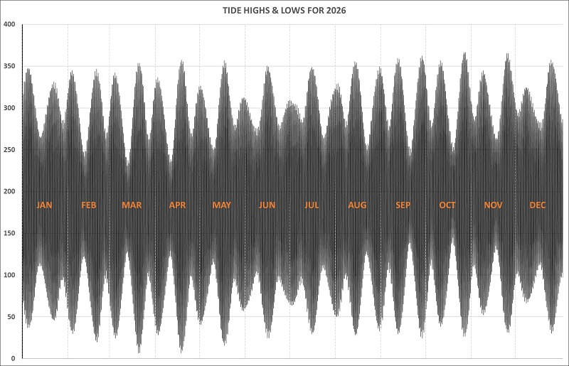

Baltimore Astronomy
Tides - Baltimore Pier & Lough Hyne
home
planets
tides
observing
collimation
gallery
contact
2026 Predicted Tides at Baltimore Pier and Lough Hyne
(plus 365-day chart and table)
Baltimore & Lough Hyne
(local time, DST applied where appropriate)
note LAT: 0cm HAT: 3.80m

jump to:
Jan
Feb
Mar
Apr
May
Jun
Jul
Aug
Sep
Oct
Nov
Dec
(model run 90) date ~ moonphase ~ Baltimore tide ~~~ Lough Hyne tide
Thu 1 Jan 2026 ~ 94% ~ Baltimore: Low: 08:55 0.67m ~~~ Lough Hyne: 11:57 1.86m
Thu 1 Jan 2026 ~ 95% ~ Baltimore: High: 14:56 3.16m ~~~ Lough Hyne: 16:03 2.94m (+1:06)
Thu 1 Jan 2026 ~ 96% ~ Baltimore: Low: 21:13 0.69m ~~~ Lough Hyne: 00:17 1.86m
Fri 2 Jan 2026 ~ 97% ~ Baltimore: High: 03:24 3.32m ~~~ Lough Hyne: 04:26 3.11m (+1:01)
Fri 2 Jan 2026 ~ 98% ~ Baltimore: Low: 09:58 0.53m ~~~ Lough Hyne: 13:04 1.86m
Fri 2 Jan 2026 ~ 99% ~ Baltimore: High: 15:59 3.31m ~~~ Lough Hyne: 17:03 3.09m (+1:03)
Fri 2 Jan 2026 ~ 99% ~ Baltimore: Low: 22:16 0.58m ~~~ Lough Hyne: 01:18 1.86m
Sat 3 Jan 2026 ~ 100% ~ Baltimore: High: 04:23 3.42m ~~~ Lough Hyne: 05:23 3.21m (+1:00) F
Sat 3 Jan 2026 ~ 100% ~ Baltimore: Low: 10:54 0.42m ~~~ Lough Hyne: 13:58 1.85m
Sat 3 Jan 2026 ~ 100% ~ Baltimore: High: 16:56 3.42m ~~~ Lough Hyne: 17:58 3.19m (+1:01) F
Sat 3 Jan 2026 ~ 99% ~ Baltimore: Low: 23:13 0.48m ~~~ Lough Hyne: 02:17 1.86m
Sun 4 Jan 2026 ~ 99% ~ Baltimore: High: 05:18 3.47m ~~~ Lough Hyne: 06:18 3.24m (+1:00) F
Sun 4 Jan 2026 ~ 98% ~ Baltimore: Low: 11:43 0.37m ~~~ Lough Hyne: 14:51 1.85m
Sun 4 Jan 2026 ~ 97% ~ Baltimore: High: 17:49 3.48m ~~~ Lough Hyne: 18:52 3.26m (+1:02) F
Mon 5 Jan 2026 ~ 96% ~ Baltimore: Low: 00:02 0.41m ~~~ Lough Hyne: 03:08 1.86m
Mon 5 Jan 2026 ~ 95% ~ Baltimore: High: 06:09 3.45m ~~~ Lough Hyne: 07:11 3.24m (+1:02) F
Mon 5 Jan 2026 ~ 94% ~ Baltimore: Low: 12:25 0.37m ~~~ Lough Hyne: 15:37 1.86m
Mon 5 Jan 2026 ~ 93% ~ Baltimore: High: 18:38 3.46m ~~~ Lough Hyne: 19:41 3.25m (+1:02) F
Tue 6 Jan 2026 ~ 91% ~ Baltimore: Low: 00:45 0.40m ~~~ Lough Hyne: 03:57 1.86m
Tue 6 Jan 2026 ~ 89% ~ Baltimore: High: 06:57 3.39m ~~~ Lough Hyne: 08:01 3.17m (+1:03) F
Tue 6 Jan 2026 ~ 87% ~ Baltimore: Low: 13:02 0.43m ~~~ Lough Hyne: 16:17 1.86m
Tue 6 Jan 2026 ~ 86% ~ Baltimore: High: 19:24 3.40m ~~~ Lough Hyne: 20:24 3.19m (+1:00) F
Wed 7 Jan 2026 ~ 84% ~ Baltimore: Low: 01:24 0.46m ~~~ Lough Hyne: 04:42 1.86m
Wed 7 Jan 2026 ~ 81% ~ Baltimore: High: 07:42 3.30m ~~~ Lough Hyne: 08:44 3.08m (+1:02)
Wed 7 Jan 2026 ~ 79% ~ Baltimore: Low: 13:38 0.54m ~~~ Lough Hyne: 17:01 1.86m
Wed 7 Jan 2026 ~ 77% ~ Baltimore: High: 20:07 3.29m ~~~ Lough Hyne: 21:12 3.08m (+1:04)
Thu 8 Jan 2026 ~ 75% ~ Baltimore: Low: 02:02 0.58m ~~~ Lough Hyne: 05:26 1.86m
Thu 8 Jan 2026 ~ 72% ~ Baltimore: High: 08:25 3.17m ~~~ Lough Hyne: 09:32 2.95m (+1:07)
Thu 8 Jan 2026 ~ 70% ~ Baltimore: Low: 14:14 0.69m ~~~ Lough Hyne: 17:45 1.87m
Thu 8 Jan 2026 ~ 67% ~ Baltimore: High: 20:49 3.15m ~~~ Lough Hyne: 21:54 2.94m (+1:05)
Fri 9 Jan 2026 ~ 65% ~ Baltimore: Low: 02:43 0.73m ~~~ Lough Hyne: 06:12 1.87m
Fri 9 Jan 2026 ~ 63% ~ Baltimore: High: 09:08 3.03m ~~~ Lough Hyne: 10:17 2.80m (+1:08)
Fri 9 Jan 2026 ~ 60% ~ Baltimore: Low: 14:57 0.85m ~~~ Lough Hyne: 18:29 1.87m
Fri 9 Jan 2026 ~ 58% ~ Baltimore: High: 21:33 2.99m ~~~ Lough Hyne: 22:43 2.78m (+1:10)
Sat 10 Jan 2026 ~ 55% ~ Baltimore: Low: 03:33 0.90m ~~~ Lough Hyne: 06:59 1.87m
Sat 10 Jan 2026 ~ 53% ~ Baltimore: High: 09:53 2.88m ~~~ Lough Hyne: 11:06 2.66m (+1:12)
Sat 10 Jan 2026 ~ 50% ~ Baltimore: Low: 15:50 1.00m ~~~ Lough Hyne: 19:22 1.87m
Sat 10 Jan 2026 ~ 48% ~ Baltimore: High: 22:20 2.84m ~~~ Lough Hyne: 23:35 2.64m (+1:14)
Sun 11 Jan 2026 ~ 45% ~ Baltimore: Low: 04:39 1.04m ~~~ Lough Hyne: 07:55 1.87m
Sun 11 Jan 2026 ~ 43% ~ Baltimore: High: 10:43 2.75m ~~~ Lough Hyne: 12:03 2.54m (+1:19)
Sun 11 Jan 2026 ~ 40% ~ Baltimore: Low: 17:02 1.11m ~~~ Lough Hyne: 20:17 1.87m
Sun 11 Jan 2026 ~ 38% ~ Baltimore: High: 23:16 2.72m ~~~ Lough Hyne: 00:35 2.52m (+1:18)
Mon 12 Jan 2026 ~ 35% ~ Baltimore: Low: 05:53 1.10m ~~~ Lough Hyne: 08:53 1.87m
Mon 12 Jan 2026 ~ 33% ~ Baltimore: High: 11:43 2.66m ~~~ Lough Hyne: 13:04 2.46m (+1:20)
Mon 12 Jan 2026 ~ 31% ~ Baltimore: Low: 18:17 1.14m ~~~ Lough Hyne: 21:17 1.87m
Tue 13 Jan 2026 ~ 28% ~ Baltimore: High: 00:22 2.65m ~~~ Lough Hyne: 01:43 2.47m (+1:21)
Tue 13 Jan 2026 ~ 26% ~ Baltimore: Low: 06:59 1.10m ~~~ Lough Hyne: 09:54 1.87m
Tue 13 Jan 2026 ~ 24% ~ Baltimore: High: 12:51 2.64m ~~~ Lough Hyne: 14:12 2.45m (+1:21)
Tue 13 Jan 2026 ~ 22% ~ Baltimore: Low: 19:23 1.11m ~~~ Lough Hyne: 22:24 1.86m
Wed 14 Jan 2026 ~ 20% ~ Baltimore: High: 01:29 2.66m ~~~ Lough Hyne: 02:47 2.48m (+1:17)
Wed 14 Jan 2026 ~ 18% ~ Baltimore: Low: 08:00 1.06m ~~~ Lough Hyne: 10:55 1.87m
Wed 14 Jan 2026 ~ 16% ~ Baltimore: High: 13:55 2.70m ~~~ Lough Hyne: 15:13 2.51m (+1:17)
Wed 14 Jan 2026 ~ 14% ~ Baltimore: Low: 20:24 1.05m ~~~ Lough Hyne: 23:25 1.86m
Thu 15 Jan 2026 ~ 13% ~ Baltimore: High: 02:29 2.73m ~~~ Lough Hyne: 03:44 2.53m (+1:15)
Thu 15 Jan 2026 ~ 11% ~ Baltimore: Low: 08:56 0.99m ~~~ Lough Hyne: 11:51 1.86m
Thu 15 Jan 2026 ~ 9.8% ~ Baltimore: High: 14:51 2.81m ~~~ Lough Hyne: 16:04 2.60m (+1:13)
Thu 15 Jan 2026 ~ 8.3% ~ Baltimore: Low: 21:19 0.95m ~~~ Lough Hyne: 00:17 1.86m
Fri 16 Jan 2026 ~ 7.0% ~ Baltimore: High: 03:20 2.82m ~~~ Lough Hyne: 04:33 2.61m (+1:13)
Fri 16 Jan 2026 ~ 5.7% ~ Baltimore: Low: 09:49 0.90m ~~~ Lough Hyne: 12:42 1.86m
Fri 16 Jan 2026 ~ 4.7% ~ Baltimore: High: 15:40 2.92m ~~~ Lough Hyne: 16:52 2.71m (+1:12)
Fri 16 Jan 2026 ~ 3.7% ~ Baltimore: Low: 22:09 0.84m ~~~ Lough Hyne: 01:07 1.86m
Sat 17 Jan 2026 ~ 2.8% ~ Baltimore: High: 04:05 2.92m ~~~ Lough Hyne: 05:15 2.70m (+1:10)
Sat 17 Jan 2026 ~ 2.0% ~ Baltimore: Low: 10:35 0.80m ~~~ Lough Hyne: 13:27 1.86m
Sat 17 Jan 2026 ~ 1.4% ~ Baltimore: High: 16:24 3.03m ~~~ Lough Hyne: 17:33 2.82m (+1:08)
Sat 17 Jan 2026 ~ 0.9% ~ Baltimore: Low: 22:53 0.73m ~~~ Lough Hyne: 01:48 1.86m
Sun 18 Jan 2026 ~ 0.5% ~ Baltimore: High: 04:45 3.02m ~~~ Lough Hyne: 05:54 2.80m (+1:09)
Sun 18 Jan 2026 ~ 0.2% ~ Baltimore: Low: 11:16 0.70m ~~~ Lough Hyne: 14:07 1.86m
Sun 18 Jan 2026 ~ 0.1% ~ Baltimore: High: 17:05 3.13m ~~~ Lough Hyne: 18:13 2.91m (+1:07)
Sun 18 Jan 2026 ~ 0.1% ~ Baltimore: Low: 23:30 0.62m ~~~ Lough Hyne: 02:27 1.86m
Mon 19 Jan 2026 ~ 0.2% ~ Baltimore: High: 05:22 3.12m ~~~ Lough Hyne: 06:32 2.91m (+1:09)
Mon 19 Jan 2026 ~ 0.5% ~ Baltimore: Low: 11:52 0.60m ~~~ Lough Hyne: 14:47 1.86m
Mon 19 Jan 2026 ~ 0.9% ~ Baltimore: High: 17:42 3.20m ~~~ Lough Hyne: 18:51 2.97m (+1:08)
Tue 20 Jan 2026 ~ 1.4% ~ Baltimore: Low: 00:03 0.54m ~~~ Lough Hyne: 03:03 1.86m
Tue 20 Jan 2026 ~ 2.1% ~ Baltimore: High: 05:57 3.21m ~~~ Lough Hyne: 07:03 3.00m (+1:06)
Tue 20 Jan 2026 ~ 2.9% ~ Baltimore: Low: 12:23 0.52m ~~~ Lough Hyne: 15:24 1.86m
Tue 20 Jan 2026 ~ 3.9% ~ Baltimore: High: 18:18 3.24m ~~~ Lough Hyne: 19:23 3.02m (+1:05)
Wed 21 Jan 2026 ~ 5.0% ~ Baltimore: Low: 00:33 0.48m ~~~ Lough Hyne: 03:36 1.86m
Wed 21 Jan 2026 ~ 6.2% ~ Baltimore: High: 06:31 3.28m ~~~ Lough Hyne: 07:35 3.06m (+1:04)
Wed 21 Jan 2026 ~ 7.5% ~ Baltimore: Low: 12:51 0.47m ~~~ Lough Hyne: 15:57 1.86m
Wed 21 Jan 2026 ~ 9.0% ~ Baltimore: High: 18:53 3.25m ~~~ Lough Hyne: 20:01 3.02m (+1:07)
Thu 22 Jan 2026 ~ 11% ~ Baltimore: Low: 01:01 0.47m ~~~ Lough Hyne: 04:07 1.86m
Thu 22 Jan 2026 ~ 12% ~ Baltimore: High: 07:05 3.31m ~~~ Lough Hyne: 08:11 3.10m (+1:06)
Thu 22 Jan 2026 ~ 14% ~ Baltimore: Low: 13:18 0.46m ~~~ Lough Hyne: 16:34 1.86m
Thu 22 Jan 2026 ~ 16% ~ Baltimore: High: 19:29 3.23m ~~~ Lough Hyne: 20:34 3.01m (+1:05)
Fri 23 Jan 2026 ~ 18% ~ Baltimore: Low: 01:30 0.51m ~~~ Lough Hyne: 04:42 1.86m
Fri 23 Jan 2026 ~ 20% ~ Baltimore: High: 07:41 3.30m ~~~ Lough Hyne: 08:44 3.08m (+1:03)
Fri 23 Jan 2026 ~ 23% ~ Baltimore: Low: 13:47 0.49m ~~~ Lough Hyne: 17:09 1.86m
Fri 23 Jan 2026 ~ 25% ~ Baltimore: High: 20:07 3.18m ~~~ Lough Hyne: 21:13 2.96m (+1:06)
Sat 24 Jan 2026 ~ 27% ~ Baltimore: Low: 02:03 0.59m ~~~ Lough Hyne: 05:18 1.86m
Sat 24 Jan 2026 ~ 30% ~ Baltimore: High: 08:19 3.23m ~~~ Lough Hyne: 09:24 3.01m (+1:04)
Sat 24 Jan 2026 ~ 33% ~ Baltimore: Low: 14:21 0.57m ~~~ Lough Hyne: 17:53 1.86m
Sat 24 Jan 2026 ~ 35% ~ Baltimore: High: 20:47 3.11m ~~~ Lough Hyne: 21:55 2.88m (+1:07)
Sun 25 Jan 2026 ~ 38% ~ Baltimore: Low: 02:43 0.72m ~~~ Lough Hyne: 06:07 1.86m
Sun 25 Jan 2026 ~ 41% ~ Baltimore: High: 09:02 3.11m ~~~ Lough Hyne: 10:12 2.89m (+1:09)
Sun 25 Jan 2026 ~ 44% ~ Baltimore: Low: 15:03 0.69m ~~~ Lough Hyne: 18:37 1.86m
Sun 25 Jan 2026 ~ 47% ~ Baltimore: High: 21:33 3.02m ~~~ Lough Hyne: 22:44 2.79m (+1:10)
Mon 26 Jan 2026 ~ 50% ~ Baltimore: Low: 03:38 0.85m ~~~ Lough Hyne: 07:04 1.86m
Mon 26 Jan 2026 ~ 52% ~ Baltimore: High: 09:53 2.96m ~~~ Lough Hyne: 11:05 2.73m (+1:11)
Mon 26 Jan 2026 ~ 55% ~ Baltimore: Low: 15:59 0.83m ~~~ Lough Hyne: 19:35 1.86m
Mon 26 Jan 2026 ~ 58% ~ Baltimore: High: 22:27 2.92m ~~~ Lough Hyne: 23:43 2.70m (+1:15)
Tue 27 Jan 2026 ~ 61% ~ Baltimore: Low: 04:53 0.94m ~~~ Lough Hyne: 08:12 1.86m
Tue 27 Jan 2026 ~ 64% ~ Baltimore: High: 10:57 2.82m ~~~ Lough Hyne: 12:14 2.60m (+1:16)
Tue 27 Jan 2026 ~ 67% ~ Baltimore: Low: 17:14 0.94m ~~~ Lough Hyne: 20:37 1.86m
Tue 27 Jan 2026 ~ 70% ~ Baltimore: High: 23:36 2.85m ~~~ Lough Hyne: 00:53 2.65m (+1:17)
Wed 28 Jan 2026 ~ 73% ~ Baltimore: Low: 06:19 0.94m ~~~ Lough Hyne: 09:27 1.86m
Wed 28 Jan 2026 ~ 75% ~ Baltimore: High: 12:17 2.75m ~~~ Lough Hyne: 13:36 2.54m (+1:18)
Wed 28 Jan 2026 ~ 78% ~ Baltimore: Low: 18:39 0.97m ~~~ Lough Hyne: 21:54 1.86m
Thu 29 Jan 2026 ~ 81% ~ Baltimore: High: 00:57 2.86m ~~~ Lough Hyne: 02:13 2.66m (+1:16)
Thu 29 Jan 2026 ~ 83% ~ Baltimore: Low: 07:41 0.86m ~~~ Lough Hyne: 10:48 1.85m
Thu 29 Jan 2026 ~ 85% ~ Baltimore: High: 13:43 2.82m ~~~ Lough Hyne: 15:01 2.60m (+1:17)
Thu 29 Jan 2026 ~ 87% ~ Baltimore: Low: 20:03 0.92m ~~~ Lough Hyne: 23:11 1.86m
Fri 30 Jan 2026 ~ 89% ~ Baltimore: High: 02:16 2.95m ~~~ Lough Hyne: 03:27 2.75m (+1:10)
Fri 30 Jan 2026 ~ 91% ~ Baltimore: Low: 08:55 0.74m ~~~ Lough Hyne: 12:04 1.85m
Fri 30 Jan 2026 ~ 93% ~ Baltimore: High: 14:58 2.98m ~~~ Lough Hyne: 16:11 2.75m (+1:12)
Fri 30 Jan 2026 ~ 94% ~ Baltimore: Low: 21:18 0.78m ~~~ Lough Hyne: 00:24 1.86m
Sat 31 Jan 2026 ~ 96% ~ Baltimore: High: 03:24 3.10m ~~~ Lough Hyne: 04:32 2.88m (+1:08)
Sat 31 Jan 2026 ~ 97% ~ Baltimore: Low: 09:59 0.60m ~~~ Lough Hyne: 13:06 1.85m
Sat 31 Jan 2026 ~ 98% ~ Baltimore: High: 15:59 3.17m ~~~ Lough Hyne: 17:04 2.94m (+1:05)
Sat 31 Jan 2026 ~ 99% ~ Baltimore: Low: 22:21 0.61m ~~~ Lough Hyne: 01:25 1.86m
Sun 1 Feb 2026 ~ 99% ~ Baltimore: High: 04:20 3.24m ~~~ Lough Hyne: 05:24 3.01m (+1:04)
Sun 1 Feb 2026 ~ 100% ~ Baltimore: Low: 10:51 0.47m ~~~ Lough Hyne: 13:56 1.85m
Sun 1 Feb 2026 ~ 100% ~ Baltimore: High: 16:50 3.33m ~~~ Lough Hyne: 17:53 3.10m (+1:03)
Sun 1 Feb 2026 ~ 100% ~ Baltimore: Low: 23:11 0.45m ~~~ Lough Hyne: 02:15 1.86m
Mon 2 Feb 2026 ~ 100% ~ Baltimore: High: 05:08 3.34m ~~~ Lough Hyne: 06:12 3.11m (+1:04)
Mon 2 Feb 2026 ~ 100% ~ Baltimore: Low: 11:33 0.38m ~~~ Lough Hyne: 14:37 1.85m
Mon 2 Feb 2026 ~ 99% ~ Baltimore: High: 17:34 3.43m ~~~ Lough Hyne: 18:34 3.20m (+1:00) F
Mon 2 Feb 2026 ~ 99% ~ Baltimore: Low: 23:51 0.34m ~~~ Lough Hyne: 02:57 1.85m
Tue 3 Feb 2026 ~ 98% ~ Baltimore: High: 05:50 3.39m ~~~ Lough Hyne: 06:53 3.16m (+1:02) F
Tue 3 Feb 2026 ~ 97% ~ Baltimore: Low: 12:08 0.34m ~~~ Lough Hyne: 15:16 1.85m
Tue 3 Feb 2026 ~ 96% ~ Baltimore: High: 18:13 3.45m ~~~ Lough Hyne: 19:14 3.23m (+1:00) F
Wed 4 Feb 2026 ~ 95% ~ Baltimore: Low: 00:25 0.30m ~~~ Lough Hyne: 03:36 1.85m
Wed 4 Feb 2026 ~ 93% ~ Baltimore: High: 06:29 3.38m ~~~ Lough Hyne: 07:32 3.16m (+1:03) F
Wed 4 Feb 2026 ~ 92% ~ Baltimore: Low: 12:38 0.35m ~~~ Lough Hyne: 15:52 1.85m
Wed 4 Feb 2026 ~ 90% ~ Baltimore: High: 18:51 3.41m ~~~ Lough Hyne: 19:53 3.19m (+1:01) F
Thu 5 Feb 2026 ~ 89% ~ Baltimore: Low: 00:56 0.33m ~~~ Lough Hyne: 04:13 1.86m
Thu 5 Feb 2026 ~ 87% ~ Baltimore: High: 07:07 3.31m ~~~ Lough Hyne: 08:12 3.09m (+1:05)
Thu 5 Feb 2026 ~ 85% ~ Baltimore: Low: 13:06 0.42m ~~~ Lough Hyne: 16:26 1.86m
Thu 5 Feb 2026 ~ 83% ~ Baltimore: High: 19:28 3.31m ~~~ Lough Hyne: 20:32 3.09m (+1:04)
Fri 6 Feb 2026 ~ 81% ~ Baltimore: Low: 01:26 0.43m ~~~ Lough Hyne: 04:47 1.86m
Fri 6 Feb 2026 ~ 79% ~ Baltimore: High: 07:44 3.20m ~~~ Lough Hyne: 08:51 2.97m (+1:07)
Fri 6 Feb 2026 ~ 77% ~ Baltimore: Low: 13:34 0.53m ~~~ Lough Hyne: 17:04 1.86m
Fri 6 Feb 2026 ~ 75% ~ Baltimore: High: 20:05 3.16m ~~~ Lough Hyne: 21:12 2.95m (+1:07)
Sat 7 Feb 2026 ~ 73% ~ Baltimore: Low: 01:58 0.59m ~~~ Lough Hyne: 05:27 1.86m
Sat 7 Feb 2026 ~ 71% ~ Baltimore: High: 08:21 3.05m ~~~ Lough Hyne: 09:32 2.82m (+1:10)
Sat 7 Feb 2026 ~ 68% ~ Baltimore: Low: 14:06 0.69m ~~~ Lough Hyne: 17:44 1.86m
Sat 7 Feb 2026 ~ 66% ~ Baltimore: High: 20:43 2.99m ~~~ Lough Hyne: 21:53 2.78m (+1:10)
Sun 8 Feb 2026 ~ 64% ~ Baltimore: Low: 02:34 0.78m ~~~ Lough Hyne: 06:08 1.86m
Sun 8 Feb 2026 ~ 61% ~ Baltimore: High: 09:02 2.88m ~~~ Lough Hyne: 10:14 2.65m (+1:12)
Sun 8 Feb 2026 ~ 59% ~ Baltimore: Low: 14:45 0.87m ~~~ Lough Hyne: 18:28 1.86m
Sun 8 Feb 2026 ~ 56% ~ Baltimore: High: 21:26 2.81m ~~~ Lough Hyne: 22:42 2.60m (+1:16)
Mon 9 Feb 2026 ~ 54% ~ Baltimore: Low: 03:21 0.97m ~~~ Lough Hyne: 07:01 1.86m
Mon 9 Feb 2026 ~ 51% ~ Baltimore: High: 09:48 2.71m ~~~ Lough Hyne: 11:06 2.49m (+1:17)
Mon 9 Feb 2026 ~ 49% ~ Baltimore: Low: 15:36 1.05m ~~~ Lough Hyne: 19:25 1.86m
Mon 9 Feb 2026 ~ 46% ~ Baltimore: High: 22:15 2.63m ~~~ Lough Hyne: 23:37 2.42m (+1:22)
Tue 10 Feb 2026 ~ 44% ~ Baltimore: Low: 04:28 1.14m ~~~ Lough Hyne: 07:58 1.86m
Tue 10 Feb 2026 ~ 42% ~ Baltimore: High: 10:44 2.56m ~~~ Lough Hyne: 12:10 2.35m (+1:26)
Tue 10 Feb 2026 ~ 39% ~ Baltimore: Low: 16:54 1.19m ~~~ Lough Hyne: 20:28 1.86m
Tue 10 Feb 2026 ~ 37% ~ Baltimore: High: 23:18 2.48m ~~~ Lough Hyne: 00:47 2.30m (+1:28)
Wed 11 Feb 2026 ~ 34% ~ Baltimore: Low: 06:03 1.22m ~~~ Lough Hyne: 09:07 1.85m
Wed 11 Feb 2026 ~ 32% ~ Baltimore: High: 11:55 2.47m ~~~ Lough Hyne: 13:24 2.29m (+1:28)
Wed 11 Feb 2026 ~ 30% ~ Baltimore: Low: 18:35 1.22m ~~~ Lough Hyne: 21:45 1.85m
Thu 12 Feb 2026 ~ 27% ~ Baltimore: High: 00:38 2.42m ~~~ Lough Hyne: 02:09 2.25m (+1:30)
Thu 12 Feb 2026 ~ 25% ~ Baltimore: Low: 07:25 1.19m ~~~ Lough Hyne: 10:18 1.85m
Thu 12 Feb 2026 ~ 23% ~ Baltimore: High: 13:17 2.49m ~~~ Lough Hyne: 14:43 2.31m (+1:26)
Thu 12 Feb 2026 ~ 21% ~ Baltimore: Low: 19:54 1.15m ~~~ Lough Hyne: 22:57 1.85m
Fri 13 Feb 2026 ~ 19% ~ Baltimore: High: 01:58 2.48m ~~~ Lough Hyne: 03:23 2.30m (+1:24)
Fri 13 Feb 2026 ~ 17% ~ Baltimore: Low: 08:32 1.10m ~~~ Lough Hyne: 11:27 1.85m
Fri 13 Feb 2026 ~ 15% ~ Baltimore: High: 14:27 2.61m ~~~ Lough Hyne: 15:46 2.40m (+1:18)
Fri 13 Feb 2026 ~ 13% ~ Baltimore: Low: 20:57 1.02m ~~~ Lough Hyne: 00:02 1.85m
Sat 14 Feb 2026 ~ 12% ~ Baltimore: High: 02:59 2.62m ~~~ Lough Hyne: 04:18 2.41m (+1:19)
Sat 14 Feb 2026 ~ 10.0% ~ Baltimore: Low: 09:28 0.96m ~~~ Lough Hyne: 12:26 1.85m
Sat 14 Feb 2026 ~ 8.6% ~ Baltimore: High: 15:22 2.77m ~~~ Lough Hyne: 16:36 2.55m (+1:14)
Sat 14 Feb 2026 ~ 7.1% ~ Baltimore: Low: 21:49 0.86m ~~~ Lough Hyne: 00:50 1.86m
Sun 15 Feb 2026 ~ 5.9% ~ Baltimore: High: 03:46 2.80m ~~~ Lough Hyne: 05:02 2.58m (+1:16)
Sun 15 Feb 2026 ~ 4.6% ~ Baltimore: Low: 10:16 0.79m ~~~ Lough Hyne: 13:12 1.85m
Sun 15 Feb 2026 ~ 3.7% ~ Baltimore: High: 16:06 2.94m ~~~ Lough Hyne: 17:16 2.71m (+1:10)
Sun 15 Feb 2026 ~ 2.7% ~ Baltimore: Low: 22:31 0.68m ~~~ Lough Hyne: 01:29 1.85m
Mon 16 Feb 2026 ~ 1.9% ~ Baltimore: High: 04:24 2.99m ~~~ Lough Hyne: 05:34 2.77m (+1:09)
Mon 16 Feb 2026 ~ 1.2% ~ Baltimore: Low: 10:55 0.61m ~~~ Lough Hyne: 13:51 1.85m
Mon 16 Feb 2026 ~ 0.7% ~ Baltimore: High: 16:44 3.11m ~~~ Lough Hyne: 17:52 2.87m (+1:08)
Mon 16 Feb 2026 ~ 0.3% ~ Baltimore: Low: 23:07 0.52m ~~~ Lough Hyne: 02:06 1.85m
Tue 17 Feb 2026 ~ 0.1% ~ Baltimore: High: 04:58 3.18m ~~~ Lough Hyne: 06:04 2.95m (+1:06)
Tue 17 Feb 2026 ~ 0.0% ~ Baltimore: Low: 11:28 0.44m ~~~ Lough Hyne: 14:27 1.85m
Tue 17 Feb 2026 ~ 0.1% ~ Baltimore: High: 17:18 3.24m ~~~ Lough Hyne: 18:23 3.01m (+1:05)
Tue 17 Feb 2026 ~ 0.3% ~ Baltimore: Low: 23:38 0.38m ~~~ Lough Hyne: 02:37 1.85m
Wed 18 Feb 2026 ~ 0.6% ~ Baltimore: High: 05:29 3.34m ~~~ Lough Hyne: 06:33 3.11m (+1:03)
Wed 18 Feb 2026 ~ 1.2% ~ Baltimore: Low: 11:57 0.31m ~~~ Lough Hyne: 14:57 1.85m
Wed 18 Feb 2026 ~ 1.8% ~ Baltimore: High: 17:50 3.33m ~~~ Lough Hyne: 18:54 3.10m (+1:03)
Thu 19 Feb 2026 ~ 2.6% ~ Baltimore: Low: 00:06 0.29m ~~~ Lough Hyne: 03:07 1.85m
Thu 19 Feb 2026 ~ 3.6% ~ Baltimore: High: 06:01 3.44m ~~~ Lough Hyne: 07:03 3.22m (+1:01) F
Thu 19 Feb 2026 ~ 4.7% ~ Baltimore: Low: 12:23 0.22m ~~~ Lough Hyne: 15:32 1.85m
Thu 19 Feb 2026 ~ 6.0% ~ Baltimore: High: 18:23 3.38m ~~~ Lough Hyne: 19:26 3.14m (+1:02) F
Fri 20 Feb 2026 ~ 7.4% ~ Baltimore: Low: 00:34 0.26m ~~~ Lough Hyne: 03:37 1.85m
Fri 20 Feb 2026 ~ 8.9% ~ Baltimore: High: 06:34 3.47m ~~~ Lough Hyne: 07:34 3.24m (+1:00) F
Fri 20 Feb 2026 ~ 11% ~ Baltimore: Low: 12:49 0.20m ~~~ Lough Hyne: 16:06 1.85m
Fri 20 Feb 2026 ~ 13% ~ Baltimore: High: 18:58 3.38m ~~~ Lough Hyne: 20:02 3.15m (+1:03) F
Sat 21 Feb 2026 ~ 14% ~ Baltimore: Low: 01:04 0.30m ~~~ Lough Hyne: 04:16 1.85m
Sat 21 Feb 2026 ~ 17% ~ Baltimore: High: 07:11 3.42m ~~~ Lough Hyne: 08:13 3.19m (+1:02) F
Sat 21 Feb 2026 ~ 19% ~ Baltimore: Low: 13:17 0.26m ~~~ Lough Hyne: 16:41 1.85m
Sat 21 Feb 2026 ~ 21% ~ Baltimore: High: 19:36 3.32m ~~~ Lough Hyne: 20:42 3.09m (+1:05)
Sun 22 Feb 2026 ~ 24% ~ Baltimore: Low: 01:37 0.40m ~~~ Lough Hyne: 04:57 1.86m
Sun 22 Feb 2026 ~ 26% ~ Baltimore: High: 07:52 3.29m ~~~ Lough Hyne: 08:56 3.05m (+1:03)
Sun 22 Feb 2026 ~ 29% ~ Baltimore: Low: 13:51 0.39m ~~~ Lough Hyne: 17:24 1.85m
Sun 22 Feb 2026 ~ 31% ~ Baltimore: High: 20:20 3.22m ~~~ Lough Hyne: 21:25 2.98m (+1:05)
Mon 23 Feb 2026 ~ 34% ~ Baltimore: Low: 02:19 0.56m ~~~ Lough Hyne: 05:48 1.86m
Mon 23 Feb 2026 ~ 37% ~ Baltimore: High: 08:41 3.11m ~~~ Lough Hyne: 09:51 2.87m (+1:10)
Mon 23 Feb 2026 ~ 40% ~ Baltimore: Low: 14:33 0.58m ~~~ Lough Hyne: 18:14 1.85m
Mon 23 Feb 2026 ~ 43% ~ Baltimore: High: 21:10 3.07m ~~~ Lough Hyne: 22:21 2.84m (+1:11)
Tue 24 Feb 2026 ~ 46% ~ Baltimore: Low: 03:13 0.74m ~~~ Lough Hyne: 06:54 1.86m
Tue 24 Feb 2026 ~ 49% ~ Baltimore: High: 09:39 2.90m ~~~ Lough Hyne: 10:53 2.66m (+1:13)
Tue 24 Feb 2026 ~ 52% ~ Baltimore: Low: 15:30 0.80m ~~~ Lough Hyne: 19:16 1.85m
Tue 24 Feb 2026 ~ 55% ~ Baltimore: High: 22:09 2.90m ~~~ Lough Hyne: 23:24 2.68m (+1:14)
Wed 25 Feb 2026 ~ 58% ~ Baltimore: Low: 04:29 0.89m ~~~ Lough Hyne: 08:07 1.85m
Wed 25 Feb 2026 ~ 61% ~ Baltimore: High: 10:49 2.72m ~~~ Lough Hyne: 12:11 2.49m (+1:21)
Wed 25 Feb 2026 ~ 63% ~ Baltimore: Low: 16:52 0.99m ~~~ Lough Hyne: 20:28 1.85m
Wed 25 Feb 2026 ~ 66% ~ Baltimore: High: 23:23 2.75m ~~~ Lough Hyne: 00:43 2.54m (+1:20)
Thu 26 Feb 2026 ~ 69% ~ Baltimore: Low: 06:10 0.96m ~~~ Lough Hyne: 09:34 1.85m
Thu 26 Feb 2026 ~ 72% ~ Baltimore: High: 12:15 2.64m ~~~ Lough Hyne: 13:41 2.42m (+1:25)
Thu 26 Feb 2026 ~ 75% ~ Baltimore: Low: 18:39 1.05m ~~~ Lough Hyne: 21:56 1.85m
Fri 27 Feb 2026 ~ 77% ~ Baltimore: High: 00:51 2.70m ~~~ Lough Hyne: 02:13 2.50m (+1:21)
Fri 27 Feb 2026 ~ 80% ~ Baltimore: Low: 07:43 0.91m ~~~ Lough Hyne: 10:55 1.85m
Fri 27 Feb 2026 ~ 82% ~ Baltimore: High: 13:45 2.71m ~~~ Lough Hyne: 15:04 2.49m (+1:18)
Fri 27 Feb 2026 ~ 84% ~ Baltimore: Low: 20:11 0.95m ~~~ Lough Hyne: 23:17 1.85m
Sat 28 Feb 2026 ~ 87% ~ Baltimore: High: 02:15 2.79m ~~~ Lough Hyne: 03:32 2.58m (+1:17)
Sat 28 Feb 2026 ~ 89% ~ Baltimore: Low: 08:56 0.78m ~~~ Lough Hyne: 12:04 1.85m
Sat 28 Feb 2026 ~ 90% ~ Baltimore: High: 14:56 2.90m ~~~ Lough Hyne: 16:11 2.66m (+1:14)
Sat 28 Feb 2026 ~ 92% ~ Baltimore: Low: 21:21 0.77m ~~~ Lough Hyne: 00:26 1.85m
Sun 1 Mar 2026 ~ 93% ~ Baltimore: High: 03:19 2.96m ~~~ Lough Hyne: 04:32 2.73m (+1:12)
Sun 1 Mar 2026 ~ 95% ~ Baltimore: Low: 09:53 0.63m ~~~ Lough Hyne: 12:57 1.85m
Sun 1 Mar 2026 ~ 96% ~ Baltimore: High: 15:50 3.11m ~~~ Lough Hyne: 16:56 2.86m (+1:06)
Sun 1 Mar 2026 ~ 97% ~ Baltimore: Low: 22:15 0.57m ~~~ Lough Hyne: 01:17 1.85m
Mon 2 Mar 2026 ~ 98% ~ Baltimore: High: 04:08 3.14m ~~~ Lough Hyne: 05:14 2.90m (+1:06)
Mon 2 Mar 2026 ~ 99% ~ Baltimore: Low: 10:37 0.49m ~~~ Lough Hyne: 13:37 1.85m
Mon 2 Mar 2026 ~ 99% ~ Baltimore: High: 16:32 3.28m ~~~ Lough Hyne: 17:35 3.03m (+1:03)
Mon 2 Mar 2026 ~ 100% ~ Baltimore: Low: 22:56 0.40m ~~~ Lough Hyne: 01:57 1.85m
Tue 3 Mar 2026 ~ 100% ~ Baltimore: High: 04:48 3.28m ~~~ Lough Hyne: 05:53 3.04m (+1:04)
Tue 3 Mar 2026 ~ 100% ~ Baltimore: Low: 11:13 0.37m ~~~ Lough Hyne: 14:16 1.85m
Tue 3 Mar 2026 ~ 100% ~ Baltimore: High: 17:09 3.39m ~~~ Lough Hyne: 18:12 3.15m (+1:03) F
Tue 3 Mar 2026 ~ 100% ~ Baltimore: Low: 23:29 0.28m ~~~ Lough Hyne: 02:35 1.85m
Wed 4 Mar 2026 ~ 99% ~ Baltimore: High: 05:23 3.35m ~~~ Lough Hyne: 06:26 3.11m (+1:02)
Wed 4 Mar 2026 ~ 99% ~ Baltimore: Low: 11:42 0.31m ~~~ Lough Hyne: 14:47 1.85m
Wed 4 Mar 2026 ~ 98% ~ Baltimore: High: 17:42 3.42m ~~~ Lough Hyne: 18:43 3.19m (+1:01) F
Wed 4 Mar 2026 ~ 97% ~ Baltimore: Low: 23:58 0.24m ~~~ Lough Hyne: 03:07 1.85m
Thu 5 Mar 2026 ~ 97% ~ Baltimore: High: 05:56 3.36m ~~~ Lough Hyne: 07:02 3.12m (+1:05)
Thu 5 Mar 2026 ~ 96% ~ Baltimore: Low: 12:07 0.30m ~~~ Lough Hyne: 15:17 1.85m
Thu 5 Mar 2026 ~ 94% ~ Baltimore: High: 18:15 3.38m ~~~ Lough Hyne: 19:17 3.15m (+1:01) F
Fri 6 Mar 2026 ~ 93% ~ Baltimore: Low: 00:25 0.28m ~~~ Lough Hyne: 03:37 1.85m
Fri 6 Mar 2026 ~ 92% ~ Baltimore: High: 06:29 3.30m ~~~ Lough Hyne: 07:33 3.07m (+1:04)
Fri 6 Mar 2026 ~ 90% ~ Baltimore: Low: 12:32 0.35m ~~~ Lough Hyne: 15:51 1.85m
Fri 6 Mar 2026 ~ 89% ~ Baltimore: High: 18:48 3.29m ~~~ Lough Hyne: 19:53 3.07m (+1:04)
Sat 7 Mar 2026 ~ 87% ~ Baltimore: Low: 00:52 0.37m ~~~ Lough Hyne: 04:12 1.85m
Sat 7 Mar 2026 ~ 85% ~ Baltimore: High: 07:04 3.19m ~~~ Lough Hyne: 08:12 2.96m (+1:08)
Sat 7 Mar 2026 ~ 84% ~ Baltimore: Low: 12:58 0.45m ~~~ Lough Hyne: 16:26 1.85m
Sat 7 Mar 2026 ~ 82% ~ Baltimore: High: 19:23 3.14m ~~~ Lough Hyne: 20:32 2.92m (+1:08)
Sun 8 Mar 2026 ~ 80% ~ Baltimore: Low: 01:20 0.52m ~~~ Lough Hyne: 04:47 1.86m
Sun 8 Mar 2026 ~ 78% ~ Baltimore: High: 07:40 3.04m ~~~ Lough Hyne: 08:52 2.81m (+1:11)
Sun 8 Mar 2026 ~ 76% ~ Baltimore: Low: 13:27 0.60m ~~~ Lough Hyne: 17:04 1.86m
Sun 8 Mar 2026 ~ 74% ~ Baltimore: High: 20:00 2.97m ~~~ Lough Hyne: 21:13 2.75m (+1:12)
Mon 9 Mar 2026 ~ 71% ~ Baltimore: Low: 01:51 0.70m ~~~ Lough Hyne: 05:27 1.86m
Mon 9 Mar 2026 ~ 69% ~ Baltimore: High: 08:21 2.87m ~~~ Lough Hyne: 09:34 2.64m (+1:13)
Mon 9 Mar 2026 ~ 67% ~ Baltimore: Low: 14:01 0.78m ~~~ Lough Hyne: 17:47 1.86m
Mon 9 Mar 2026 ~ 65% ~ Baltimore: High: 20:42 2.77m ~~~ Lough Hyne: 21:58 2.55m (+1:16)
Tue 10 Mar 2026 ~ 62% ~ Baltimore: Low: 02:28 0.90m ~~~ Lough Hyne: 06:17 1.86m
Tue 10 Mar 2026 ~ 60% ~ Baltimore: High: 09:06 2.70m ~~~ Lough Hyne: 10:24 2.48m (+1:18)
Tue 10 Mar 2026 ~ 58% ~ Baltimore: Low: 14:44 0.97m ~~~ Lough Hyne: 18:41 1.86m
Tue 10 Mar 2026 ~ 55% ~ Baltimore: High: 21:29 2.58m ~~~ Lough Hyne: 22:53 2.37m (+1:24)
Wed 11 Mar 2026 ~ 53% ~ Baltimore: Low: 03:16 1.09m ~~~ Lough Hyne: 07:16 1.85m
Wed 11 Mar 2026 ~ 50% ~ Baltimore: High: 09:59 2.53m ~~~ Lough Hyne: 11:24 2.33m (+1:24)
Wed 11 Mar 2026 ~ 48% ~ Baltimore: Low: 15:43 1.15m ~~~ Lough Hyne: 19:47 1.85m
Wed 11 Mar 2026 ~ 45% ~ Baltimore: High: 22:26 2.41m ~~~ Lough Hyne: 23:55 2.22m (+1:29)
Thu 12 Mar 2026 ~ 43% ~ Baltimore: Low: 04:33 1.25m ~~~ Lough Hyne: 08:25 1.85m
Thu 12 Mar 2026 ~ 40% ~ Baltimore: High: 11:05 2.41m ~~~ Lough Hyne: 12:35 2.22m (+1:30)
Thu 12 Mar 2026 ~ 38% ~ Baltimore: Low: 17:28 1.27m ~~~ Lough Hyne: 21:06 1.85m
Thu 12 Mar 2026 ~ 35% ~ Baltimore: High: 23:41 2.31m ~~~ Lough Hyne: 01:17 2.14m (+1:36)
Fri 13 Mar 2026 ~ 33% ~ Baltimore: Low: 06:42 1.28m ~~~ Lough Hyne: 09:41 1.84m
Fri 13 Mar 2026 ~ 30% ~ Baltimore: High: 12:29 2.37m ~~~ Lough Hyne: 14:03 2.20m (+1:34)
Fri 13 Mar 2026 ~ 28% ~ Baltimore: Low: 19:17 1.21m ~~~ Lough Hyne: 22:25 1.85m
Sat 14 Mar 2026 ~ 26% ~ Baltimore: High: 01:12 2.34m ~~~ Lough Hyne: 02:45 2.17m (+1:32)
Sat 14 Mar 2026 ~ 23% ~ Baltimore: Low: 08:00 1.17m ~~~ Lough Hyne: 10:56 1.84m
Sat 14 Mar 2026 ~ 21% ~ Baltimore: High: 13:51 2.47m ~~~ Lough Hyne: 15:16 2.28m (+1:24)
Sat 14 Mar 2026 ~ 19% ~ Baltimore: Low: 20:24 1.06m ~~~ Lough Hyne: 23:27 1.85m
Sun 15 Mar 2026 ~ 17% ~ Baltimore: High: 02:24 2.51m ~~~ Lough Hyne: 03:47 2.31m (+1:22)
Sun 15 Mar 2026 ~ 15% ~ Baltimore: Low: 08:57 0.99m ~~~ Lough Hyne: 11:56 1.85m
Sun 15 Mar 2026 ~ 13% ~ Baltimore: High: 14:51 2.66m ~~~ Lough Hyne: 16:11 2.45m (+1:20)
Sun 15 Mar 2026 ~ 11% ~ Baltimore: Low: 21:14 0.87m ~~~ Lough Hyne: 00:17 1.85m
Mon 16 Mar 2026 ~ 9.9% ~ Baltimore: High: 03:13 2.75m ~~~ Lough Hyne: 04:30 2.53m (+1:17)
Mon 16 Mar 2026 ~ 8.2% ~ Baltimore: Low: 09:42 0.77m ~~~ Lough Hyne: 12:43 1.85m
Mon 16 Mar 2026 ~ 6.9% ~ Baltimore: High: 15:35 2.88m ~~~ Lough Hyne: 16:46 2.65m (+1:11)
Mon 16 Mar 2026 ~ 5.5% ~ Baltimore: Low: 21:55 0.66m ~~~ Lough Hyne: 00:56 1.85m
Tue 17 Mar 2026 ~ 4.4% ~ Baltimore: High: 03:50 3.01m ~~~ Lough Hyne: 05:02 2.78m (+1:11)
Tue 17 Mar 2026 ~ 3.2% ~ Baltimore: Low: 10:19 0.54m ~~~ Lough Hyne: 13:18 1.85m
Tue 17 Mar 2026 ~ 2.4% ~ Baltimore: High: 16:11 3.10m ~~~ Lough Hyne: 17:21 2.86m (+1:10)
Tue 17 Mar 2026 ~ 1.6% ~ Baltimore: Low: 22:30 0.46m ~~~ Lough Hyne: 01:27 1.85m
Wed 18 Mar 2026 ~ 1.0% ~ Baltimore: High: 04:22 3.25m ~~~ Lough Hyne: 05:26 3.01m (+1:04)
Wed 18 Mar 2026 ~ 0.5% ~ Baltimore: Low: 10:52 0.32m ~~~ Lough Hyne: 13:55 1.85m
Wed 18 Mar 2026 ~ 0.2% ~ Baltimore: High: 16:44 3.29m ~~~ Lough Hyne: 17:48 3.04m (+1:04)
Wed 18 Mar 2026 ~ 0.0% ~ Baltimore: Low: 23:02 0.29m ~~~ Lough Hyne: 02:01 1.85m
Thu 19 Mar 2026 ~ 0.1% ~ Baltimore: High: 04:53 3.43m ~~~ Lough Hyne: 05:54 3.20m (+1:00) F
Thu 19 Mar 2026 ~ 0.3% ~ Baltimore: Low: 11:21 0.16m ~~~ Lough Hyne: 14:27 1.84m
Thu 19 Mar 2026 ~ 0.6% ~ Baltimore: High: 17:16 3.43m ~~~ Lough Hyne: 18:20 3.18m (+1:04) F
Thu 19 Mar 2026 ~ 1.2% ~ Baltimore: Low: 23:34 0.18m ~~~ Lough Hyne: 02:36 1.85m
Fri 20 Mar 2026 ~ 1.9% ~ Baltimore: High: 05:26 3.53m ~~~ Lough Hyne: 06:26 3.30m (+0:59) F
Fri 20 Mar 2026 ~ 2.8% ~ Baltimore: Low: 11:49 0.07m ~~~ Lough Hyne: 14:57 1.84m
Fri 20 Mar 2026 ~ 3.8% ~ Baltimore: High: 17:51 3.50m ~~~ Lough Hyne: 18:52 3.27m (+1:01) F
Sat 21 Mar 2026 ~ 5.1% ~ Baltimore: Low: 00:06 0.14m ~~~ Lough Hyne: 03:13 1.85m
Sat 21 Mar 2026 ~ 6.4% ~ Baltimore: High: 06:04 3.54m ~~~ Lough Hyne: 07:03 3.31m (+0:59) F
Sat 21 Mar 2026 ~ 8.0% ~ Baltimore: Low: 12:19 0.07m ~~~ Lough Hyne: 15:36 1.84m
Sat 21 Mar 2026 ~ 9.7% ~ Baltimore: High: 18:29 3.49m ~~~ Lough Hyne: 19:32 3.27m (+1:02) F
Sun 22 Mar 2026 ~ 12% ~ Baltimore: Low: 00:40 0.18m ~~~ Lough Hyne: 03:56 1.85m
Sun 22 Mar 2026 ~ 14% ~ Baltimore: High: 06:47 3.44m ~~~ Lough Hyne: 07:51 3.20m (+1:03) F
Sun 22 Mar 2026 ~ 16% ~ Baltimore: Low: 12:52 0.17m ~~~ Lough Hyne: 16:17 1.85m
Sun 22 Mar 2026 ~ 18% ~ Baltimore: High: 19:13 3.41m ~~~ Lough Hyne: 20:14 3.19m (+1:01) F
Mon 23 Mar 2026 ~ 20% ~ Baltimore: Low: 01:20 0.29m ~~~ Lough Hyne: 04:46 1.85m
Mon 23 Mar 2026 ~ 23% ~ Baltimore: High: 07:37 3.28m ~~~ Lough Hyne: 08:42 3.04m (+1:05)
Mon 23 Mar 2026 ~ 25% ~ Baltimore: Low: 13:32 0.35m ~~~ Lough Hyne: 17:06 1.85m
Mon 23 Mar 2026 ~ 28% ~ Baltimore: High: 20:04 3.26m ~~~ Lough Hyne: 21:11 3.03m (+1:07)
Tue 24 Mar 2026 ~ 31% ~ Baltimore: Low: 02:06 0.47m ~~~ Lough Hyne: 05:46 1.85m
Tue 24 Mar 2026 ~ 34% ~ Baltimore: High: 08:34 3.07m ~~~ Lough Hyne: 09:43 2.83m (+1:08)
Tue 24 Mar 2026 ~ 36% ~ Baltimore: Low: 14:21 0.58m ~~~ Lough Hyne: 18:03 1.85m
Tue 24 Mar 2026 ~ 40% ~ Baltimore: High: 21:01 3.06m ~~~ Lough Hyne: 22:12 2.84m (+1:10)
Wed 25 Mar 2026 ~ 42% ~ Baltimore: Low: 03:03 0.68m ~~~ Lough Hyne: 06:55 1.85m
Wed 25 Mar 2026 ~ 46% ~ Baltimore: High: 09:39 2.86m ~~~ Lough Hyne: 10:53 2.62m (+1:14)
Wed 25 Mar 2026 ~ 48% ~ Baltimore: Low: 15:23 0.83m ~~~ Lough Hyne: 19:13 1.85m
Wed 25 Mar 2026 ~ 51% ~ Baltimore: High: 22:06 2.85m ~~~ Lough Hyne: 23:22 2.63m (+1:16)
Thu 26 Mar 2026 ~ 54% ~ Baltimore: Low: 04:18 0.88m ~~~ Lough Hyne: 08:12 1.85m
Thu 26 Mar 2026 ~ 57% ~ Baltimore: High: 10:52 2.69m ~~~ Lough Hyne: 12:13 2.46m (+1:21)
Thu 26 Mar 2026 ~ 60% ~ Baltimore: Low: 16:52 1.03m ~~~ Lough Hyne: 20:34 1.85m
Thu 26 Mar 2026 ~ 63% ~ Baltimore: High: 23:21 2.68m ~~~ Lough Hyne: 00:43 2.47m (+1:22)
Fri 27 Mar 2026 ~ 66% ~ Baltimore: Low: 06:07 0.98m ~~~ Lough Hyne: 09:32 1.84m
Fri 27 Mar 2026 ~ 69% ~ Baltimore: High: 12:14 2.62m ~~~ Lough Hyne: 13:38 2.40m (+1:23)
Fri 27 Mar 2026 ~ 72% ~ Baltimore: Low: 18:47 1.04m ~~~ Lough Hyne: 21:57 1.85m
Sat 28 Mar 2026 ~ 74% ~ Baltimore: High: 00:47 2.63m ~~~ Lough Hyne: 02:12 2.42m (+1:25)
Sat 28 Mar 2026 ~ 77% ~ Baltimore: Low: 07:38 0.93m ~~~ Lough Hyne: 10:46 1.84m
Sat 28 Mar 2026 ~ 79% ~ Baltimore: High: 13:37 2.70m ~~~ Lough Hyne: 14:55 2.48m (+1:18)
Sat 28 Mar 2026 ~ 81% ~ Baltimore: Low: 20:08 0.91m ~~~ Lough Hyne: 23:14 1.85m
Sun 29 Mar 2026 ~ 83% ~ Baltimore: High: 03:05 2.73m ~~~ Lough Hyne: 04:23 2.52m (+1:17)
Sun 29 Mar 2026 ~ 86% ~ Baltimore: Low: 09:43 0.80m ~~~ Lough Hyne: 12:46 1.85m
Sun 29 Mar 2026 ~ 87% ~ Baltimore: High: 15:40 2.88m ~~~ Lough Hyne: 16:53 2.66m (+1:12)
Sun 29 Mar 2026 ~ 89% ~ Baltimore: Low: 22:06 0.72m ~~~ Lough Hyne: 01:11 1.85m
Mon 30 Mar 2026 ~ 91% ~ Baltimore: High: 04:02 2.92m ~~~ Lough Hyne: 05:14 2.69m (+1:11)
Mon 30 Mar 2026 ~ 92% ~ Baltimore: Low: 10:32 0.65m ~~~ Lough Hyne: 13:35 1.85m
Mon 30 Mar 2026 ~ 94% ~ Baltimore: High: 16:27 3.08m ~~~ Lough Hyne: 17:34 2.84m (+1:07)
Mon 30 Mar 2026 ~ 95% ~ Baltimore: Low: 22:52 0.53m ~~~ Lough Hyne: 01:56 1.85m
Tue 31 Mar 2026 ~ 96% ~ Baltimore: High: 04:44 3.10m ~~~ Lough Hyne: 05:53 2.86m (+1:08)
Tue 31 Mar 2026 ~ 97% ~ Baltimore: Low: 11:11 0.51m ~~~ Lough Hyne: 14:13 1.85m
Tue 31 Mar 2026 ~ 98% ~ Baltimore: High: 17:05 3.24m ~~~ Lough Hyne: 18:12 3.00m (+1:06)
Tue 31 Mar 2026 ~ 99% ~ Baltimore: Low: 23:28 0.39m ~~~ Lough Hyne: 02:33 1.85m
Wed 1 Apr 2026 ~ 99% ~ Baltimore: High: 05:20 3.24m ~~~ Lough Hyne: 06:24 2.99m (+1:04)
Wed 1 Apr 2026 ~ 100% ~ Baltimore: Low: 11:43 0.40m ~~~ Lough Hyne: 14:46 1.85m
Wed 1 Apr 2026 ~ 100% ~ Baltimore: High: 17:38 3.34m ~~~ Lough Hyne: 18:42 3.10m (+1:03)
Wed 1 Apr 2026 ~ 100% ~ Baltimore: Low: 00:00 0.30m ~~~ Lough Hyne: 03:06 1.85m
Thu 2 Apr 2026 ~ 100% ~ Baltimore: High: 05:52 3.30m ~~~ Lough Hyne: 06:55 3.05m (+1:03)
Thu 2 Apr 2026 ~ 100% ~ Baltimore: Low: 12:11 0.34m ~~~ Lough Hyne: 15:17 1.85m
Thu 2 Apr 2026 ~ 100% ~ Baltimore: High: 18:10 3.36m ~~~ Lough Hyne: 19:13 3.13m (+1:02)
Thu 2 Apr 2026 ~ 99% ~ Baltimore: Low: 00:29 0.28m ~~~ Lough Hyne: 03:36 1.85m
Fri 3 Apr 2026 ~ 99% ~ Baltimore: High: 06:24 3.30m ~~~ Lough Hyne: 07:30 3.05m (+1:06)
Fri 3 Apr 2026 ~ 98% ~ Baltimore: Low: 12:38 0.34m ~~~ Lough Hyne: 15:47 1.85m
Fri 3 Apr 2026 ~ 97% ~ Baltimore: High: 18:42 3.32m ~~~ Lough Hyne: 19:45 3.09m (+1:02)
Fri 3 Apr 2026 ~ 96% ~ Baltimore: Low: 00:57 0.32m ~~~ Lough Hyne: 04:07 1.85m
Sat 4 Apr 2026 ~ 95% ~ Baltimore: High: 06:57 3.25m ~~~ Lough Hyne: 08:03 3.01m (+1:05)
Sat 4 Apr 2026 ~ 94% ~ Baltimore: Low: 13:04 0.39m ~~~ Lough Hyne: 16:18 1.85m
Sat 4 Apr 2026 ~ 93% ~ Baltimore: High: 19:15 3.22m ~~~ Lough Hyne: 20:22 3.00m (+1:06)
Sun 5 Apr 2026 ~ 92% ~ Baltimore: Low: 01:24 0.42m ~~~ Lough Hyne: 04:42 1.85m
Sun 5 Apr 2026 ~ 90% ~ Baltimore: High: 07:32 3.14m ~~~ Lough Hyne: 08:42 2.91m (+1:09)
Sun 5 Apr 2026 ~ 89% ~ Baltimore: Low: 13:31 0.48m ~~~ Lough Hyne: 16:56 1.85m
Sun 5 Apr 2026 ~ 87% ~ Baltimore: High: 19:51 3.08m ~~~ Lough Hyne: 21:02 2.86m (+1:11)
Mon 6 Apr 2026 ~ 86% ~ Baltimore: Low: 01:53 0.55m ~~~ Lough Hyne: 05:17 1.85m
Mon 6 Apr 2026 ~ 84% ~ Baltimore: High: 08:10 3.01m ~~~ Lough Hyne: 09:22 2.78m (+1:12)
Mon 6 Apr 2026 ~ 82% ~ Baltimore: Low: 14:02 0.61m ~~~ Lough Hyne: 17:35 1.85m
Mon 6 Apr 2026 ~ 80% ~ Baltimore: High: 20:29 2.92m ~~~ Lough Hyne: 21:43 2.70m (+1:13)
Tue 7 Apr 2026 ~ 78% ~ Baltimore: Low: 02:23 0.70m ~~~ Lough Hyne: 05:57 1.85m
Tue 7 Apr 2026 ~ 76% ~ Baltimore: High: 08:52 2.86m ~~~ Lough Hyne: 10:05 2.64m (+1:13)
Tue 7 Apr 2026 ~ 74% ~ Baltimore: Low: 14:37 0.76m ~~~ Lough Hyne: 18:17 1.86m
Tue 7 Apr 2026 ~ 72% ~ Baltimore: High: 21:11 2.75m ~~~ Lough Hyne: 22:31 2.53m (+1:20)
Wed 8 Apr 2026 ~ 70% ~ Baltimore: Low: 02:58 0.87m ~~~ Lough Hyne: 06:45 1.85m
Wed 8 Apr 2026 ~ 67% ~ Baltimore: High: 09:37 2.71m ~~~ Lough Hyne: 10:55 2.49m (+1:17)
Wed 8 Apr 2026 ~ 65% ~ Baltimore: Low: 15:17 0.93m ~~~ Lough Hyne: 19:08 1.86m
Wed 8 Apr 2026 ~ 63% ~ Baltimore: High: 21:57 2.58m ~~~ Lough Hyne: 23:22 2.37m (+1:24)
Thu 9 Apr 2026 ~ 61% ~ Baltimore: Low: 03:39 1.04m ~~~ Lough Hyne: 07:37 1.85m
Thu 9 Apr 2026 ~ 58% ~ Baltimore: High: 10:28 2.57m ~~~ Lough Hyne: 11:53 2.36m (+1:24)
Thu 9 Apr 2026 ~ 56% ~ Baltimore: Low: 16:08 1.09m ~~~ Lough Hyne: 20:12 1.85m
Thu 9 Apr 2026 ~ 53% ~ Baltimore: High: 22:51 2.44m ~~~ Lough Hyne: 00:19 2.24m (+1:28)
Fri 10 Apr 2026 ~ 51% ~ Baltimore: Low: 04:36 1.20m ~~~ Lough Hyne: 08:45 1.85m
Fri 10 Apr 2026 ~ 48% ~ Baltimore: High: 11:27 2.45m ~~~ Lough Hyne: 12:55 2.25m (+1:28)
Fri 10 Apr 2026 ~ 45% ~ Baltimore: Low: 17:23 1.23m ~~~ Lough Hyne: 21:23 1.85m
Fri 10 Apr 2026 ~ 43% ~ Baltimore: High: 23:54 2.35m ~~~ Lough Hyne: 01:31 2.17m (+1:36)
Sat 11 Apr 2026 ~ 40% ~ Baltimore: Low: 06:35 1.29m ~~~ Lough Hyne: 09:57 1.84m
Sat 11 Apr 2026 ~ 38% ~ Baltimore: High: 12:38 2.39m ~~~ Lough Hyne: 14:13 2.20m (+1:34)
Sat 11 Apr 2026 ~ 35% ~ Baltimore: Low: 19:25 1.22m ~~~ Lough Hyne: 22:34 1.85m
Sun 12 Apr 2026 ~ 33% ~ Baltimore: High: 01:13 2.36m ~~~ Lough Hyne: 02:51 2.19m (+1:37)
Sun 12 Apr 2026 ~ 30% ~ Baltimore: Low: 08:14 1.19m ~~~ Lough Hyne: 11:08 1.84m
Sun 12 Apr 2026 ~ 28% ~ Baltimore: High: 13:59 2.44m ~~~ Lough Hyne: 15:27 2.25m (+1:28)
Sun 12 Apr 2026 ~ 25% ~ Baltimore: Low: 20:35 1.08m ~~~ Lough Hyne: 23:36 1.85m
Mon 13 Apr 2026 ~ 23% ~ Baltimore: High: 02:29 2.51m ~~~ Lough Hyne: 03:55 2.33m (+1:25)
Mon 13 Apr 2026 ~ 21% ~ Baltimore: Low: 09:11 0.99m ~~~ Lough Hyne: 12:10 1.85m
Mon 13 Apr 2026 ~ 19% ~ Baltimore: High: 15:05 2.62m ~~~ Lough Hyne: 16:24 2.41m (+1:19)
Mon 13 Apr 2026 ~ 16% ~ Baltimore: Low: 21:25 0.89m ~~~ Lough Hyne: 00:26 1.85m
Tue 14 Apr 2026 ~ 14% ~ Baltimore: High: 03:23 2.76m ~~~ Lough Hyne: 04:42 2.55m (+1:18)
Tue 14 Apr 2026 ~ 12% ~ Baltimore: Low: 09:55 0.75m ~~~ Lough Hyne: 12:57 1.85m
Tue 14 Apr 2026 ~ 11% ~ Baltimore: High: 15:52 2.86m ~~~ Lough Hyne: 17:04 2.63m (+1:12)
Tue 14 Apr 2026 ~ 8.9% ~ Baltimore: Low: 22:08 0.67m ~~~ Lough Hyne: 01:07 1.85m
Wed 15 Apr 2026 ~ 7.5% ~ Baltimore: High: 04:04 3.03m ~~~ Lough Hyne: 05:13 2.81m (+1:08)
Wed 15 Apr 2026 ~ 5.9% ~ Baltimore: Low: 10:33 0.50m ~~~ Lough Hyne: 13:37 1.85m
Wed 15 Apr 2026 ~ 4.7% ~ Baltimore: High: 16:30 3.11m ~~~ Lough Hyne: 17:37 2.87m (+1:07)
Wed 15 Apr 2026 ~ 3.5% ~ Baltimore: Low: 22:47 0.46m ~~~ Lough Hyne: 01:47 1.85m
Thu 16 Apr 2026 ~ 2.6% ~ Baltimore: High: 04:40 3.28m ~~~ Lough Hyne: 05:44 3.05m (+1:03)
Thu 16 Apr 2026 ~ 1.7% ~ Baltimore: Low: 11:08 0.29m ~~~ Lough Hyne: 14:15 1.84m
Thu 16 Apr 2026 ~ 1.0% ~ Baltimore: High: 17:06 3.33m ~~~ Lough Hyne: 18:11 3.09m (+1:05)
Thu 16 Apr 2026 ~ 0.5% ~ Baltimore: Low: 23:25 0.28m ~~~ Lough Hyne: 02:26 1.85m
Fri 17 Apr 2026 ~ 0.2% ~ Baltimore: High: 05:17 3.46m ~~~ Lough Hyne: 06:18 3.22m (+1:00) F
Fri 17 Apr 2026 ~ 0.1% ~ Baltimore: Low: 11:42 0.13m ~~~ Lough Hyne: 14:48 1.84m
Fri 17 Apr 2026 ~ 0.2% ~ Baltimore: High: 17:42 3.50m ~~~ Lough Hyne: 18:43 3.27m (+1:00) F
Fri 17 Apr 2026 ~ 0.4% ~ Baltimore: Low: 00:03 0.16m ~~~ Lough Hyne: 03:07 1.85m
Sat 18 Apr 2026 ~ 0.9% ~ Baltimore: High: 05:57 3.54m ~~~ Lough Hyne: 06:56 3.30m (+0:59) F
Sat 18 Apr 2026 ~ 1.5% ~ Baltimore: Low: 12:18 0.07m ~~~ Lough Hyne: 15:27 1.84m
Sat 18 Apr 2026 ~ 2.4% ~ Baltimore: High: 18:23 3.57m ~~~ Lough Hyne: 19:22 3.35m (+0:59) F
Sat 18 Apr 2026 ~ 3.4% ~ Baltimore: Low: 00:44 0.11m ~~~ Lough Hyne: 03:54 1.85m
Sun 19 Apr 2026 ~ 4.6% ~ Baltimore: High: 06:43 3.53m ~~~ Lough Hyne: 07:43 3.29m (+1:00) F
Sun 19 Apr 2026 ~ 6.0% ~ Baltimore: Low: 12:57 0.09m ~~~ Lough Hyne: 16:14 1.84m
Sun 19 Apr 2026 ~ 7.5% ~ Baltimore: High: 19:09 3.55m ~~~ Lough Hyne: 20:11 3.33m (+1:02) F
Mon 20 Apr 2026 ~ 9.3% ~ Baltimore: Low: 01:27 0.15m ~~~ Lough Hyne: 04:45 1.85m
Mon 20 Apr 2026 ~ 11% ~ Baltimore: High: 07:35 3.42m ~~~ Lough Hyne: 08:37 3.18m (+1:02) F
Mon 20 Apr 2026 ~ 13% ~ Baltimore: Low: 13:40 0.21m ~~~ Lough Hyne: 17:03 1.85m
Mon 20 Apr 2026 ~ 15% ~ Baltimore: High: 20:01 3.44m ~~~ Lough Hyne: 21:03 3.22m (+1:01) F
Tue 21 Apr 2026 ~ 18% ~ Baltimore: Low: 02:13 0.27m ~~~ Lough Hyne: 05:42 1.85m
Tue 21 Apr 2026 ~ 20% ~ Baltimore: High: 08:34 3.26m ~~~ Lough Hyne: 09:41 3.02m (+1:07)
Tue 21 Apr 2026 ~ 23% ~ Baltimore: Low: 14:28 0.39m ~~~ Lough Hyne: 17:57 1.85m
Tue 21 Apr 2026 ~ 25% ~ Baltimore: High: 20:59 3.26m ~~~ Lough Hyne: 22:03 3.04m (+1:04)
Wed 22 Apr 2026 ~ 28% ~ Baltimore: Low: 03:03 0.45m ~~~ Lough Hyne: 06:45 1.85m
Wed 22 Apr 2026 ~ 31% ~ Baltimore: High: 09:36 3.07m ~~~ Lough Hyne: 10:44 2.83m (+1:08)
Wed 22 Apr 2026 ~ 33% ~ Baltimore: Low: 15:22 0.62m ~~~ Lough Hyne: 18:59 1.86m
Wed 22 Apr 2026 ~ 36% ~ Baltimore: High: 21:59 3.05m ~~~ Lough Hyne: 23:11 2.82m (+1:11)
Thu 23 Apr 2026 ~ 39% ~ Baltimore: Low: 03:58 0.67m ~~~ Lough Hyne: 07:49 1.85m
Thu 23 Apr 2026 ~ 42% ~ Baltimore: High: 10:40 2.89m ~~~ Lough Hyne: 11:53 2.66m (+1:13)
Thu 23 Apr 2026 ~ 45% ~ Baltimore: Low: 16:25 0.84m ~~~ Lough Hyne: 20:12 1.86m
Thu 23 Apr 2026 ~ 48% ~ Baltimore: High: 23:03 2.84m ~~~ Lough Hyne: 00:20 2.61m (+1:16)
Fri 24 Apr 2026 ~ 51% ~ Baltimore: Low: 05:09 0.88m ~~~ Lough Hyne: 09:01 1.85m
Fri 24 Apr 2026 ~ 54% ~ Baltimore: High: 11:47 2.75m ~~~ Lough Hyne: 13:04 2.52m (+1:17)
Fri 24 Apr 2026 ~ 57% ~ Baltimore: Low: 17:53 0.99m ~~~ Lough Hyne: 21:27 1.85m
Fri 24 Apr 2026 ~ 60% ~ Baltimore: High: 00:13 2.70m ~~~ Lough Hyne: 01:33 2.48m (+1:20)
Sat 25 Apr 2026 ~ 62% ~ Baltimore: Low: 06:51 0.98m ~~~ Lough Hyne: 10:12 1.85m
Sat 25 Apr 2026 ~ 65% ~ Baltimore: High: 12:59 2.69m ~~~ Lough Hyne: 14:22 2.48m (+1:23)
Sat 25 Apr 2026 ~ 68% ~ Baltimore: Low: 19:35 0.98m ~~~ Lough Hyne: 22:44 1.85m
Sun 26 Apr 2026 ~ 70% ~ Baltimore: High: 01:28 2.66m ~~~ Lough Hyne: 02:52 2.45m (+1:23)
Sun 26 Apr 2026 ~ 73% ~ Baltimore: Low: 08:14 0.94m ~~~ Lough Hyne: 11:17 1.85m
Sun 26 Apr 2026 ~ 75% ~ Baltimore: High: 14:11 2.75m ~~~ Lough Hyne: 15:29 2.53m (+1:17)
Sun 26 Apr 2026 ~ 78% ~ Baltimore: Low: 20:44 0.86m ~~~ Lough Hyne: 23:47 1.85m
Mon 27 Apr 2026 ~ 80% ~ Baltimore: High: 02:38 2.75m ~~~ Lough Hyne: 03:54 2.53m (+1:16)
Mon 27 Apr 2026 ~ 82% ~ Baltimore: Low: 09:12 0.82m ~~~ Lough Hyne: 12:14 1.85m
Mon 27 Apr 2026 ~ 84% ~ Baltimore: High: 15:10 2.89m ~~~ Lough Hyne: 16:23 2.67m (+1:12)
Mon 27 Apr 2026 ~ 86% ~ Baltimore: Low: 21:35 0.70m ~~~ Lough Hyne: 00:38 1.85m
Tue 28 Apr 2026 ~ 88% ~ Baltimore: High: 03:31 2.91m ~~~ Lough Hyne: 04:43 2.68m (+1:12)
Tue 28 Apr 2026 ~ 89% ~ Baltimore: Low: 09:57 0.69m ~~~ Lough Hyne: 12:57 1.85m
Tue 28 Apr 2026 ~ 91% ~ Baltimore: High: 15:55 3.05m ~~~ Lough Hyne: 17:03 2.82m (+1:07)
Tue 28 Apr 2026 ~ 92% ~ Baltimore: Low: 22:19 0.57m ~~~ Lough Hyne: 01:24 1.85m
Wed 29 Apr 2026 ~ 94% ~ Baltimore: High: 04:13 3.06m ~~~ Lough Hyne: 05:22 2.81m (+1:09)
Wed 29 Apr 2026 ~ 95% ~ Baltimore: Low: 10:36 0.58m ~~~ Lough Hyne: 13:37 1.85m
Wed 29 Apr 2026 ~ 96% ~ Baltimore: High: 16:34 3.18m ~~~ Lough Hyne: 17:41 2.94m (+1:07)
Wed 29 Apr 2026 ~ 97% ~ Baltimore: Low: 22:57 0.47m ~~~ Lough Hyne: 01:58 1.85m
Thu 30 Apr 2026 ~ 98% ~ Baltimore: High: 04:49 3.16m ~~~ Lough Hyne: 05:54 2.92m (+1:05)
Thu 30 Apr 2026 ~ 98% ~ Baltimore: Low: 11:12 0.49m ~~~ Lough Hyne: 14:16 1.85m
Thu 30 Apr 2026 ~ 99% ~ Baltimore: High: 17:08 3.25m ~~~ Lough Hyne: 18:13 3.02m (+1:04)
Thu 30 Apr 2026 ~ 99% ~ Baltimore: Low: 23:32 0.41m ~~~ Lough Hyne: 02:36 1.85m
Fri 1 May 2026 ~ 100% ~ Baltimore: High: 05:23 3.22m ~~~ Lough Hyne: 06:31 2.97m (+1:07)
Fri 1 May 2026 ~ 100% ~ Baltimore: Low: 11:44 0.45m ~~~ Lough Hyne: 14:47 1.85m
Fri 1 May 2026 ~ 100% ~ Baltimore: High: 17:42 3.26m ~~~ Lough Hyne: 18:46 3.02m (+1:03)
Fri 1 May 2026 ~ 100% ~ Baltimore: Low: 00:05 0.41m ~~~ Lough Hyne: 03:07 1.85m
Sat 2 May 2026 ~ 100% ~ Baltimore: High: 05:58 3.22m ~~~ Lough Hyne: 07:03 2.98m (+1:05)
Sat 2 May 2026 ~ 99% ~ Baltimore: Low: 12:15 0.46m ~~~ Lough Hyne: 15:25 1.85m
Sat 2 May 2026 ~ 99% ~ Baltimore: High: 18:17 3.22m ~~~ Lough Hyne: 19:23 2.99m (+1:06)
Sat 2 May 2026 ~ 98% ~ Baltimore: Low: 00:37 0.45m ~~~ Lough Hyne: 03:46 1.85m
Sun 3 May 2026 ~ 98% ~ Baltimore: High: 06:34 3.17m ~~~ Lough Hyne: 07:42 2.94m (+1:08)
Sun 3 May 2026 ~ 97% ~ Baltimore: Low: 12:46 0.50m ~~~ Lough Hyne: 15:57 1.85m
Sun 3 May 2026 ~ 96% ~ Baltimore: High: 18:53 3.12m ~~~ Lough Hyne: 20:02 2.90m (+1:09)
Mon 4 May 2026 ~ 95% ~ Baltimore: Low: 01:08 0.53m ~~~ Lough Hyne: 04:19 1.85m
Mon 4 May 2026 ~ 94% ~ Baltimore: High: 07:12 3.09m ~~~ Lough Hyne: 08:22 2.86m (+1:10)
Mon 4 May 2026 ~ 93% ~ Baltimore: Low: 13:18 0.57m ~~~ Lough Hyne: 16:37 1.85m
Mon 4 May 2026 ~ 92% ~ Baltimore: High: 19:30 3.01m ~~~ Lough Hyne: 20:43 2.79m (+1:12)
Tue 5 May 2026 ~ 90% ~ Baltimore: Low: 01:39 0.63m ~~~ Lough Hyne: 04:57 1.85m
Tue 5 May 2026 ~ 89% ~ Baltimore: High: 07:52 2.99m ~~~ Lough Hyne: 09:03 2.77m (+1:11)
Tue 5 May 2026 ~ 87% ~ Baltimore: Low: 13:50 0.67m ~~~ Lough Hyne: 17:17 1.86m
Tue 5 May 2026 ~ 85% ~ Baltimore: High: 20:10 2.88m ~~~ Lough Hyne: 21:24 2.66m (+1:14)
Wed 6 May 2026 ~ 84% ~ Baltimore: Low: 02:10 0.74m ~~~ Lough Hyne: 05:37 1.86m
Wed 6 May 2026 ~ 82% ~ Baltimore: High: 08:34 2.88m ~~~ Lough Hyne: 09:48 2.66m (+1:14)
Wed 6 May 2026 ~ 80% ~ Baltimore: Low: 14:25 0.78m ~~~ Lough Hyne: 17:58 1.86m
Wed 6 May 2026 ~ 78% ~ Baltimore: High: 20:51 2.76m ~~~ Lough Hyne: 22:12 2.54m (+1:20)
Thu 7 May 2026 ~ 76% ~ Baltimore: Low: 02:42 0.87m ~~~ Lough Hyne: 06:22 1.86m
Thu 7 May 2026 ~ 74% ~ Baltimore: High: 09:17 2.76m ~~~ Lough Hyne: 10:34 2.55m (+1:16)
Thu 7 May 2026 ~ 72% ~ Baltimore: Low: 15:03 0.89m ~~~ Lough Hyne: 18:46 1.86m
Thu 7 May 2026 ~ 69% ~ Baltimore: High: 21:36 2.65m ~~~ Lough Hyne: 22:56 2.43m (+1:20)
Fri 8 May 2026 ~ 67% ~ Baltimore: Low: 03:20 1.00m ~~~ Lough Hyne: 07:08 1.86m
Fri 8 May 2026 ~ 65% ~ Baltimore: High: 10:04 2.65m ~~~ Lough Hyne: 11:24 2.44m (+1:19)
Fri 8 May 2026 ~ 62% ~ Baltimore: Low: 15:47 1.02m ~~~ Lough Hyne: 19:37 1.86m
Fri 8 May 2026 ~ 60% ~ Baltimore: High: 22:24 2.56m ~~~ Lough Hyne: 23:47 2.35m (+1:23)
Sat 9 May 2026 ~ 58% ~ Baltimore: Low: 04:09 1.12m ~~~ Lough Hyne: 08:07 1.85m
Sat 9 May 2026 ~ 55% ~ Baltimore: High: 10:55 2.55m ~~~ Lough Hyne: 12:21 2.35m (+1:26)
Sat 9 May 2026 ~ 52% ~ Baltimore: Low: 16:46 1.12m ~~~ Lough Hyne: 20:36 1.85m
Sat 9 May 2026 ~ 50% ~ Baltimore: High: 23:17 2.52m ~~~ Lough Hyne: 00:44 2.31m (+1:26)
Sun 10 May 2026 ~ 47% ~ Baltimore: Low: 05:30 1.19m ~~~ Lough Hyne: 09:13 1.85m
Sun 10 May 2026 ~ 44% ~ Baltimore: High: 11:53 2.50m ~~~ Lough Hyne: 13:22 2.30m (+1:29)
Sun 10 May 2026 ~ 42% ~ Baltimore: Low: 18:17 1.16m ~~~ Lough Hyne: 21:36 1.85m
Sun 10 May 2026 ~ 39% ~ Baltimore: High: 00:18 2.53m ~~~ Lough Hyne: 01:46 2.33m (+1:27)
Mon 11 May 2026 ~ 36% ~ Baltimore: Low: 07:13 1.13m ~~~ Lough Hyne: 10:16 1.85m
Mon 11 May 2026 ~ 34% ~ Baltimore: High: 13:00 2.52m ~~~ Lough Hyne: 14:28 2.32m (+1:27)
Mon 11 May 2026 ~ 31% ~ Baltimore: Low: 19:35 1.07m ~~~ Lough Hyne: 22:35 1.85m
Tue 12 May 2026 ~ 29% ~ Baltimore: High: 01:24 2.63m ~~~ Lough Hyne: 02:51 2.43m (+1:26)
Tue 12 May 2026 ~ 26% ~ Baltimore: Low: 08:13 0.96m ~~~ Lough Hyne: 11:16 1.85m
Tue 12 May 2026 ~ 24% ~ Baltimore: High: 14:07 2.65m ~~~ Lough Hyne: 15:31 2.44m (+1:23)
Tue 12 May 2026 ~ 21% ~ Baltimore: Low: 20:31 0.91m ~~~ Lough Hyne: 23:27 1.85m
Wed 13 May 2026 ~ 19% ~ Baltimore: High: 02:25 2.81m ~~~ Lough Hyne: 03:42 2.61m (+1:17)
Wed 13 May 2026 ~ 17% ~ Baltimore: Low: 09:01 0.74m ~~~ Lough Hyne: 12:07 1.85m
Wed 13 May 2026 ~ 15% ~ Baltimore: High: 15:02 2.87m ~~~ Lough Hyne: 16:15 2.65m (+1:12)
Wed 13 May 2026 ~ 13% ~ Baltimore: Low: 21:20 0.72m ~~~ Lough Hyne: 00:17 1.86m
Thu 14 May 2026 ~ 11% ~ Baltimore: High: 03:16 3.03m ~~~ Lough Hyne: 04:24 2.82m (+1:08)
Thu 14 May 2026 ~ 8.9% ~ Baltimore: Low: 09:44 0.54m ~~~ Lough Hyne: 12:53 1.85m
Thu 14 May 2026 ~ 7.2% ~ Baltimore: High: 15:48 3.12m ~~~ Lough Hyne: 16:55 2.89m (+1:06)
Thu 14 May 2026 ~ 5.7% ~ Baltimore: Low: 22:07 0.52m ~~~ Lough Hyne: 01:07 1.85m
Fri 15 May 2026 ~ 4.5% ~ Baltimore: High: 04:02 3.25m ~~~ Lough Hyne: 05:06 3.01m (+1:03)
Fri 15 May 2026 ~ 3.2% ~ Baltimore: Low: 10:27 0.36m ~~~ Lough Hyne: 13:36 1.85m
Fri 15 May 2026 ~ 2.3% ~ Baltimore: High: 16:31 3.35m ~~~ Lough Hyne: 17:34 3.12m (+1:02)
Fri 15 May 2026 ~ 1.5% ~ Baltimore: Low: 22:54 0.34m ~~~ Lough Hyne: 01:57 1.85m
Sat 16 May 2026 ~ 0.9% ~ Baltimore: High: 04:49 3.40m ~~~ Lough Hyne: 05:52 3.17m (+1:03) F
Sat 16 May 2026 ~ 0.4% ~ Baltimore: Low: 11:11 0.24m ~~~ Lough Hyne: 14:18 1.85m
Sat 16 May 2026 ~ 0.2% ~ Baltimore: High: 17:16 3.50m ~~~ Lough Hyne: 18:16 3.27m (+0:59) F
Sat 16 May 2026 ~ 0.2% ~ Baltimore: Low: 23:43 0.21m ~~~ Lough Hyne: 02:47 1.85m
Sun 17 May 2026 ~ 0.4% ~ Baltimore: High: 05:39 3.48m ~~~ Lough Hyne: 06:42 3.25m (+1:02) F
Sun 17 May 2026 ~ 0.8% ~ Baltimore: Low: 11:58 0.19m ~~~ Lough Hyne: 15:07 1.85m
Sun 17 May 2026 ~ 1.4% ~ Baltimore: High: 18:06 3.57m ~~~ Lough Hyne: 19:04 3.35m (+0:58) F
Sun 17 May 2026 ~ 2.2% ~ Baltimore: Low: 00:32 0.16m ~~~ Lough Hyne: 03:45 1.85m
Mon 18 May 2026 ~ 3.2% ~ Baltimore: High: 06:34 3.48m ~~~ Lough Hyne: 07:35 3.24m (+1:00) F
Mon 18 May 2026 ~ 4.4% ~ Baltimore: Low: 12:47 0.21m ~~~ Lough Hyne: 16:02 1.85m
Mon 18 May 2026 ~ 5.7% ~ Baltimore: High: 19:00 3.54m ~~~ Lough Hyne: 20:01 3.32m (+1:01) F
Tue 19 May 2026 ~ 7.3% ~ Baltimore: Low: 01:21 0.18m ~~~ Lough Hyne: 04:38 1.85m
Tue 19 May 2026 ~ 9.0% ~ Baltimore: High: 07:33 3.41m ~~~ Lough Hyne: 08:35 3.17m (+1:01) F
Tue 19 May 2026 ~ 11% ~ Baltimore: Low: 13:37 0.30m ~~~ Lough Hyne: 16:57 1.85m
Tue 19 May 2026 ~ 13% ~ Baltimore: High: 19:57 3.42m ~~~ Lough Hyne: 21:00 3.20m (+1:03) F
Wed 20 May 2026 ~ 15% ~ Baltimore: Low: 02:10 0.29m ~~~ Lough Hyne: 05:37 1.85m
Wed 20 May 2026 ~ 17% ~ Baltimore: High: 08:32 3.29m ~~~ Lough Hyne: 09:36 3.05m (+1:03)
Wed 20 May 2026 ~ 20% ~ Baltimore: Low: 14:28 0.43m ~~~ Lough Hyne: 17:55 1.86m
Wed 20 May 2026 ~ 22% ~ Baltimore: High: 20:54 3.26m ~~~ Lough Hyne: 22:01 3.04m (+1:06)
Thu 21 May 2026 ~ 25% ~ Baltimore: Low: 02:57 0.46m ~~~ Lough Hyne: 06:35 1.85m
Thu 21 May 2026 ~ 27% ~ Baltimore: High: 09:31 3.15m ~~~ Lough Hyne: 10:37 2.91m (+1:06)
Thu 21 May 2026 ~ 30% ~ Baltimore: Low: 15:20 0.60m ~~~ Lough Hyne: 18:55 1.86m
Thu 21 May 2026 ~ 33% ~ Baltimore: High: 21:52 3.08m ~~~ Lough Hyne: 23:02 2.86m (+1:10)
Fri 22 May 2026 ~ 35% ~ Baltimore: Low: 03:47 0.66m ~~~ Lough Hyne: 07:33 1.85m
Fri 22 May 2026 ~ 38% ~ Baltimore: High: 10:27 3.00m ~~~ Lough Hyne: 11:37 2.76m (+1:09)
Fri 22 May 2026 ~ 41% ~ Baltimore: Low: 16:18 0.78m ~~~ Lough Hyne: 19:57 1.86m
Fri 22 May 2026 ~ 44% ~ Baltimore: High: 22:49 2.91m ~~~ Lough Hyne: 00:03 2.68m (+1:13)
Sat 23 May 2026 ~ 47% ~ Baltimore: Low: 04:48 0.85m ~~~ Lough Hyne: 08:34 1.85m
Sat 23 May 2026 ~ 50% ~ Baltimore: High: 11:25 2.88m ~~~ Lough Hyne: 12:41 2.65m (+1:16)
Sat 23 May 2026 ~ 52% ~ Baltimore: Low: 17:33 0.91m ~~~ Lough Hyne: 21:04 1.86m
Sat 23 May 2026 ~ 55% ~ Baltimore: High: 23:49 2.79m ~~~ Lough Hyne: 01:05 2.56m (+1:16)
Sun 24 May 2026 ~ 58% ~ Baltimore: Low: 06:12 0.96m ~~~ Lough Hyne: 09:35 1.85m
Sun 24 May 2026 ~ 61% ~ Baltimore: High: 12:25 2.80m ~~~ Lough Hyne: 13:43 2.58m (+1:17)
Sun 24 May 2026 ~ 63% ~ Baltimore: Low: 18:58 0.92m ~~~ Lough Hyne: 22:07 1.86m
Sun 24 May 2026 ~ 66% ~ Baltimore: High: 00:52 2.73m ~~~ Lough Hyne: 02:13 2.52m (+1:20)
Mon 25 May 2026 ~ 69% ~ Baltimore: Low: 07:30 0.95m ~~~ Lough Hyne: 10:35 1.85m
Mon 25 May 2026 ~ 71% ~ Baltimore: High: 13:30 2.80m ~~~ Lough Hyne: 14:45 2.59m (+1:15)
Mon 25 May 2026 ~ 73% ~ Baltimore: Low: 20:04 0.86m ~~~ Lough Hyne: 23:06 1.85m
Tue 26 May 2026 ~ 76% ~ Baltimore: High: 01:56 2.76m ~~~ Lough Hyne: 03:14 2.55m (+1:17)
Tue 26 May 2026 ~ 78% ~ Baltimore: Low: 08:28 0.88m ~~~ Lough Hyne: 11:28 1.85m
Tue 26 May 2026 ~ 80% ~ Baltimore: High: 14:29 2.87m ~~~ Lough Hyne: 15:43 2.66m (+1:13)
Tue 26 May 2026 ~ 82% ~ Baltimore: Low: 20:57 0.77m ~~~ Lough Hyne: 23:58 1.86m
Wed 27 May 2026 ~ 84% ~ Baltimore: High: 02:52 2.86m ~~~ Lough Hyne: 04:05 2.63m (+1:12)
Wed 27 May 2026 ~ 86% ~ Baltimore: Low: 09:17 0.79m ~~~ Lough Hyne: 12:18 1.86m
Wed 27 May 2026 ~ 87% ~ Baltimore: High: 15:20 2.97m ~~~ Lough Hyne: 16:32 2.75m (+1:11)
Wed 27 May 2026 ~ 89% ~ Baltimore: Low: 21:44 0.69m ~~~ Lough Hyne: 00:47 1.86m
Thu 28 May 2026 ~ 90% ~ Baltimore: High: 03:39 2.96m ~~~ Lough Hyne: 04:52 2.73m (+1:12)
Thu 28 May 2026 ~ 92% ~ Baltimore: Low: 10:02 0.71m ~~~ Lough Hyne: 13:06 1.85m
Thu 28 May 2026 ~ 93% ~ Baltimore: High: 16:03 3.06m ~~~ Lough Hyne: 17:12 2.84m (+1:08)
Thu 28 May 2026 ~ 94% ~ Baltimore: Low: 22:28 0.62m ~~~ Lough Hyne: 01:28 1.86m
Fri 29 May 2026 ~ 95% ~ Baltimore: High: 04:21 3.05m ~~~ Lough Hyne: 05:32 2.81m (+1:10)
Fri 29 May 2026 ~ 96% ~ Baltimore: Low: 10:45 0.65m ~~~ Lough Hyne: 13:47 1.85m
Fri 29 May 2026 ~ 97% ~ Baltimore: High: 16:44 3.11m ~~~ Lough Hyne: 17:52 2.89m (+1:08)
Fri 29 May 2026 ~ 98% ~ Baltimore: Low: 23:10 0.58m ~~~ Lough Hyne: 02:10 1.85m
Sat 30 May 2026 ~ 99% ~ Baltimore: High: 05:01 3.10m ~~~ Lough Hyne: 06:11 2.86m (+1:10)
Sat 30 May 2026 ~ 99% ~ Baltimore: Low: 11:25 0.61m ~~~ Lough Hyne: 14:27 1.85m
Sat 30 May 2026 ~ 99% ~ Baltimore: High: 17:23 3.12m ~~~ Lough Hyne: 18:32 2.89m (+1:09)
Sat 30 May 2026 ~ 100% ~ Baltimore: Low: 23:50 0.57m ~~~ Lough Hyne: 02:48 1.86m
Sun 31 May 2026 ~ 100% ~ Baltimore: High: 05:41 3.12m ~~~ Lough Hyne: 06:51 2.88m (+1:10)
Sun 31 May 2026 ~ 100% ~ Baltimore: Low: 12:04 0.60m ~~~ Lough Hyne: 15:07 1.86m
Sun 31 May 2026 ~ 100% ~ Baltimore: High: 18:01 3.09m ~~~ Lough Hyne: 19:12 2.87m (+1:10)
Sun 31 May 2026 ~ 99% ~ Baltimore: Low: 00:27 0.59m ~~~ Lough Hyne: 03:27 1.86m
Mon 1 Jun 2026 ~ 99% ~ Baltimore: High: 06:20 3.11m ~~~ Lough Hyne: 07:31 2.87m (+1:10)
Mon 1 Jun 2026 ~ 99% ~ Baltimore: Low: 12:41 0.62m ~~~ Lough Hyne: 15:47 1.86m
Mon 1 Jun 2026 ~ 98% ~ Baltimore: High: 18:40 3.04m ~~~ Lough Hyne: 19:52 2.81m (+1:12)
Tue 2 Jun 2026 ~ 97% ~ Baltimore: Low: 01:02 0.64m ~~~ Lough Hyne: 04:07 1.86m
Tue 2 Jun 2026 ~ 97% ~ Baltimore: High: 07:00 3.07m ~~~ Lough Hyne: 08:12 2.84m (+1:11)
Tue 2 Jun 2026 ~ 96% ~ Baltimore: Low: 13:15 0.65m ~~~ Lough Hyne: 16:27 1.86m
Tue 2 Jun 2026 ~ 95% ~ Baltimore: High: 19:18 2.97m ~~~ Lough Hyne: 20:32 2.75m (+1:13)
Wed 3 Jun 2026 ~ 94% ~ Baltimore: Low: 01:34 0.70m ~~~ Lough Hyne: 04:46 1.86m
Wed 3 Jun 2026 ~ 92% ~ Baltimore: High: 07:40 3.01m ~~~ Lough Hyne: 08:52 2.79m (+1:12)
Wed 3 Jun 2026 ~ 91% ~ Baltimore: Low: 13:47 0.69m ~~~ Lough Hyne: 17:06 1.86m
Wed 3 Jun 2026 ~ 90% ~ Baltimore: High: 19:57 2.90m ~~~ Lough Hyne: 21:12 2.69m (+1:15)
Thu 4 Jun 2026 ~ 88% ~ Baltimore: Low: 02:04 0.76m ~~~ Lough Hyne: 05:23 1.86m
Thu 4 Jun 2026 ~ 87% ~ Baltimore: High: 08:19 2.94m ~~~ Lough Hyne: 09:33 2.73m (+1:13)
Thu 4 Jun 2026 ~ 85% ~ Baltimore: Low: 14:19 0.75m ~~~ Lough Hyne: 17:44 1.86m
Thu 4 Jun 2026 ~ 83% ~ Baltimore: High: 20:35 2.85m ~~~ Lough Hyne: 21:52 2.64m (+1:17)
Fri 5 Jun 2026 ~ 81% ~ Baltimore: Low: 02:34 0.83m ~~~ Lough Hyne: 06:02 1.86m
Fri 5 Jun 2026 ~ 79% ~ Baltimore: High: 08:59 2.87m ~~~ Lough Hyne: 10:13 2.66m (+1:14)
Fri 5 Jun 2026 ~ 77% ~ Baltimore: Low: 14:52 0.82m ~~~ Lough Hyne: 18:23 1.86m
Fri 5 Jun 2026 ~ 75% ~ Baltimore: High: 21:15 2.81m ~~~ Lough Hyne: 22:33 2.60m (+1:17)
Sat 6 Jun 2026 ~ 73% ~ Baltimore: Low: 03:08 0.90m ~~~ Lough Hyne: 06:45 1.86m
Sat 6 Jun 2026 ~ 70% ~ Baltimore: High: 09:40 2.79m ~~~ Lough Hyne: 10:55 2.57m (+1:15)
Sat 6 Jun 2026 ~ 68% ~ Baltimore: Low: 15:29 0.90m ~~~ Lough Hyne: 19:05 1.86m
Sat 6 Jun 2026 ~ 66% ~ Baltimore: High: 21:56 2.78m ~~~ Lough Hyne: 23:14 2.56m (+1:17)
Sun 7 Jun 2026 ~ 63% ~ Baltimore: Low: 03:50 0.97m ~~~ Lough Hyne: 07:34 1.86m
Sun 7 Jun 2026 ~ 61% ~ Baltimore: High: 10:24 2.72m ~~~ Lough Hyne: 11:43 2.51m (+1:19)
Sun 7 Jun 2026 ~ 58% ~ Baltimore: Low: 16:14 0.98m ~~~ Lough Hyne: 19:48 1.86m
Sun 7 Jun 2026 ~ 55% ~ Baltimore: High: 22:41 2.76m ~~~ Lough Hyne: 00:01 2.54m (+1:20)
Mon 8 Jun 2026 ~ 53% ~ Baltimore: Low: 04:47 1.02m ~~~ Lough Hyne: 08:27 1.86m
Mon 8 Jun 2026 ~ 50% ~ Baltimore: High: 11:12 2.67m ~~~ Lough Hyne: 12:33 2.46m (+1:21)
Mon 8 Jun 2026 ~ 47% ~ Baltimore: Low: 17:19 1.04m ~~~ Lough Hyne: 20:41 1.86m
Mon 8 Jun 2026 ~ 45% ~ Baltimore: High: 23:30 2.75m ~~~ Lough Hyne: 00:52 2.54m (+1:21)
Tue 9 Jun 2026 ~ 42% ~ Baltimore: Low: 06:03 1.00m ~~~ Lough Hyne: 09:24 1.85m
Tue 9 Jun 2026 ~ 39% ~ Baltimore: High: 12:08 2.67m ~~~ Lough Hyne: 13:32 2.45m (+1:24)
Tue 9 Jun 2026 ~ 36% ~ Baltimore: Low: 18:34 1.03m ~~~ Lough Hyne: 21:37 1.86m
Tue 9 Jun 2026 ~ 34% ~ Baltimore: High: 00:27 2.77m ~~~ Lough Hyne: 01:46 2.56m (+1:18)
Wed 10 Jun 2026 ~ 31% ~ Baltimore: Low: 07:11 0.91m ~~~ Lough Hyne: 10:18 1.85m
Wed 10 Jun 2026 ~ 28% ~ Baltimore: High: 13:11 2.73m ~~~ Lough Hyne: 14:33 2.53m (+1:21)
Wed 10 Jun 2026 ~ 25% ~ Baltimore: Low: 19:40 0.93m ~~~ Lough Hyne: 22:37 1.86m
Thu 11 Jun 2026 ~ 23% ~ Baltimore: High: 01:31 2.85m ~~~ Lough Hyne: 02:47 2.64m (+1:15)
Thu 11 Jun 2026 ~ 20% ~ Baltimore: Low: 08:07 0.78m ~~~ Lough Hyne: 11:16 1.85m
Thu 11 Jun 2026 ~ 18% ~ Baltimore: High: 14:15 2.89m ~~~ Lough Hyne: 15:31 2.68m (+1:16)
Thu 11 Jun 2026 ~ 16% ~ Baltimore: Low: 20:39 0.78m ~~~ Lough Hyne: 23:37 1.86m
Fri 12 Jun 2026 ~ 14% ~ Baltimore: High: 02:36 2.98m ~~~ Lough Hyne: 03:46 2.76m (+1:10)
Fri 12 Jun 2026 ~ 12% ~ Baltimore: Low: 09:01 0.65m ~~~ Lough Hyne: 12:11 1.85m
Fri 12 Jun 2026 ~ 9.7% ~ Baltimore: High: 15:13 3.09m ~~~ Lough Hyne: 16:22 2.88m (+1:09)
Fri 12 Jun 2026 ~ 7.9% ~ Baltimore: Low: 21:38 0.61m ~~~ Lough Hyne: 00:42 1.86m
Sat 13 Jun 2026 ~ 6.3% ~ Baltimore: High: 03:36 3.14m ~~~ Lough Hyne: 04:43 2.92m (+1:06)
Sat 13 Jun 2026 ~ 4.9% ~ Baltimore: Low: 09:57 0.53m ~~~ Lough Hyne: 13:07 1.85m
Sat 13 Jun 2026 ~ 3.6% ~ Baltimore: High: 16:08 3.29m ~~~ Lough Hyne: 17:12 3.08m (+1:04)
Sat 13 Jun 2026 ~ 2.5% ~ Baltimore: Low: 22:37 0.44m ~~~ Lough Hyne: 01:44 1.85m
Sun 14 Jun 2026 ~ 1.7% ~ Baltimore: High: 04:35 3.29m ~~~ Lough Hyne: 05:41 3.06m (+1:06)
Sun 14 Jun 2026 ~ 1.0% ~ Baltimore: Low: 10:55 0.43m ~~~ Lough Hyne: 14:05 1.85m
Sun 14 Jun 2026 ~ 0.5% ~ Baltimore: High: 17:03 3.43m ~~~ Lough Hyne: 18:03 3.22m (+1:00) F
Sun 14 Jun 2026 ~ 0.2% ~ Baltimore: Low: 23:35 0.32m ~~~ Lough Hyne: 02:44 1.85m
Mon 15 Jun 2026 ~ 0.2% ~ Baltimore: High: 05:34 3.40m ~~~ Lough Hyne: 06:36 3.16m (+1:01) F
Mon 15 Jun 2026 ~ 0.3% ~ Baltimore: Low: 11:52 0.36m ~~~ Lough Hyne: 14:58 1.85m
Mon 15 Jun 2026 ~ 0.7% ~ Baltimore: High: 17:59 3.50m ~~~ Lough Hyne: 19:01 3.28m (+1:02) F
Mon 15 Jun 2026 ~ 1.3% ~ Baltimore: Low: 00:29 0.25m ~~~ Lough Hyne: 03:38 1.85m
Tue 16 Jun 2026 ~ 2.0% ~ Baltimore: High: 06:32 3.44m ~~~ Lough Hyne: 07:34 3.21m (+1:01) F
Tue 16 Jun 2026 ~ 3.0% ~ Baltimore: Low: 12:46 0.33m ~~~ Lough Hyne: 15:57 1.85m
Tue 16 Jun 2026 ~ 4.1% ~ Baltimore: High: 18:55 3.49m ~~~ Lough Hyne: 19:54 3.27m (+0:59) F
Wed 17 Jun 2026 ~ 5.5% ~ Baltimore: Low: 01:17 0.25m ~~~ Lough Hyne: 04:35 1.85m
Wed 17 Jun 2026 ~ 7.0% ~ Baltimore: High: 07:28 3.43m ~~~ Lough Hyne: 08:32 3.20m (+1:03) F
Wed 17 Jun 2026 ~ 8.6% ~ Baltimore: Low: 13:35 0.34m ~~~ Lough Hyne: 16:48 1.86m
Wed 17 Jun 2026 ~ 10% ~ Baltimore: High: 19:49 3.42m ~~~ Lough Hyne: 20:52 3.21m (+1:02) F
Thu 18 Jun 2026 ~ 12% ~ Baltimore: Low: 02:01 0.31m ~~~ Lough Hyne: 05:24 1.85m
Thu 18 Jun 2026 ~ 14% ~ Baltimore: High: 08:21 3.36m ~~~ Lough Hyne: 09:23 3.14m (+1:02) F
Thu 18 Jun 2026 ~ 17% ~ Baltimore: Low: 14:21 0.40m ~~~ Lough Hyne: 17:43 1.86m
Thu 18 Jun 2026 ~ 19% ~ Baltimore: High: 20:41 3.31m ~~~ Lough Hyne: 21:44 3.09m (+1:02)
Fri 19 Jun 2026 ~ 21% ~ Baltimore: Low: 02:42 0.44m ~~~ Lough Hyne: 06:10 1.85m
Fri 19 Jun 2026 ~ 24% ~ Baltimore: High: 09:11 3.26m ~~~ Lough Hyne: 10:15 3.04m (+1:03)
Fri 19 Jun 2026 ~ 26% ~ Baltimore: Low: 15:05 0.52m ~~~ Lough Hyne: 18:35 1.86m
Fri 19 Jun 2026 ~ 29% ~ Baltimore: High: 21:31 3.17m ~~~ Lough Hyne: 22:36 2.94m (+1:05)
Sat 20 Jun 2026 ~ 31% ~ Baltimore: Low: 03:24 0.60m ~~~ Lough Hyne: 06:58 1.86m
Sat 20 Jun 2026 ~ 34% ~ Baltimore: High: 10:00 3.14m ~~~ Lough Hyne: 11:06 2.91m (+1:05)
Sat 20 Jun 2026 ~ 37% ~ Baltimore: Low: 15:53 0.67m ~~~ Lough Hyne: 19:27 1.86m
Sat 20 Jun 2026 ~ 39% ~ Baltimore: High: 22:20 3.03m ~~~ Lough Hyne: 23:32 2.80m (+1:11)
Sun 21 Jun 2026 ~ 42% ~ Baltimore: Low: 04:12 0.77m ~~~ Lough Hyne: 07:51 1.86m
Sun 21 Jun 2026 ~ 45% ~ Baltimore: High: 10:49 3.01m ~~~ Lough Hyne: 12:01 2.78m (+1:12)
Sun 21 Jun 2026 ~ 47% ~ Baltimore: Low: 16:52 0.82m ~~~ Lough Hyne: 20:23 1.86m
Sun 21 Jun 2026 ~ 50% ~ Baltimore: High: 23:10 2.89m ~~~ Lough Hyne: 00:24 2.66m (+1:13)
Mon 22 Jun 2026 ~ 53% ~ Baltimore: Low: 05:15 0.92m ~~~ Lough Hyne: 08:46 1.86m
Mon 22 Jun 2026 ~ 56% ~ Baltimore: High: 11:41 2.89m ~~~ Lough Hyne: 12:54 2.67m (+1:13)
Mon 22 Jun 2026 ~ 58% ~ Baltimore: Low: 18:05 0.92m ~~~ Lough Hyne: 21:18 1.86m
Mon 22 Jun 2026 ~ 61% ~ Baltimore: High: 00:06 2.78m ~~~ Lough Hyne: 01:23 2.56m (+1:17)
Tue 23 Jun 2026 ~ 63% ~ Baltimore: Low: 06:31 0.98m ~~~ Lough Hyne: 09:44 1.86m
Tue 23 Jun 2026 ~ 66% ~ Baltimore: High: 12:40 2.81m ~~~ Lough Hyne: 13:56 2.60m (+1:15)
Tue 23 Jun 2026 ~ 68% ~ Baltimore: Low: 19:15 0.94m ~~~ Lough Hyne: 22:17 1.86m
Wed 24 Jun 2026 ~ 70% ~ Baltimore: High: 01:08 2.73m ~~~ Lough Hyne: 02:25 2.52m (+1:17)
Wed 24 Jun 2026 ~ 73% ~ Baltimore: Low: 07:39 0.98m ~~~ Lough Hyne: 10:43 1.86m
Wed 24 Jun 2026 ~ 75% ~ Baltimore: High: 13:44 2.79m ~~~ Lough Hyne: 15:02 2.59m (+1:17)
Wed 24 Jun 2026 ~ 77% ~ Baltimore: Low: 20:16 0.91m ~~~ Lough Hyne: 23:17 1.86m
Thu 25 Jun 2026 ~ 79% ~ Baltimore: High: 02:11 2.75m ~~~ Lough Hyne: 03:27 2.54m (+1:15)
Thu 25 Jun 2026 ~ 81% ~ Baltimore: Low: 08:38 0.94m ~~~ Lough Hyne: 11:38 1.86m
Thu 25 Jun 2026 ~ 83% ~ Baltimore: High: 14:45 2.83m ~~~ Lough Hyne: 15:57 2.62m (+1:12)
Thu 25 Jun 2026 ~ 85% ~ Baltimore: Low: 21:12 0.86m ~~~ Lough Hyne: 00:15 1.86m
Fri 26 Jun 2026 ~ 87% ~ Baltimore: High: 03:09 2.83m ~~~ Lough Hyne: 04:23 2.61m (+1:14)
Fri 26 Jun 2026 ~ 88% ~ Baltimore: Low: 09:34 0.89m ~~~ Lough Hyne: 12:36 1.86m
Fri 26 Jun 2026 ~ 90% ~ Baltimore: High: 15:38 2.89m ~~~ Lough Hyne: 16:52 2.67m (+1:13)
Fri 26 Jun 2026 ~ 91% ~ Baltimore: Low: 22:05 0.81m ~~~ Lough Hyne: 01:06 1.86m
Sat 27 Jun 2026 ~ 93% ~ Baltimore: High: 04:00 2.91m ~~~ Lough Hyne: 05:12 2.69m (+1:12)
Sat 27 Jun 2026 ~ 94% ~ Baltimore: Low: 10:26 0.82m ~~~ Lough Hyne: 13:27 1.86m
Sat 27 Jun 2026 ~ 95% ~ Baltimore: High: 16:26 2.94m ~~~ Lough Hyne: 17:36 2.72m (+1:09)
Sat 27 Jun 2026 ~ 96% ~ Baltimore: Low: 22:55 0.76m ~~~ Lough Hyne: 01:53 1.86m
Sun 28 Jun 2026 ~ 97% ~ Baltimore: High: 04:46 2.99m ~~~ Lough Hyne: 05:56 2.76m (+1:09)
Sun 28 Jun 2026 ~ 98% ~ Baltimore: Low: 11:15 0.76m ~~~ Lough Hyne: 14:16 1.86m
Sun 28 Jun 2026 ~ 98% ~ Baltimore: High: 17:10 2.98m ~~~ Lough Hyne: 18:22 2.76m (+1:11)
Sun 28 Jun 2026 ~ 99% ~ Baltimore: Low: 23:41 0.72m ~~~ Lough Hyne: 02:36 1.86m
Mon 29 Jun 2026 ~ 99% ~ Baltimore: High: 05:30 3.05m ~~~ Lough Hyne: 06:41 2.82m (+1:11)
Mon 29 Jun 2026 ~ 100% ~ Baltimore: Low: 11:58 0.71m ~~~ Lough Hyne: 14:57 1.86m
Mon 29 Jun 2026 ~ 100% ~ Baltimore: High: 17:51 3.00m ~~~ Lough Hyne: 19:03 2.78m (+1:11)
Mon 29 Jun 2026 ~ 100% ~ Baltimore: Low: 00:21 0.69m ~~~ Lough Hyne: 03:16 1.86m
Tue 30 Jun 2026 ~ 100% ~ Baltimore: High: 06:11 3.08m ~~~ Lough Hyne: 07:22 2.86m (+1:10)
Tue 30 Jun 2026 ~ 100% ~ Baltimore: Low: 12:37 0.67m ~~~ Lough Hyne: 15:37 1.86m
Tue 30 Jun 2026 ~ 99% ~ Baltimore: High: 18:30 3.01m ~~~ Lough Hyne: 19:42 2.79m (+1:12)
Tue 30 Jun 2026 ~ 99% ~ Baltimore: Low: 00:57 0.68m ~~~ Lough Hyne: 03:55 1.86m
Wed 1 Jul 2026 ~ 99% ~ Baltimore: High: 06:49 3.09m ~~~ Lough Hyne: 07:57 2.87m (+1:08)
Wed 1 Jul 2026 ~ 98% ~ Baltimore: Low: 13:10 0.64m ~~~ Lough Hyne: 16:14 1.86m
Wed 1 Jul 2026 ~ 97% ~ Baltimore: High: 19:06 3.02m ~~~ Lough Hyne: 20:16 2.80m (+1:10)
Thu 2 Jul 2026 ~ 96% ~ Baltimore: Low: 01:28 0.68m ~~~ Lough Hyne: 04:27 1.86m
Thu 2 Jul 2026 ~ 95% ~ Baltimore: High: 07:25 3.08m ~~~ Lough Hyne: 08:34 2.87m (+1:08)
Thu 2 Jul 2026 ~ 94% ~ Baltimore: Low: 13:39 0.63m ~~~ Lough Hyne: 16:46 1.86m
Thu 2 Jul 2026 ~ 93% ~ Baltimore: High: 19:40 3.03m ~~~ Lough Hyne: 20:52 2.82m (+1:12)
Fri 3 Jul 2026 ~ 92% ~ Baltimore: Low: 01:55 0.68m ~~~ Lough Hyne: 05:04 1.86m
Fri 3 Jul 2026 ~ 90% ~ Baltimore: High: 08:00 3.06m ~~~ Lough Hyne: 09:12 2.85m (+1:11)
Fri 3 Jul 2026 ~ 89% ~ Baltimore: Low: 14:06 0.64m ~~~ Lough Hyne: 17:17 1.86m
Fri 3 Jul 2026 ~ 87% ~ Baltimore: High: 20:14 3.04m ~~~ Lough Hyne: 21:24 2.83m (+1:10)
Sat 4 Jul 2026 ~ 85% ~ Baltimore: Low: 02:22 0.69m ~~~ Lough Hyne: 05:37 1.86m
Sat 4 Jul 2026 ~ 83% ~ Baltimore: High: 08:35 3.02m ~~~ Lough Hyne: 09:45 2.81m (+1:09)
Sat 4 Jul 2026 ~ 82% ~ Baltimore: Low: 14:34 0.68m ~~~ Lough Hyne: 17:48 1.86m
Sat 4 Jul 2026 ~ 79% ~ Baltimore: High: 20:48 3.05m ~~~ Lough Hyne: 21:58 2.83m (+1:09)
Sun 5 Jul 2026 ~ 77% ~ Baltimore: Low: 02:50 0.72m ~~~ Lough Hyne: 06:16 1.86m
Sun 5 Jul 2026 ~ 75% ~ Baltimore: High: 09:11 2.97m ~~~ Lough Hyne: 10:23 2.76m (+1:11)
Sun 5 Jul 2026 ~ 73% ~ Baltimore: Low: 15:04 0.74m ~~~ Lough Hyne: 18:26 1.86m
Sun 5 Jul 2026 ~ 70% ~ Baltimore: High: 21:24 3.03m ~~~ Lough Hyne: 22:34 2.82m (+1:09)
Mon 6 Jul 2026 ~ 68% ~ Baltimore: Low: 03:23 0.76m ~~~ Lough Hyne: 06:56 1.86m
Mon 6 Jul 2026 ~ 65% ~ Baltimore: High: 09:50 2.92m ~~~ Lough Hyne: 11:03 2.70m (+1:13)
Mon 6 Jul 2026 ~ 63% ~ Baltimore: Low: 15:42 0.83m ~~~ Lough Hyne: 19:07 1.86m
Mon 6 Jul 2026 ~ 60% ~ Baltimore: High: 22:03 3.00m ~~~ Lough Hyne: 23:14 2.78m (+1:10)
Tue 7 Jul 2026 ~ 57% ~ Baltimore: Low: 04:06 0.82m ~~~ Lough Hyne: 07:44 1.86m
Tue 7 Jul 2026 ~ 55% ~ Baltimore: High: 10:33 2.87m ~~~ Lough Hyne: 11:48 2.64m (+1:14)
Tue 7 Jul 2026 ~ 52% ~ Baltimore: Low: 16:33 0.92m ~~~ Lough Hyne: 19:56 1.86m
Tue 7 Jul 2026 ~ 49% ~ Baltimore: High: 22:49 2.93m ~~~ Lough Hyne: 00:03 2.71m (+1:13)
Wed 8 Jul 2026 ~ 46% ~ Baltimore: Low: 05:03 0.88m ~~~ Lough Hyne: 08:35 1.86m
Wed 8 Jul 2026 ~ 43% ~ Baltimore: High: 11:24 2.83m ~~~ Lough Hyne: 12:42 2.61m (+1:18)
Wed 8 Jul 2026 ~ 40% ~ Baltimore: Low: 17:43 0.98m ~~~ Lough Hyne: 20:55 1.86m
Wed 8 Jul 2026 ~ 38% ~ Baltimore: High: 23:44 2.86m ~~~ Lough Hyne: 01:02 2.65m (+1:17)
Thu 9 Jul 2026 ~ 35% ~ Baltimore: Low: 06:13 0.90m ~~~ Lough Hyne: 09:33 1.86m
Thu 9 Jul 2026 ~ 32% ~ Baltimore: High: 12:25 2.82m ~~~ Lough Hyne: 13:44 2.62m (+1:18)
Thu 9 Jul 2026 ~ 29% ~ Baltimore: Low: 19:00 0.96m ~~~ Lough Hyne: 22:04 1.86m
Thu 9 Jul 2026 ~ 26% ~ Baltimore: High: 00:54 2.83m ~~~ Lough Hyne: 02:12 2.62m (+1:18)
Fri 10 Jul 2026 ~ 24% ~ Baltimore: Low: 07:25 0.88m ~~~ Lough Hyne: 10:36 1.86m
Fri 10 Jul 2026 ~ 21% ~ Baltimore: High: 13:38 2.89m ~~~ Lough Hyne: 14:53 2.69m (+1:15)
Fri 10 Jul 2026 ~ 19% ~ Baltimore: Low: 20:14 0.86m ~~~ Lough Hyne: 23:17 1.86m
Sat 11 Jul 2026 ~ 16% ~ Baltimore: High: 02:13 2.88m ~~~ Lough Hyne: 03:26 2.67m (+1:13)
Sat 11 Jul 2026 ~ 14% ~ Baltimore: Low: 08:36 0.82m ~~~ Lough Hyne: 11:46 1.86m
Sat 11 Jul 2026 ~ 12% ~ Baltimore: High: 14:51 3.02m ~~~ Lough Hyne: 16:02 2.82m (+1:11)
Sat 11 Jul 2026 ~ 9.8% ~ Baltimore: Low: 21:26 0.71m ~~~ Lough Hyne: 00:33 1.86m
Sun 12 Jul 2026 ~ 8.0% ~ Baltimore: High: 03:27 3.02m ~~~ Lough Hyne: 04:36 2.80m (+1:08)
Sun 12 Jul 2026 ~ 6.4% ~ Baltimore: Low: 09:47 0.72m ~~~ Lough Hyne: 12:55 1.86m
Sun 12 Jul 2026 ~ 4.9% ~ Baltimore: High: 15:58 3.18m ~~~ Lough Hyne: 17:03 2.98m (+1:05)
Sun 12 Jul 2026 ~ 3.6% ~ Baltimore: Low: 22:34 0.56m ~~~ Lough Hyne: 01:38 1.85m
Mon 13 Jul 2026 ~ 2.5% ~ Baltimore: High: 04:34 3.20m ~~~ Lough Hyne: 05:42 2.97m (+1:07)
Mon 13 Jul 2026 ~ 1.6% ~ Baltimore: Low: 10:54 0.60m ~~~ Lough Hyne: 13:57 1.86m
Mon 13 Jul 2026 ~ 0.9% ~ Baltimore: High: 16:59 3.33m ~~~ Lough Hyne: 18:02 3.12m (+1:03)
Mon 13 Jul 2026 ~ 0.4% ~ Baltimore: Low: 23:33 0.43m ~~~ Lough Hyne: 02:37 1.85m
Tue 14 Jul 2026 ~ 0.2% ~ Baltimore: High: 05:33 3.35m ~~~ Lough Hyne: 06:35 3.11m (+1:02)
Tue 14 Jul 2026 ~ 0.1% ~ Baltimore: Low: 11:53 0.47m ~~~ Lough Hyne: 14:57 1.86m
Tue 14 Jul 2026 ~ 0.2% ~ Baltimore: High: 17:54 3.43m ~~~ Lough Hyne: 18:54 3.21m (+1:00) F
Tue 14 Jul 2026 ~ 0.5% ~ Baltimore: Low: 00:24 0.33m ~~~ Lough Hyne: 03:29 1.85m
Wed 15 Jul 2026 ~ 1.0% ~ Baltimore: High: 06:26 3.45m ~~~ Lough Hyne: 07:26 3.22m (+1:00) F
Wed 15 Jul 2026 ~ 1.7% ~ Baltimore: Low: 12:42 0.37m ~~~ Lough Hyne: 15:47 1.86m
Wed 15 Jul 2026 ~ 2.6% ~ Baltimore: High: 18:44 3.47m ~~~ Lough Hyne: 19:44 3.25m (+0:59) F
Thu 16 Jul 2026 ~ 3.7% ~ Baltimore: Low: 01:05 0.30m ~~~ Lough Hyne: 04:16 1.85m
Thu 16 Jul 2026 ~ 4.9% ~ Baltimore: High: 07:13 3.49m ~~~ Lough Hyne: 08:13 3.27m (+0:59) F
Thu 16 Jul 2026 ~ 6.3% ~ Baltimore: Low: 13:24 0.32m ~~~ Lough Hyne: 16:35 1.86m
Thu 16 Jul 2026 ~ 7.8% ~ Baltimore: High: 19:31 3.46m ~~~ Lough Hyne: 20:32 3.24m (+1:01) F
Fri 17 Jul 2026 ~ 9.5% ~ Baltimore: Low: 01:41 0.32m ~~~ Lough Hyne: 04:57 1.85m
Fri 17 Jul 2026 ~ 11% ~ Baltimore: High: 07:58 3.46m ~~~ Lough Hyne: 08:58 3.24m (+1:00) F
Fri 17 Jul 2026 ~ 13% ~ Baltimore: Low: 14:01 0.34m ~~~ Lough Hyne: 17:17 1.86m
Fri 17 Jul 2026 ~ 15% ~ Baltimore: High: 20:15 3.39m ~~~ Lough Hyne: 21:16 3.16m (+1:00) F
Sat 18 Jul 2026 ~ 17% ~ Baltimore: Low: 02:15 0.40m ~~~ Lough Hyne: 05:37 1.86m
Sat 18 Jul 2026 ~ 20% ~ Baltimore: High: 08:40 3.38m ~~~ Lough Hyne: 09:42 3.17m (+1:02) F
Sat 18 Jul 2026 ~ 22% ~ Baltimore: Low: 14:37 0.43m ~~~ Lough Hyne: 17:58 1.86m
Sat 18 Jul 2026 ~ 24% ~ Baltimore: High: 20:58 3.28m ~~~ Lough Hyne: 22:02 3.06m (+1:04)
Sun 19 Jul 2026 ~ 26% ~ Baltimore: Low: 02:50 0.52m ~~~ Lough Hyne: 06:17 1.86m
Sun 19 Jul 2026 ~ 29% ~ Baltimore: High: 09:22 3.26m ~~~ Lough Hyne: 10:25 3.04m (+1:02)
Sun 19 Jul 2026 ~ 32% ~ Baltimore: Low: 15:16 0.58m ~~~ Lough Hyne: 18:45 1.86m
Sun 19 Jul 2026 ~ 34% ~ Baltimore: High: 21:41 3.13m ~~~ Lough Hyne: 22:47 2.90m (+1:06)
Mon 20 Jul 2026 ~ 37% ~ Baltimore: Low: 03:28 0.69m ~~~ Lough Hyne: 07:04 1.86m
Mon 20 Jul 2026 ~ 39% ~ Baltimore: High: 10:05 3.10m ~~~ Lough Hyne: 11:13 2.89m (+1:07)
Mon 20 Jul 2026 ~ 42% ~ Baltimore: Low: 16:02 0.76m ~~~ Lough Hyne: 19:35 1.86m
Mon 20 Jul 2026 ~ 44% ~ Baltimore: High: 22:26 2.97m ~~~ Lough Hyne: 23:36 2.74m (+1:10)
Tue 21 Jul 2026 ~ 47% ~ Baltimore: Low: 04:16 0.87m ~~~ Lough Hyne: 07:54 1.86m
Tue 21 Jul 2026 ~ 50% ~ Baltimore: High: 10:53 2.94m ~~~ Lough Hyne: 12:04 2.72m (+1:11)
Tue 21 Jul 2026 ~ 52% ~ Baltimore: Low: 17:02 0.94m ~~~ Lough Hyne: 20:27 1.86m
Tue 21 Jul 2026 ~ 55% ~ Baltimore: High: 23:17 2.81m ~~~ Lough Hyne: 00:33 2.59m (+1:16)
Wed 22 Jul 2026 ~ 57% ~ Baltimore: Low: 05:21 1.03m ~~~ Lough Hyne: 08:48 1.86m
Wed 22 Jul 2026 ~ 60% ~ Baltimore: High: 11:48 2.78m ~~~ Lough Hyne: 13:05 2.58m (+1:17)
Wed 22 Jul 2026 ~ 62% ~ Baltimore: Low: 18:20 1.05m ~~~ Lough Hyne: 21:27 1.86m
Wed 22 Jul 2026 ~ 65% ~ Baltimore: High: 00:18 2.68m ~~~ Lough Hyne: 01:38 2.48m (+1:20)
Thu 23 Jul 2026 ~ 67% ~ Baltimore: Low: 06:44 1.11m ~~~ Lough Hyne: 09:55 1.86m
Thu 23 Jul 2026 ~ 69% ~ Baltimore: High: 12:55 2.67m ~~~ Lough Hyne: 14:15 2.49m (+1:20)
Thu 23 Jul 2026 ~ 72% ~ Baltimore: Low: 19:36 1.08m ~~~ Lough Hyne: 22:36 1.86m
Fri 24 Jul 2026 ~ 74% ~ Baltimore: High: 01:30 2.64m ~~~ Lough Hyne: 02:52 2.44m (+1:22)
Fri 24 Jul 2026 ~ 76% ~ Baltimore: Low: 08:03 1.12m ~~~ Lough Hyne: 11:05 1.86m
Fri 24 Jul 2026 ~ 78% ~ Baltimore: High: 14:09 2.65m ~~~ Lough Hyne: 15:31 2.46m (+1:21)
Fri 24 Jul 2026 ~ 80% ~ Baltimore: Low: 20:45 1.06m ~~~ Lough Hyne: 23:42 1.86m
Sat 25 Jul 2026 ~ 82% ~ Baltimore: High: 02:42 2.68m ~~~ Lough Hyne: 04:02 2.48m (+1:19)
Sat 25 Jul 2026 ~ 84% ~ Baltimore: Low: 09:12 1.06m ~~~ Lough Hyne: 12:13 1.86m
Sat 25 Jul 2026 ~ 86% ~ Baltimore: High: 15:16 2.70m ~~~ Lough Hyne: 16:33 2.51m (+1:16)
Sat 25 Jul 2026 ~ 87% ~ Baltimore: Low: 21:47 0.99m ~~~ Lough Hyne: 00:44 1.86m
Sun 26 Jul 2026 ~ 89% ~ Baltimore: High: 03:43 2.79m ~~~ Lough Hyne: 04:56 2.57m (+1:13)
Sun 26 Jul 2026 ~ 91% ~ Baltimore: Low: 10:12 0.97m ~~~ Lough Hyne: 13:13 1.86m
Sun 26 Jul 2026 ~ 92% ~ Baltimore: High: 16:12 2.79m ~~~ Lough Hyne: 17:25 2.58m (+1:13)
Sun 26 Jul 2026 ~ 93% ~ Baltimore: Low: 22:42 0.91m ~~~ Lough Hyne: 01:36 1.86m
Mon 27 Jul 2026 ~ 94% ~ Baltimore: High: 04:34 2.90m ~~~ Lough Hyne: 05:45 2.69m (+1:10)
Mon 27 Jul 2026 ~ 95% ~ Baltimore: Low: 11:04 0.86m ~~~ Lough Hyne: 14:02 1.86m
Mon 27 Jul 2026 ~ 96% ~ Baltimore: High: 16:58 2.88m ~~~ Lough Hyne: 18:12 2.67m (+1:13)
Mon 27 Jul 2026 ~ 97% ~ Baltimore: Low: 23:29 0.82m ~~~ Lough Hyne: 02:18 1.86m
Tue 28 Jul 2026 ~ 98% ~ Baltimore: High: 05:17 3.01m ~~~ Lough Hyne: 06:26 2.79m (+1:08)
Tue 28 Jul 2026 ~ 99% ~ Baltimore: Low: 11:47 0.75m ~~~ Lough Hyne: 14:44 1.86m
Tue 28 Jul 2026 ~ 99% ~ Baltimore: High: 17:38 2.98m ~~~ Lough Hyne: 18:51 2.76m (+1:12)
Tue 28 Jul 2026 ~ 100% ~ Baltimore: Low: 00:09 0.73m ~~~ Lough Hyne: 02:57 1.86m
Wed 29 Jul 2026 ~ 100% ~ Baltimore: High: 05:56 3.10m ~~~ Lough Hyne: 07:03 2.88m (+1:07)
Wed 29 Jul 2026 ~ 100% ~ Baltimore: Low: 12:23 0.66m ~~~ Lough Hyne: 15:17 1.86m
Wed 29 Jul 2026 ~ 100% ~ Baltimore: High: 18:12 3.07m ~~~ Lough Hyne: 19:22 2.86m (+1:09)
Wed 29 Jul 2026 ~ 100% ~ Baltimore: Low: 00:41 0.65m ~~~ Lough Hyne: 03:35 1.86m
Thu 30 Jul 2026 ~ 100% ~ Baltimore: High: 06:30 3.16m ~~~ Lough Hyne: 07:36 2.94m (+1:05)
Thu 30 Jul 2026 ~ 99% ~ Baltimore: Low: 12:52 0.58m ~~~ Lough Hyne: 15:47 1.86m
Thu 30 Jul 2026 ~ 99% ~ Baltimore: High: 18:44 3.16m ~~~ Lough Hyne: 19:52 2.95m (+1:08)
Fri 31 Jul 2026 ~ 98% ~ Baltimore: Low: 01:09 0.58m ~~~ Lough Hyne: 04:06 1.86m
Fri 31 Jul 2026 ~ 97% ~ Baltimore: High: 07:01 3.20m ~~~ Lough Hyne: 08:07 2.98m (+1:05)
Fri 31 Jul 2026 ~ 96% ~ Baltimore: Low: 13:18 0.53m ~~~ Lough Hyne: 16:17 1.86m
Fri 31 Jul 2026 ~ 96% ~ Baltimore: High: 19:13 3.24m ~~~ Lough Hyne: 20:21 3.02m (+1:08)
Sat 1 Aug 2026 ~ 94% ~ Baltimore: Low: 01:33 0.53m ~~~ Lough Hyne: 04:36 1.86m
Sat 1 Aug 2026 ~ 93% ~ Baltimore: High: 07:32 3.22m ~~~ Lough Hyne: 08:41 3.00m (+1:08)
Sat 1 Aug 2026 ~ 92% ~ Baltimore: Low: 13:42 0.51m ~~~ Lough Hyne: 16:46 1.86m
Sat 1 Aug 2026 ~ 90% ~ Baltimore: High: 19:43 3.28m ~~~ Lough Hyne: 20:47 3.07m (+1:04)
Sun 2 Aug 2026 ~ 89% ~ Baltimore: Low: 01:57 0.50m ~~~ Lough Hyne: 05:07 1.86m
Sun 2 Aug 2026 ~ 87% ~ Baltimore: High: 08:04 3.21m ~~~ Lough Hyne: 09:12 3.00m (+1:07)
Sun 2 Aug 2026 ~ 85% ~ Baltimore: Low: 14:07 0.53m ~~~ Lough Hyne: 17:16 1.86m
Sun 2 Aug 2026 ~ 83% ~ Baltimore: High: 20:15 3.29m ~~~ Lough Hyne: 21:21 3.08m (+1:06)
Mon 3 Aug 2026 ~ 81% ~ Baltimore: Low: 02:22 0.51m ~~~ Lough Hyne: 05:41 1.86m
Mon 3 Aug 2026 ~ 79% ~ Baltimore: High: 08:38 3.18m ~~~ Lough Hyne: 09:44 2.96m (+1:05)
Mon 3 Aug 2026 ~ 76% ~ Baltimore: Low: 14:35 0.60m ~~~ Lough Hyne: 17:48 1.87m
Mon 3 Aug 2026 ~ 74% ~ Baltimore: High: 20:50 3.25m ~~~ Lough Hyne: 21:54 3.04m (+1:03)
Tue 4 Aug 2026 ~ 72% ~ Baltimore: Low: 02:51 0.57m ~~~ Lough Hyne: 06:17 1.86m
Tue 4 Aug 2026 ~ 69% ~ Baltimore: High: 09:16 3.13m ~~~ Lough Hyne: 10:24 2.91m (+1:07)
Tue 4 Aug 2026 ~ 67% ~ Baltimore: Low: 15:11 0.70m ~~~ Lough Hyne: 18:32 1.87m
Tue 4 Aug 2026 ~ 64% ~ Baltimore: High: 21:31 3.16m ~~~ Lough Hyne: 22:37 2.93m (+1:05)
Wed 5 Aug 2026 ~ 61% ~ Baltimore: Low: 03:29 0.67m ~~~ Lough Hyne: 07:04 1.86m
Wed 5 Aug 2026 ~ 58% ~ Baltimore: High: 10:00 3.05m ~~~ Lough Hyne: 11:12 2.83m (+1:11)
Wed 5 Aug 2026 ~ 55% ~ Baltimore: Low: 15:59 0.84m ~~~ Lough Hyne: 19:25 1.87m
Wed 5 Aug 2026 ~ 53% ~ Baltimore: High: 22:19 3.02m ~~~ Lough Hyne: 23:32 2.80m (+1:12)
Thu 6 Aug 2026 ~ 50% ~ Baltimore: Low: 04:20 0.82m ~~~ Lough Hyne: 07:56 1.86m
Thu 6 Aug 2026 ~ 47% ~ Baltimore: High: 10:52 2.95m ~~~ Lough Hyne: 12:05 2.74m (+1:12)
Thu 6 Aug 2026 ~ 44% ~ Baltimore: Low: 17:07 0.96m ~~~ Lough Hyne: 20:28 1.87m
Thu 6 Aug 2026 ~ 41% ~ Baltimore: High: 23:20 2.87m ~~~ Lough Hyne: 00:35 2.65m (+1:14)
Fri 7 Aug 2026 ~ 38% ~ Baltimore: Low: 05:31 0.96m ~~~ Lough Hyne: 08:58 1.86m
Fri 7 Aug 2026 ~ 35% ~ Baltimore: High: 11:58 2.87m ~~~ Lough Hyne: 13:14 2.66m (+1:16)
Fri 7 Aug 2026 ~ 32% ~ Baltimore: Low: 18:38 1.00m ~~~ Lough Hyne: 21:47 1.86m
Fri 7 Aug 2026 ~ 29% ~ Baltimore: High: 00:38 2.77m ~~~ Lough Hyne: 01:56 2.56m (+1:18)
Sat 8 Aug 2026 ~ 26% ~ Baltimore: Low: 07:02 1.02m ~~~ Lough Hyne: 10:16 1.86m
Sat 8 Aug 2026 ~ 24% ~ Baltimore: High: 13:19 2.84m ~~~ Lough Hyne: 14:35 2.65m (+1:16)
Sat 8 Aug 2026 ~ 21% ~ Baltimore: Low: 20:08 0.94m ~~~ Lough Hyne: 23:14 1.86m
Sun 9 Aug 2026 ~ 18% ~ Baltimore: High: 02:08 2.79m ~~~ Lough Hyne: 03:25 2.59m (+1:16)
Sun 9 Aug 2026 ~ 16% ~ Baltimore: Low: 08:32 0.98m ~~~ Lough Hyne: 11:36 1.86m
Sun 9 Aug 2026 ~ 14% ~ Baltimore: High: 14:44 2.92m ~~~ Lough Hyne: 15:56 2.73m (+1:11)
Sun 9 Aug 2026 ~ 12% ~ Baltimore: Low: 21:27 0.82m ~~~ Lough Hyne: 00:30 1.86m
Mon 10 Aug 2026 ~ 9.7% ~ Baltimore: High: 03:29 2.95m ~~~ Lough Hyne: 04:42 2.74m (+1:13)
Mon 10 Aug 2026 ~ 7.9% ~ Baltimore: Low: 09:50 0.86m ~~~ Lough Hyne: 12:52 1.87m
Mon 10 Aug 2026 ~ 6.3% ~ Baltimore: High: 15:56 3.08m ~~~ Lough Hyne: 17:03 2.88m (+1:07)
Mon 10 Aug 2026 ~ 4.8% ~ Baltimore: Low: 22:34 0.66m ~~~ Lough Hyne: 01:36 1.85m
Tue 11 Aug 2026 ~ 3.6% ~ Baltimore: High: 04:33 3.16m ~~~ Lough Hyne: 05:41 2.93m (+1:08)
Tue 11 Aug 2026 ~ 2.5% ~ Baltimore: Low: 10:55 0.68m ~~~ Lough Hyne: 13:55 1.86m
Tue 11 Aug 2026 ~ 1.7% ~ Baltimore: High: 16:54 3.26m ~~~ Lough Hyne: 17:57 3.03m (+1:03)
Tue 11 Aug 2026 ~ 0.9% ~ Baltimore: Low: 23:27 0.52m ~~~ Lough Hyne: 02:27 1.85m
Wed 12 Aug 2026 ~ 0.4% ~ Baltimore: High: 05:24 3.35m ~~~ Lough Hyne: 06:26 3.12m (+1:01)
Wed 12 Aug 2026 ~ 0.1% ~ Baltimore: Low: 11:46 0.50m ~~~ Lough Hyne: 14:46 1.86m
Wed 12 Aug 2026 ~ 0.0% ~ Baltimore: High: 17:42 3.41m ~~~ Lough Hyne: 18:43 3.19m (+1:01) F
Wed 12 Aug 2026 ~ 0.1% ~ Baltimore: Low: 00:09 0.39m ~~~ Lough Hyne: 03:09 1.85m
Thu 13 Aug 2026 ~ 0.3% ~ Baltimore: High: 06:08 3.49m ~~~ Lough Hyne: 07:08 3.26m (+0:59) F
Thu 13 Aug 2026 ~ 0.8% ~ Baltimore: Low: 12:26 0.36m ~~~ Lough Hyne: 15:27 1.86m
Thu 13 Aug 2026 ~ 1.3% ~ Baltimore: High: 18:24 3.49m ~~~ Lough Hyne: 19:23 3.27m (+0:59) F
Thu 13 Aug 2026 ~ 2.1% ~ Baltimore: Low: 00:43 0.32m ~~~ Lough Hyne: 03:47 1.86m
Fri 14 Aug 2026 ~ 3.0% ~ Baltimore: High: 06:47 3.55m ~~~ Lough Hyne: 07:45 3.34m (+0:57) F
Fri 14 Aug 2026 ~ 4.1% ~ Baltimore: Low: 13:01 0.28m ~~~ Lough Hyne: 16:07 1.86m
Fri 14 Aug 2026 ~ 5.3% ~ Baltimore: High: 19:03 3.51m ~~~ Lough Hyne: 20:03 3.30m (+0:59) F
Sat 15 Aug 2026 ~ 6.7% ~ Baltimore: Low: 01:13 0.31m ~~~ Lough Hyne: 04:24 1.86m
Sat 15 Aug 2026 ~ 8.1% ~ Baltimore: High: 07:25 3.54m ~~~ Lough Hyne: 08:23 3.34m (+0:57) F
Sat 15 Aug 2026 ~ 9.8% ~ Baltimore: Low: 13:32 0.29m ~~~ Lough Hyne: 16:44 1.86m
Sat 15 Aug 2026 ~ 11% ~ Baltimore: High: 19:41 3.46m ~~~ Lough Hyne: 20:42 3.25m (+1:01) F
Sun 16 Aug 2026 ~ 13% ~ Baltimore: Low: 01:42 0.36m ~~~ Lough Hyne: 04:57 1.86m
Sun 16 Aug 2026 ~ 15% ~ Baltimore: High: 08:02 3.47m ~~~ Lough Hyne: 09:02 3.26m (+0:59) F
Sun 16 Aug 2026 ~ 17% ~ Baltimore: Low: 14:03 0.38m ~~~ Lough Hyne: 17:18 1.86m
Sun 16 Aug 2026 ~ 19% ~ Baltimore: High: 20:19 3.35m ~~~ Lough Hyne: 21:22 3.14m (+1:02) F
Mon 17 Aug 2026 ~ 21% ~ Baltimore: Low: 02:11 0.47m ~~~ Lough Hyne: 05:36 1.86m
Mon 17 Aug 2026 ~ 24% ~ Baltimore: High: 08:41 3.33m ~~~ Lough Hyne: 09:43 3.13m (+1:01)
Mon 17 Aug 2026 ~ 26% ~ Baltimore: Low: 14:36 0.54m ~~~ Lough Hyne: 17:58 1.87m
Mon 17 Aug 2026 ~ 28% ~ Baltimore: High: 21:00 3.20m ~~~ Lough Hyne: 22:04 2.98m (+1:04)
Tue 18 Aug 2026 ~ 31% ~ Baltimore: Low: 02:45 0.64m ~~~ Lough Hyne: 06:16 1.87m
Tue 18 Aug 2026 ~ 33% ~ Baltimore: High: 09:22 3.15m ~~~ Lough Hyne: 10:27 2.94m (+1:05)
Tue 18 Aug 2026 ~ 35% ~ Baltimore: Low: 15:15 0.74m ~~~ Lough Hyne: 18:46 1.87m
Tue 18 Aug 2026 ~ 38% ~ Baltimore: High: 21:43 3.01m ~~~ Lough Hyne: 22:53 2.79m (+1:09)
Wed 19 Aug 2026 ~ 40% ~ Baltimore: Low: 03:26 0.84m ~~~ Lough Hyne: 07:04 1.87m
Wed 19 Aug 2026 ~ 43% ~ Baltimore: High: 10:07 2.95m ~~~ Lough Hyne: 11:21 2.74m (+1:13)
Wed 19 Aug 2026 ~ 45% ~ Baltimore: Low: 16:03 0.95m ~~~ Lough Hyne: 19:37 1.87m
Wed 19 Aug 2026 ~ 48% ~ Baltimore: High: 22:33 2.82m ~~~ Lough Hyne: 23:48 2.60m (+1:14)
Thu 20 Aug 2026 ~ 50% ~ Baltimore: Low: 04:19 1.06m ~~~ Lough Hyne: 07:58 1.87m
Thu 20 Aug 2026 ~ 53% ~ Baltimore: High: 11:00 2.75m ~~~ Lough Hyne: 12:18 2.55m (+1:18)
Thu 20 Aug 2026 ~ 55% ~ Baltimore: Low: 17:12 1.15m ~~~ Lough Hyne: 20:42 1.87m
Thu 20 Aug 2026 ~ 58% ~ Baltimore: High: 23:32 2.65m ~~~ Lough Hyne: 00:54 2.46m (+1:21)
Fri 21 Aug 2026 ~ 60% ~ Baltimore: Low: 05:40 1.23m ~~~ Lough Hyne: 09:07 1.87m
Fri 21 Aug 2026 ~ 63% ~ Baltimore: High: 12:06 2.57m ~~~ Lough Hyne: 13:33 2.40m (+1:26)
Fri 21 Aug 2026 ~ 65% ~ Baltimore: Low: 18:53 1.25m ~~~ Lough Hyne: 21:53 1.87m
Fri 21 Aug 2026 ~ 68% ~ Baltimore: High: 00:47 2.55m ~~~ Lough Hyne: 02:13 2.38m (+1:25)
Sat 22 Aug 2026 ~ 70% ~ Baltimore: Low: 07:29 1.28m ~~~ Lough Hyne: 10:27 1.87m
Sat 22 Aug 2026 ~ 72% ~ Baltimore: High: 13:30 2.49m ~~~ Lough Hyne: 14:56 2.33m (+1:25)
Sat 22 Aug 2026 ~ 75% ~ Baltimore: Low: 20:19 1.24m ~~~ Lough Hyne: 23:06 1.87m
Sun 23 Aug 2026 ~ 77% ~ Baltimore: High: 02:12 2.57m ~~~ Lough Hyne: 03:34 2.39m (+1:22)
Sun 23 Aug 2026 ~ 79% ~ Baltimore: Low: 08:51 1.21m ~~~ Lough Hyne: 11:46 1.87m
Sun 23 Aug 2026 ~ 81% ~ Baltimore: High: 14:52 2.55m ~~~ Lough Hyne: 16:14 2.37m (+1:21)
Sun 23 Aug 2026 ~ 83% ~ Baltimore: Low: 21:27 1.16m ~~~ Lough Hyne: 00:15 1.87m
Mon 24 Aug 2026 ~ 84% ~ Baltimore: High: 03:22 2.68m ~~~ Lough Hyne: 04:41 2.49m (+1:19)
Mon 24 Aug 2026 ~ 86% ~ Baltimore: Low: 09:53 1.08m ~~~ Lough Hyne: 12:48 1.87m
Mon 24 Aug 2026 ~ 88% ~ Baltimore: High: 15:53 2.68m ~~~ Lough Hyne: 17:12 2.49m (+1:18)
Mon 24 Aug 2026 ~ 90% ~ Baltimore: Low: 22:22 1.03m ~~~ Lough Hyne: 01:09 1.87m
Tue 25 Aug 2026 ~ 91% ~ Baltimore: High: 04:14 2.84m ~~~ Lough Hyne: 05:26 2.63m (+1:11)
Tue 25 Aug 2026 ~ 92% ~ Baltimore: Low: 10:42 0.93m ~~~ Lough Hyne: 13:37 1.87m
Tue 25 Aug 2026 ~ 94% ~ Baltimore: High: 16:38 2.85m ~~~ Lough Hyne: 17:52 2.64m (+1:14)
Tue 25 Aug 2026 ~ 95% ~ Baltimore: Low: 23:07 0.88m ~~~ Lough Hyne: 01:56 1.87m
Wed 26 Aug 2026 ~ 96% ~ Baltimore: High: 04:55 3.00m ~~~ Lough Hyne: 06:04 2.78m (+1:08)
Wed 26 Aug 2026 ~ 97% ~ Baltimore: Low: 11:21 0.77m ~~~ Lough Hyne: 14:15 1.87m
Wed 26 Aug 2026 ~ 98% ~ Baltimore: High: 17:13 3.03m ~~~ Lough Hyne: 18:23 2.81m (+1:09)
Wed 26 Aug 2026 ~ 98% ~ Baltimore: Low: 23:43 0.73m ~~~ Lough Hyne: 02:32 1.87m
Thu 27 Aug 2026 ~ 99% ~ Baltimore: High: 05:30 3.14m ~~~ Lough Hyne: 06:35 2.92m (+1:05)
Thu 27 Aug 2026 ~ 99% ~ Baltimore: Low: 11:53 0.63m ~~~ Lough Hyne: 14:46 1.86m
Thu 27 Aug 2026 ~ 100% ~ Baltimore: High: 17:43 3.19m ~~~ Lough Hyne: 18:51 2.97m (+1:08)
Thu 27 Aug 2026 ~ 100% ~ Baltimore: Low: 00:12 0.58m ~~~ Lough Hyne: 03:05 1.86m
Fri 28 Aug 2026 ~ 100% ~ Baltimore: High: 06:00 3.26m ~~~ Lough Hyne: 07:04 3.04m (+1:03)
Fri 28 Aug 2026 ~ 100% ~ Baltimore: Low: 12:20 0.51m ~~~ Lough Hyne: 15:14 1.86m
Fri 28 Aug 2026 ~ 100% ~ Baltimore: High: 18:10 3.34m ~~~ Lough Hyne: 19:13 3.13m (+1:02)
Fri 28 Aug 2026 ~ 99% ~ Baltimore: Low: 00:37 0.46m ~~~ Lough Hyne: 03:34 1.86m
Sat 29 Aug 2026 ~ 99% ~ Baltimore: High: 06:29 3.35m ~~~ Lough Hyne: 07:32 3.13m (+1:03)
Sat 29 Aug 2026 ~ 98% ~ Baltimore: Low: 12:45 0.43m ~~~ Lough Hyne: 15:38 1.86m
Sat 29 Aug 2026 ~ 97% ~ Baltimore: High: 18:38 3.45m ~~~ Lough Hyne: 19:41 3.24m (+1:03) F
Sun 30 Aug 2026 ~ 96% ~ Baltimore: Low: 01:01 0.36m ~~~ Lough Hyne: 04:03 1.86m
Sun 30 Aug 2026 ~ 95% ~ Baltimore: High: 06:59 3.40m ~~~ Lough Hyne: 08:02 3.19m (+1:03) F
Sun 30 Aug 2026 ~ 94% ~ Baltimore: Low: 13:10 0.39m ~~~ Lough Hyne: 16:07 1.86m
Sun 30 Aug 2026 ~ 93% ~ Baltimore: High: 19:08 3.49m ~~~ Lough Hyne: 20:10 3.28m (+1:02) F
Mon 31 Aug 2026 ~ 91% ~ Baltimore: Low: 01:24 0.33m ~~~ Lough Hyne: 04:34 1.86m
Mon 31 Aug 2026 ~ 90% ~ Baltimore: High: 07:31 3.41m ~~~ Lough Hyne: 08:33 3.20m (+1:01) F
Mon 31 Aug 2026 ~ 88% ~ Baltimore: Low: 13:37 0.41m ~~~ Lough Hyne: 16:43 1.86m
Mon 31 Aug 2026 ~ 86% ~ Baltimore: High: 19:42 3.47m ~~~ Lough Hyne: 20:43 3.27m (+1:00) F
Tue 1 Sep 2026 ~ 84% ~ Baltimore: Low: 01:51 0.36m ~~~ Lough Hyne: 05:07 1.86m
Tue 1 Sep 2026 ~ 82% ~ Baltimore: High: 08:07 3.38m ~~~ Lough Hyne: 09:12 3.17m (+1:04) F
Tue 1 Sep 2026 ~ 79% ~ Baltimore: Low: 14:09 0.49m ~~~ Lough Hyne: 17:22 1.87m
Tue 1 Sep 2026 ~ 77% ~ Baltimore: High: 20:23 3.38m ~~~ Lough Hyne: 21:24 3.17m (+1:01) F
Wed 2 Sep 2026 ~ 75% ~ Baltimore: Low: 02:23 0.46m ~~~ Lough Hyne: 05:47 1.86m
Wed 2 Sep 2026 ~ 72% ~ Baltimore: High: 08:49 3.29m ~~~ Lough Hyne: 09:53 3.09m (+1:03)
Wed 2 Sep 2026 ~ 70% ~ Baltimore: Low: 14:49 0.63m ~~~ Lough Hyne: 18:08 1.87m
Wed 2 Sep 2026 ~ 67% ~ Baltimore: High: 21:10 3.22m ~~~ Lough Hyne: 22:14 3.00m (+1:04)
Thu 3 Sep 2026 ~ 64% ~ Baltimore: Low: 03:03 0.64m ~~~ Lough Hyne: 06:36 1.86m
Thu 3 Sep 2026 ~ 61% ~ Baltimore: High: 09:39 3.17m ~~~ Lough Hyne: 10:44 2.96m (+1:05)
Thu 3 Sep 2026 ~ 58% ~ Baltimore: Low: 15:40 0.80m ~~~ Lough Hyne: 19:09 1.87m
Thu 3 Sep 2026 ~ 55% ~ Baltimore: High: 22:07 3.03m ~~~ Lough Hyne: 23:16 2.80m (+1:08)
Fri 4 Sep 2026 ~ 52% ~ Baltimore: Low: 03:58 0.85m ~~~ Lough Hyne: 07:35 1.87m
Fri 4 Sep 2026 ~ 49% ~ Baltimore: High: 10:37 3.01m ~~~ Lough Hyne: 11:48 2.80m (+1:11)
Fri 4 Sep 2026 ~ 46% ~ Baltimore: Low: 16:50 0.97m ~~~ Lough Hyne: 20:25 1.87m
Fri 4 Sep 2026 ~ 43% ~ Baltimore: High: 23:15 2.84m ~~~ Lough Hyne: 00:32 2.63m (+1:17)
Sat 5 Sep 2026 ~ 40% ~ Baltimore: Low: 05:15 1.06m ~~~ Lough Hyne: 08:46 1.87m
Sat 5 Sep 2026 ~ 37% ~ Baltimore: High: 11:48 2.86m ~~~ Lough Hyne: 13:04 2.66m (+1:15)
Sat 5 Sep 2026 ~ 34% ~ Baltimore: Low: 18:32 1.06m ~~~ Lough Hyne: 21:47 1.86m
Sat 5 Sep 2026 ~ 31% ~ Baltimore: High: 00:38 2.73m ~~~ Lough Hyne: 02:01 2.53m (+1:22)
Sun 6 Sep 2026 ~ 29% ~ Baltimore: Low: 07:02 1.15m ~~~ Lough Hyne: 10:08 1.87m
Sun 6 Sep 2026 ~ 26% ~ Baltimore: High: 13:14 2.79m ~~~ Lough Hyne: 14:33 2.61m (+1:18)
Sun 6 Sep 2026 ~ 23% ~ Baltimore: Low: 20:11 1.02m ~~~ Lough Hyne: 23:12 1.86m
Mon 7 Sep 2026 ~ 21% ~ Baltimore: High: 02:10 2.77m ~~~ Lough Hyne: 03:27 2.57m (+1:17)
Mon 7 Sep 2026 ~ 18% ~ Baltimore: Low: 08:39 1.07m ~~~ Lough Hyne: 11:35 1.87m
Mon 7 Sep 2026 ~ 16% ~ Baltimore: High: 14:42 2.86m ~~~ Lough Hyne: 15:54 2.68m (+1:12)
Mon 7 Sep 2026 ~ 14% ~ Baltimore: Low: 21:26 0.90m ~~~ Lough Hyne: 00:24 1.86m
Tue 8 Sep 2026 ~ 12% ~ Baltimore: High: 03:25 2.95m ~~~ Lough Hyne: 04:35 2.74m (+1:10)
Tue 8 Sep 2026 ~ 9.7% ~ Baltimore: Low: 09:50 0.89m ~~~ Lough Hyne: 12:46 1.87m
Tue 8 Sep 2026 ~ 8.1% ~ Baltimore: High: 15:48 3.05m ~~~ Lough Hyne: 16:56 2.84m (+1:07)
Tue 8 Sep 2026 ~ 6.5% ~ Baltimore: Low: 22:24 0.74m ~~~ Lough Hyne: 01:18 1.86m
Wed 9 Sep 2026 ~ 5.1% ~ Baltimore: High: 04:20 3.18m ~~~ Lough Hyne: 05:25 2.96m (+1:04)
Wed 9 Sep 2026 ~ 3.9% ~ Baltimore: Low: 10:44 0.69m ~~~ Lough Hyne: 13:37 1.87m
Wed 9 Sep 2026 ~ 2.8% ~ Baltimore: High: 16:38 3.25m ~~~ Lough Hyne: 17:43 3.03m (+1:04)
Wed 9 Sep 2026 ~ 1.9% ~ Baltimore: Low: 23:08 0.58m ~~~ Lough Hyne: 02:05 1.86m
Thu 10 Sep 2026 ~ 1.2% ~ Baltimore: High: 05:04 3.38m ~~~ Lough Hyne: 06:04 3.16m (+1:00) F
Thu 10 Sep 2026 ~ 0.6% ~ Baltimore: Low: 11:26 0.50m ~~~ Lough Hyne: 14:23 1.86m
Thu 10 Sep 2026 ~ 0.3% ~ Baltimore: High: 17:19 3.42m ~~~ Lough Hyne: 18:22 3.20m (+1:02) F
Thu 10 Sep 2026 ~ 0.1% ~ Baltimore: Low: 23:44 0.44m ~~~ Lough Hyne: 02:41 1.86m
Fri 11 Sep 2026 ~ 0.0% ~ Baltimore: High: 05:41 3.53m ~~~ Lough Hyne: 06:41 3.31m (+1:00) F
Fri 11 Sep 2026 ~ 0.2% ~ Baltimore: Low: 12:01 0.36m ~~~ Lough Hyne: 14:57 1.86m
Fri 11 Sep 2026 ~ 0.4% ~ Baltimore: High: 17:55 3.52m ~~~ Lough Hyne: 18:54 3.30m (+0:58) F
Fri 11 Sep 2026 ~ 0.9% ~ Baltimore: Low: 00:13 0.36m ~~~ Lough Hyne: 03:16 1.86m
Sat 12 Sep 2026 ~ 1.5% ~ Baltimore: High: 06:15 3.59m ~~~ Lough Hyne: 07:13 3.39m (+0:57) F
Sat 12 Sep 2026 ~ 2.2% ~ Baltimore: Low: 12:31 0.30m ~~~ Lough Hyne: 15:35 1.86m
Sat 12 Sep 2026 ~ 3.1% ~ Baltimore: High: 18:30 3.54m ~~~ Lough Hyne: 19:31 3.32m (+1:01) F
Sat 12 Sep 2026 ~ 4.1% ~ Baltimore: Low: 00:41 0.33m ~~~ Lough Hyne: 03:47 1.86m
Sun 13 Sep 2026 ~ 5.2% ~ Baltimore: High: 06:50 3.58m ~~~ Lough Hyne: 07:47 3.37m (+0:57) F
Sun 13 Sep 2026 ~ 6.5% ~ Baltimore: Low: 13:00 0.31m ~~~ Lough Hyne: 16:07 1.86m
Sun 13 Sep 2026 ~ 7.9% ~ Baltimore: High: 19:05 3.49m ~~~ Lough Hyne: 20:04 3.27m (+0:58) F
Mon 14 Sep 2026 ~ 9.3% ~ Baltimore: Low: 01:08 0.38m ~~~ Lough Hyne: 04:18 1.86m
Mon 14 Sep 2026 ~ 11% ~ Baltimore: High: 07:25 3.49m ~~~ Lough Hyne: 08:24 3.30m (+0:58) F
Mon 14 Sep 2026 ~ 13% ~ Baltimore: Low: 13:30 0.40m ~~~ Lough Hyne: 16:44 1.86m
Mon 14 Sep 2026 ~ 14% ~ Baltimore: High: 19:43 3.37m ~~~ Lough Hyne: 20:44 3.16m (+1:01) F
Tue 15 Sep 2026 ~ 16% ~ Baltimore: Low: 01:37 0.49m ~~~ Lough Hyne: 04:56 1.87m
Tue 15 Sep 2026 ~ 18% ~ Baltimore: High: 08:03 3.35m ~~~ Lough Hyne: 09:04 3.15m (+1:00) F
Tue 15 Sep 2026 ~ 20% ~ Baltimore: Low: 14:02 0.56m ~~~ Lough Hyne: 17:23 1.87m
Tue 15 Sep 2026 ~ 22% ~ Baltimore: High: 20:24 3.22m ~~~ Lough Hyne: 21:31 3.00m (+1:07)
Wed 16 Sep 2026 ~ 24% ~ Baltimore: Low: 02:11 0.65m ~~~ Lough Hyne: 05:36 1.87m
Wed 16 Sep 2026 ~ 27% ~ Baltimore: High: 08:45 3.15m ~~~ Lough Hyne: 09:52 2.96m (+1:07)
Wed 16 Sep 2026 ~ 29% ~ Baltimore: Low: 14:37 0.75m ~~~ Lough Hyne: 18:06 1.87m
Wed 16 Sep 2026 ~ 31% ~ Baltimore: High: 21:08 3.03m ~~~ Lough Hyne: 22:17 2.82m (+1:08)
Thu 17 Sep 2026 ~ 33% ~ Baltimore: Low: 02:49 0.86m ~~~ Lough Hyne: 06:23 1.88m
Thu 17 Sep 2026 ~ 36% ~ Baltimore: High: 09:30 2.94m ~~~ Lough Hyne: 10:42 2.75m (+1:12)
Thu 17 Sep 2026 ~ 38% ~ Baltimore: Low: 15:19 0.97m ~~~ Lough Hyne: 18:56 1.87m
Thu 17 Sep 2026 ~ 41% ~ Baltimore: High: 21:58 2.84m ~~~ Lough Hyne: 23:13 2.64m (+1:14)
Fri 18 Sep 2026 ~ 43% ~ Baltimore: Low: 03:36 1.08m ~~~ Lough Hyne: 07:17 1.88m
Fri 18 Sep 2026 ~ 46% ~ Baltimore: High: 10:21 2.72m ~~~ Lough Hyne: 11:41 2.53m (+1:20)
Fri 18 Sep 2026 ~ 48% ~ Baltimore: Low: 16:11 1.19m ~~~ Lough Hyne: 19:56 1.88m
Fri 18 Sep 2026 ~ 51% ~ Baltimore: High: 22:55 2.67m ~~~ Lough Hyne: 00:15 2.48m (+1:19)
Sat 19 Sep 2026 ~ 53% ~ Baltimore: Low: 04:41 1.28m ~~~ Lough Hyne: 08:27 1.88m
Sat 19 Sep 2026 ~ 55% ~ Baltimore: High: 11:22 2.54m ~~~ Lough Hyne: 12:49 2.36m (+1:26)
Sat 19 Sep 2026 ~ 58% ~ Baltimore: Low: 17:41 1.37m ~~~ Lough Hyne: 21:06 1.87m
Sat 19 Sep 2026 ~ 60% ~ Baltimore: High: 00:04 2.54m ~~~ Lough Hyne: 01:32 2.37m (+1:28)
Sun 20 Sep 2026 ~ 63% ~ Baltimore: Low: 06:44 1.38m ~~~ Lough Hyne: 09:46 1.88m
Sun 20 Sep 2026 ~ 65% ~ Baltimore: High: 12:42 2.43m ~~~ Lough Hyne: 14:14 2.28m (+1:31)
Sun 20 Sep 2026 ~ 68% ~ Baltimore: Low: 19:44 1.38m ~~~ Lough Hyne: 22:22 1.87m
Mon 21 Sep 2026 ~ 70% ~ Baltimore: High: 01:29 2.51m ~~~ Lough Hyne: 02:54 2.35m (+1:25)
Mon 21 Sep 2026 ~ 73% ~ Baltimore: Low: 08:18 1.31m ~~~ Lough Hyne: 11:05 1.87m
Mon 21 Sep 2026 ~ 75% ~ Baltimore: High: 14:12 2.47m ~~~ Lough Hyne: 15:37 2.31m (+1:25)
Mon 21 Sep 2026 ~ 77% ~ Baltimore: Low: 20:55 1.28m ~~~ Lough Hyne: 23:35 1.87m
Tue 22 Sep 2026 ~ 79% ~ Baltimore: High: 02:46 2.61m ~~~ Lough Hyne: 04:05 2.44m (+1:18)
Tue 22 Sep 2026 ~ 81% ~ Baltimore: Low: 09:18 1.17m ~~~ Lough Hyne: 12:07 1.87m
Tue 22 Sep 2026 ~ 83% ~ Baltimore: High: 15:17 2.63m ~~~ Lough Hyne: 16:35 2.46m (+1:17)
Tue 22 Sep 2026 ~ 85% ~ Baltimore: Low: 21:47 1.12m ~~~ Lough Hyne: 00:33 1.87m
Wed 23 Sep 2026 ~ 87% ~ Baltimore: High: 03:40 2.79m ~~~ Lough Hyne: 04:53 2.60m (+1:13)
Wed 23 Sep 2026 ~ 88% ~ Baltimore: Low: 10:03 0.99m ~~~ Lough Hyne: 12:55 1.87m
Wed 23 Sep 2026 ~ 90% ~ Baltimore: High: 16:01 2.86m ~~~ Lough Hyne: 17:13 2.66m (+1:12)
Wed 23 Sep 2026 ~ 91% ~ Baltimore: Low: 22:29 0.92m ~~~ Lough Hyne: 01:16 1.87m
Thu 24 Sep 2026 ~ 93% ~ Baltimore: High: 04:20 2.99m ~~~ Lough Hyne: 05:31 2.77m (+1:10)
Thu 24 Sep 2026 ~ 94% ~ Baltimore: Low: 10:40 0.81m ~~~ Lough Hyne: 13:28 1.87m
Thu 24 Sep 2026 ~ 95% ~ Baltimore: High: 16:34 3.09m ~~~ Lough Hyne: 17:42 2.88m (+1:08)
Thu 24 Sep 2026 ~ 96% ~ Baltimore: Low: 23:02 0.72m ~~~ Lough Hyne: 01:53 1.87m
Fri 25 Sep 2026 ~ 97% ~ Baltimore: High: 04:53 3.18m ~~~ Lough Hyne: 05:57 2.96m (+1:04)
Fri 25 Sep 2026 ~ 98% ~ Baltimore: Low: 11:12 0.63m ~~~ Lough Hyne: 14:01 1.87m
Fri 25 Sep 2026 ~ 99% ~ Baltimore: High: 17:03 3.31m ~~~ Lough Hyne: 18:04 3.10m (+1:01)
Fri 25 Sep 2026 ~ 99% ~ Baltimore: Low: 23:31 0.52m ~~~ Lough Hyne: 02:25 1.86m
Sat 26 Sep 2026 ~ 100% ~ Baltimore: High: 05:23 3.35m ~~~ Lough Hyne: 06:24 3.13m (+1:01)
Sat 26 Sep 2026 ~ 100% ~ Baltimore: Low: 11:41 0.48m ~~~ Lough Hyne: 14:31 1.87m
Sat 26 Sep 2026 ~ 100% ~ Baltimore: High: 17:31 3.49m ~~~ Lough Hyne: 18:32 3.28m (+1:00) F
Sat 26 Sep 2026 ~ 100% ~ Baltimore: Low: 23:58 0.36m ~~~ Lough Hyne: 02:56 1.86m
Sun 27 Sep 2026 ~ 100% ~ Baltimore: High: 05:53 3.48m ~~~ Lough Hyne: 06:53 3.27m (+1:00) F
Sun 27 Sep 2026 ~ 99% ~ Baltimore: Low: 12:10 0.37m ~~~ Lough Hyne: 15:04 1.87m
Sun 27 Sep 2026 ~ 99% ~ Baltimore: High: 18:02 3.60m ~~~ Lough Hyne: 19:01 3.39m (+0:59) F
Sun 27 Sep 2026 ~ 98% ~ Baltimore: Low: 00:25 0.26m ~~~ Lough Hyne: 03:27 1.86m
Mon 28 Sep 2026 ~ 97% ~ Baltimore: High: 06:25 3.56m ~~~ Lough Hyne: 07:23 3.36m (+0:58) F
Mon 28 Sep 2026 ~ 96% ~ Baltimore: Low: 12:41 0.32m ~~~ Lough Hyne: 15:37 1.86m
Mon 28 Sep 2026 ~ 95% ~ Baltimore: High: 18:37 3.62m ~~~ Lough Hyne: 19:34 3.42m (+0:56) F
Mon 28 Sep 2026 ~ 93% ~ Baltimore: Low: 00:54 0.24m ~~~ Lough Hyne: 04:01 1.86m
Tue 29 Sep 2026 ~ 92% ~ Baltimore: High: 07:02 3.58m ~~~ Lough Hyne: 08:02 3.38m (+0:59) F
Tue 29 Sep 2026 ~ 90% ~ Baltimore: Low: 13:15 0.34m ~~~ Lough Hyne: 16:17 1.87m
Tue 29 Sep 2026 ~ 88% ~ Baltimore: High: 19:19 3.56m ~~~ Lough Hyne: 20:18 3.34m (+0:58) F
Wed 30 Sep 2026 ~ 86% ~ Baltimore: Low: 01:28 0.31m ~~~ Lough Hyne: 04:41 1.86m
Wed 30 Sep 2026 ~ 84% ~ Baltimore: High: 07:46 3.52m ~~~ Lough Hyne: 08:44 3.32m (+0:58) F
Wed 30 Sep 2026 ~ 82% ~ Baltimore: Low: 13:54 0.43m ~~~ Lough Hyne: 17:07 1.87m
Wed 30 Sep 2026 ~ 80% ~ Baltimore: High: 20:09 3.42m ~~~ Lough Hyne: 21:11 3.21m (+1:02) F
Thu 1 Oct 2026 ~ 77% ~ Baltimore: Low: 02:07 0.47m ~~~ Lough Hyne: 05:27 1.86m
Thu 1 Oct 2026 ~ 75% ~ Baltimore: High: 08:36 3.39m ~~~ Lough Hyne: 09:36 3.19m (+1:00) F
Thu 1 Oct 2026 ~ 72% ~ Baltimore: Low: 14:40 0.59m ~~~ Lough Hyne: 18:05 1.87m
Thu 1 Oct 2026 ~ 69% ~ Baltimore: High: 21:05 3.23m ~~~ Lough Hyne: 22:12 3.02m (+1:06)
Fri 2 Oct 2026 ~ 67% ~ Baltimore: Low: 02:55 0.69m ~~~ Lough Hyne: 06:24 1.87m
Fri 2 Oct 2026 ~ 64% ~ Baltimore: High: 09:32 3.22m ~~~ Lough Hyne: 10:36 3.01m (+1:03)
Fri 2 Oct 2026 ~ 61% ~ Baltimore: Low: 15:34 0.79m ~~~ Lough Hyne: 19:08 1.87m
Fri 2 Oct 2026 ~ 58% ~ Baltimore: High: 22:09 3.03m ~~~ Lough Hyne: 23:21 2.81m (+1:11)
Sat 3 Oct 2026 ~ 55% ~ Baltimore: Low: 03:54 0.93m ~~~ Lough Hyne: 07:27 1.88m
Sat 3 Oct 2026 ~ 52% ~ Baltimore: High: 10:35 3.02m ~~~ Lough Hyne: 11:44 2.82m (+1:08)
Sat 3 Oct 2026 ~ 49% ~ Baltimore: Low: 16:46 1.00m ~~~ Lough Hyne: 20:25 1.87m
Sat 3 Oct 2026 ~ 46% ~ Baltimore: High: 23:19 2.85m ~~~ Lough Hyne: 00:34 2.64m (+1:14)
Sun 4 Oct 2026 ~ 43% ~ Baltimore: Low: 05:17 1.13m ~~~ Lough Hyne: 08:46 1.88m
Sun 4 Oct 2026 ~ 40% ~ Baltimore: High: 11:47 2.85m ~~~ Lough Hyne: 13:03 2.66m (+1:15)
Sun 4 Oct 2026 ~ 37% ~ Baltimore: Low: 18:30 1.11m ~~~ Lough Hyne: 21:44 1.87m
Sun 4 Oct 2026 ~ 34% ~ Baltimore: High: 00:38 2.77m ~~~ Lough Hyne: 01:57 2.57m (+1:18)
Mon 5 Oct 2026 ~ 31% ~ Baltimore: Low: 07:09 1.18m ~~~ Lough Hyne: 10:07 1.88m
Mon 5 Oct 2026 ~ 29% ~ Baltimore: High: 13:09 2.78m ~~~ Lough Hyne: 14:27 2.60m (+1:17)
Mon 5 Oct 2026 ~ 26% ~ Baltimore: Low: 20:04 1.07m ~~~ Lough Hyne: 22:57 1.87m
Tue 6 Oct 2026 ~ 23% ~ Baltimore: High: 02:01 2.82m ~~~ Lough Hyne: 03:16 2.63m (+1:14)
Tue 6 Oct 2026 ~ 21% ~ Baltimore: Low: 08:33 1.06m ~~~ Lough Hyne: 11:24 1.88m
Tue 6 Oct 2026 ~ 19% ~ Baltimore: High: 14:29 2.87m ~~~ Lough Hyne: 15:43 2.69m (+1:14)
Tue 6 Oct 2026 ~ 16% ~ Baltimore: Low: 21:09 0.94m ~~~ Lough Hyne: 00:00 1.87m
Wed 7 Oct 2026 ~ 14% ~ Baltimore: High: 03:07 3.00m ~~~ Lough Hyne: 04:15 2.80m (+1:08)
Wed 7 Oct 2026 ~ 12% ~ Baltimore: Low: 09:33 0.88m ~~~ Lough Hyne: 12:25 1.87m
Wed 7 Oct 2026 ~ 11% ~ Baltimore: High: 15:28 3.06m ~~~ Lough Hyne: 16:35 2.85m (+1:06)
Wed 7 Oct 2026 ~ 8.8% ~ Baltimore: Low: 21:58 0.79m ~~~ Lough Hyne: 00:51 1.87m
Thu 8 Oct 2026 ~ 7.3% ~ Baltimore: High: 03:56 3.21m ~~~ Lough Hyne: 05:02 3.00m (+1:05)
Thu 8 Oct 2026 ~ 5.9% ~ Baltimore: Low: 10:19 0.69m ~~~ Lough Hyne: 13:14 1.87m
Thu 8 Oct 2026 ~ 4.7% ~ Baltimore: High: 16:13 3.25m ~~~ Lough Hyne: 17:15 3.03m (+1:02)
Thu 8 Oct 2026 ~ 3.5% ~ Baltimore: Low: 22:38 0.64m ~~~ Lough Hyne: 01:33 1.87m
Fri 9 Oct 2026 ~ 2.6% ~ Baltimore: High: 04:35 3.39m ~~~ Lough Hyne: 05:35 3.18m (+0:59) F
Fri 9 Oct 2026 ~ 1.8% ~ Baltimore: Low: 10:57 0.53m ~~~ Lough Hyne: 13:53 1.87m
Fri 9 Oct 2026 ~ 1.2% ~ Baltimore: High: 16:50 3.40m ~~~ Lough Hyne: 17:52 3.19m (+1:02) F
Fri 9 Oct 2026 ~ 0.7% ~ Baltimore: Low: 23:12 0.52m ~~~ Lough Hyne: 02:07 1.86m
Sat 10 Oct 2026 ~ 0.4% ~ Baltimore: High: 05:10 3.52m ~~~ Lough Hyne: 06:11 3.30m (+1:00) F
Sat 10 Oct 2026 ~ 0.2% ~ Baltimore: Low: 11:32 0.42m ~~~ Lough Hyne: 14:27 1.86m
Sat 10 Oct 2026 ~ 0.1% ~ Baltimore: High: 17:25 3.49m ~~~ Lough Hyne: 18:24 3.27m (+0:58) F
Sat 10 Oct 2026 ~ 0.2% ~ Baltimore: Low: 23:43 0.45m ~~~ Lough Hyne: 02:42 1.86m
Sun 11 Oct 2026 ~ 0.4% ~ Baltimore: High: 05:44 3.57m ~~~ Lough Hyne: 06:42 3.37m (+0:57) F
Sun 11 Oct 2026 ~ 0.8% ~ Baltimore: Low: 12:04 0.38m ~~~ Lough Hyne: 15:04 1.86m
Sun 11 Oct 2026 ~ 1.3% ~ Baltimore: High: 18:00 3.50m ~~~ Lough Hyne: 19:01 3.28m (+1:01) F
Sun 11 Oct 2026 ~ 2.0% ~ Baltimore: Low: 00:12 0.43m ~~~ Lough Hyne: 03:16 1.86m
Mon 12 Oct 2026 ~ 2.8% ~ Baltimore: High: 06:19 3.54m ~~~ Lough Hyne: 07:17 3.33m (+0:57) F
Mon 12 Oct 2026 ~ 3.7% ~ Baltimore: Low: 12:35 0.41m ~~~ Lough Hyne: 15:37 1.87m
Mon 12 Oct 2026 ~ 4.7% ~ Baltimore: High: 18:36 3.45m ~~~ Lough Hyne: 19:36 3.23m (+0:59) F
Mon 12 Oct 2026 ~ 5.8% ~ Baltimore: Low: 00:42 0.48m ~~~ Lough Hyne: 03:48 1.87m
Tue 13 Oct 2026 ~ 7.1% ~ Baltimore: High: 06:56 3.44m ~~~ Lough Hyne: 07:55 3.24m (+0:59) F
Tue 13 Oct 2026 ~ 8.4% ~ Baltimore: Low: 13:06 0.50m ~~~ Lough Hyne: 16:16 1.87m
Tue 13 Oct 2026 ~ 9.8% ~ Baltimore: High: 19:16 3.34m ~~~ Lough Hyne: 20:21 3.13m (+1:04)
Wed 14 Oct 2026 ~ 11% ~ Baltimore: Low: 01:14 0.58m ~~~ Lough Hyne: 04:27 1.87m
Wed 14 Oct 2026 ~ 13% ~ Baltimore: High: 07:35 3.29m ~~~ Lough Hyne: 08:41 3.09m (+1:05)
Wed 14 Oct 2026 ~ 15% ~ Baltimore: Low: 13:38 0.64m ~~~ Lough Hyne: 16:55 1.87m
Wed 14 Oct 2026 ~ 17% ~ Baltimore: High: 19:58 3.20m ~~~ Lough Hyne: 21:03 3.00m (+1:05)
Thu 15 Oct 2026 ~ 18% ~ Baltimore: Low: 01:49 0.72m ~~~ Lough Hyne: 05:07 1.88m
Thu 15 Oct 2026 ~ 20% ~ Baltimore: High: 08:17 3.11m ~~~ Lough Hyne: 09:24 2.92m (+1:06)
Thu 15 Oct 2026 ~ 22% ~ Baltimore: Low: 14:13 0.81m ~~~ Lough Hyne: 17:36 1.88m
Thu 15 Oct 2026 ~ 24% ~ Baltimore: High: 20:43 3.04m ~~~ Lough Hyne: 21:53 2.84m (+1:09)
Fri 16 Oct 2026 ~ 26% ~ Baltimore: Low: 02:27 0.90m ~~~ Lough Hyne: 05:55 1.88m
Fri 16 Oct 2026 ~ 29% ~ Baltimore: High: 09:03 2.91m ~~~ Lough Hyne: 10:14 2.72m (+1:11)
Fri 16 Oct 2026 ~ 31% ~ Baltimore: Low: 14:50 1.00m ~~~ Lough Hyne: 18:23 1.88m
Fri 16 Oct 2026 ~ 33% ~ Baltimore: High: 21:31 2.87m ~~~ Lough Hyne: 22:44 2.68m (+1:12)
Sat 17 Oct 2026 ~ 35% ~ Baltimore: Low: 03:10 1.08m ~~~ Lough Hyne: 06:46 1.89m
Sat 17 Oct 2026 ~ 38% ~ Baltimore: High: 09:51 2.73m ~~~ Lough Hyne: 11:11 2.54m (+1:19)
Sat 17 Oct 2026 ~ 40% ~ Baltimore: Low: 15:32 1.19m ~~~ Lough Hyne: 19:15 1.88m
Sat 17 Oct 2026 ~ 43% ~ Baltimore: High: 22:23 2.72m ~~~ Lough Hyne: 23:42 2.53m (+1:19)
Sun 18 Oct 2026 ~ 45% ~ Baltimore: Low: 04:03 1.26m ~~~ Lough Hyne: 07:47 1.89m
Sun 18 Oct 2026 ~ 48% ~ Baltimore: High: 10:46 2.57m ~~~ Lough Hyne: 12:11 2.40m (+1:25)
Sun 18 Oct 2026 ~ 50% ~ Baltimore: Low: 16:32 1.37m ~~~ Lough Hyne: 20:17 1.88m
Sun 18 Oct 2026 ~ 53% ~ Baltimore: High: 23:22 2.59m ~~~ Lough Hyne: 00:44 2.42m (+1:22)
Mon 19 Oct 2026 ~ 55% ~ Baltimore: Low: 05:30 1.39m ~~~ Lough Hyne: 08:57 1.88m
Mon 19 Oct 2026 ~ 58% ~ Baltimore: High: 11:50 2.48m ~~~ Lough Hyne: 13:21 2.32m (+1:31)
Mon 19 Oct 2026 ~ 60% ~ Baltimore: Low: 18:43 1.44m ~~~ Lough Hyne: 21:27 1.88m
Mon 19 Oct 2026 ~ 63% ~ Baltimore: High: 00:32 2.53m ~~~ Lough Hyne: 01:59 2.37m (+1:27)
Tue 20 Oct 2026 ~ 65% ~ Baltimore: Low: 07:22 1.36m ~~~ Lough Hyne: 10:06 1.88m
Tue 20 Oct 2026 ~ 67% ~ Baltimore: High: 13:06 2.49m ~~~ Lough Hyne: 14:35 2.34m (+1:28)
Tue 20 Oct 2026 ~ 70% ~ Baltimore: Low: 20:04 1.34m ~~~ Lough Hyne: 22:37 1.88m
Wed 21 Oct 2026 ~ 72% ~ Baltimore: High: 01:48 2.58m ~~~ Lough Hyne: 03:12 2.42m (+1:24)
Wed 21 Oct 2026 ~ 75% ~ Baltimore: Low: 08:23 1.23m ~~~ Lough Hyne: 11:06 1.88m
Wed 21 Oct 2026 ~ 77% ~ Baltimore: High: 14:16 2.64m ~~~ Lough Hyne: 15:36 2.48m (+1:19)
Wed 21 Oct 2026 ~ 79% ~ Baltimore: Low: 20:55 1.16m ~~~ Lough Hyne: 23:37 1.88m
Thu 22 Oct 2026 ~ 81% ~ Baltimore: High: 02:48 2.74m ~~~ Lough Hyne: 04:03 2.56m (+1:15)
Thu 22 Oct 2026 ~ 83% ~ Baltimore: Low: 09:09 1.06m ~~~ Lough Hyne: 11:55 1.88m
Thu 22 Oct 2026 ~ 85% ~ Baltimore: High: 15:06 2.87m ~~~ Lough Hyne: 16:17 2.68m (+1:11)
Thu 22 Oct 2026 ~ 87% ~ Baltimore: Low: 21:36 0.95m ~~~ Lough Hyne: 00:26 1.87m
Fri 23 Oct 2026 ~ 89% ~ Baltimore: High: 03:33 2.96m ~~~ Lough Hyne: 04:42 2.76m (+1:09)
Fri 23 Oct 2026 ~ 90% ~ Baltimore: Low: 09:48 0.87m ~~~ Lough Hyne: 12:36 1.88m
Fri 23 Oct 2026 ~ 92% ~ Baltimore: High: 15:44 3.12m ~~~ Lough Hyne: 16:51 2.92m (+1:07)
Fri 23 Oct 2026 ~ 93% ~ Baltimore: Low: 22:12 0.72m ~~~ Lough Hyne: 01:06 1.87m
Sat 24 Oct 2026 ~ 95% ~ Baltimore: High: 04:09 3.19m ~~~ Lough Hyne: 05:13 2.98m (+1:04)
Sat 24 Oct 2026 ~ 96% ~ Baltimore: Low: 10:25 0.68m ~~~ Lough Hyne: 13:15 1.87m
Sat 24 Oct 2026 ~ 97% ~ Baltimore: High: 16:18 3.35m ~~~ Lough Hyne: 17:21 3.15m (+1:03) F
Sat 24 Oct 2026 ~ 98% ~ Baltimore: Low: 22:45 0.51m ~~~ Lough Hyne: 01:41 1.86m
Sun 25 Oct 2026 ~ 99% ~ Baltimore: High: 03:43 3.40m ~~~ Lough Hyne: 04:43 3.20m (+1:00) F
Sun 25 Oct 2026 ~ 99% ~ Baltimore: Low: 10:01 0.50m ~~~ Lough Hyne: 12:52 1.87m
Sun 25 Oct 2026 ~ 100% ~ Baltimore: High: 15:53 3.54m ~~~ Lough Hyne: 16:52 3.33m (+0:58) F
Sun 25 Oct 2026 ~ 100% ~ Baltimore: Low: 22:19 0.35m ~~~ Lough Hyne: 01:17 1.86m
Mon 26 Oct 2026 ~ 100% ~ Baltimore: High: 04:18 3.57m ~~~ Lough Hyne: 05:16 3.36m (+0:57) F
Mon 26 Oct 2026 ~ 100% ~ Baltimore: Low: 10:40 0.37m ~~~ Lough Hyne: 13:34 1.87m
Mon 26 Oct 2026 ~ 99% ~ Baltimore: High: 16:32 3.64m ~~~ Lough Hyne: 17:31 3.43m (+0:58) F
Mon 26 Oct 2026 ~ 99% ~ Baltimore: Low: 22:55 0.26m ~~~ Lough Hyne: 01:57 1.86m
Tue 27 Oct 2026 ~ 98% ~ Baltimore: High: 04:58 3.66m ~~~ Lough Hyne: 05:54 3.46m (+0:55) F
Tue 27 Oct 2026 ~ 98% ~ Baltimore: Low: 11:20 0.30m ~~~ Lough Hyne: 14:17 1.86m
Tue 27 Oct 2026 ~ 97% ~ Baltimore: High: 17:18 3.65m ~~~ Lough Hyne: 18:14 3.44m (+0:56) F
Tue 27 Oct 2026 ~ 95% ~ Baltimore: Low: 23:34 0.27m ~~~ Lough Hyne: 02:38 1.86m
Wed 28 Oct 2026 ~ 94% ~ Baltimore: High: 05:44 3.66m ~~~ Lough Hyne: 06:42 3.48m (+0:57) F
Wed 28 Oct 2026 ~ 92% ~ Baltimore: Low: 12:04 0.32m ~~~ Lough Hyne: 15:08 1.86m
Wed 28 Oct 2026 ~ 91% ~ Baltimore: High: 18:10 3.57m ~~~ Lough Hyne: 19:11 3.36m (+1:00) F
Thu 29 Oct 2026 ~ 89% ~ Baltimore: Low: 00:18 0.36m ~~~ Lough Hyne: 03:27 1.86m
Thu 29 Oct 2026 ~ 87% ~ Baltimore: High: 06:36 3.58m ~~~ Lough Hyne: 07:33 3.39m (+0:56) F
Thu 29 Oct 2026 ~ 85% ~ Baltimore: Low: 12:51 0.41m ~~~ Lough Hyne: 16:06 1.86m
Thu 29 Oct 2026 ~ 83% ~ Baltimore: High: 19:08 3.43m ~~~ Lough Hyne: 20:11 3.22m (+1:03) F
Fri 30 Oct 2026 ~ 80% ~ Baltimore: Low: 01:06 0.52m ~~~ Lough Hyne: 04:23 1.87m
Fri 30 Oct 2026 ~ 78% ~ Baltimore: High: 07:33 3.43m ~~~ Lough Hyne: 08:33 3.24m (+0:59) F
Fri 30 Oct 2026 ~ 75% ~ Baltimore: Low: 13:40 0.57m ~~~ Lough Hyne: 17:06 1.87m
Fri 30 Oct 2026 ~ 72% ~ Baltimore: High: 20:09 3.25m ~~~ Lough Hyne: 21:13 3.05m (+1:04)
Sat 31 Oct 2026 ~ 70% ~ Baltimore: Low: 01:58 0.72m ~~~ Lough Hyne: 05:21 1.88m
Sat 31 Oct 2026 ~ 67% ~ Baltimore: High: 08:32 3.24m ~~~ Lough Hyne: 09:35 3.04m (+1:02)
Sat 31 Oct 2026 ~ 64% ~ Baltimore: Low: 14:33 0.78m ~~~ Lough Hyne: 18:07 1.87m
Sat 31 Oct 2026 ~ 61% ~ Baltimore: High: 21:11 3.08m ~~~ Lough Hyne: 22:21 2.87m (+1:10)
Sun 1 Nov 2026 ~ 58% ~ Baltimore: Low: 02:57 0.94m ~~~ Lough Hyne: 06:27 1.88m
Sun 1 Nov 2026 ~ 55% ~ Baltimore: High: 09:34 3.05m ~~~ Lough Hyne: 10:43 2.85m (+1:09)
Sun 1 Nov 2026 ~ 52% ~ Baltimore: Low: 15:38 0.98m ~~~ Lough Hyne: 19:16 1.87m
Sun 1 Nov 2026 ~ 49% ~ Baltimore: High: 22:15 2.94m ~~~ Lough Hyne: 23:26 2.72m (+1:11)
Mon 2 Nov 2026 ~ 46% ~ Baltimore: Low: 04:16 1.10m ~~~ Lough Hyne: 07:37 1.88m
Mon 2 Nov 2026 ~ 44% ~ Baltimore: High: 10:39 2.90m ~~~ Lough Hyne: 11:53 2.70m (+1:14)
Mon 2 Nov 2026 ~ 41% ~ Baltimore: Low: 17:11 1.10m ~~~ Lough Hyne: 20:24 1.87m
Mon 2 Nov 2026 ~ 38% ~ Baltimore: High: 23:23 2.86m ~~~ Lough Hyne: 00:38 2.66m (+1:15)
Tue 3 Nov 2026 ~ 35% ~ Baltimore: Low: 05:54 1.12m ~~~ Lough Hyne: 08:49 1.88m
Tue 3 Nov 2026 ~ 32% ~ Baltimore: High: 11:50 2.84m ~~~ Lough Hyne: 13:05 2.65m (+1:15)
Tue 3 Nov 2026 ~ 29% ~ Baltimore: Low: 18:36 1.07m ~~~ Lough Hyne: 21:27 1.87m
Wed 4 Nov 2026 ~ 27% ~ Baltimore: High: 00:33 2.90m ~~~ Lough Hyne: 01:45 2.71m (+1:12)
Wed 4 Nov 2026 ~ 25% ~ Baltimore: Low: 07:07 1.02m ~~~ Lough Hyne: 09:56 1.88m
Wed 4 Nov 2026 ~ 22% ~ Baltimore: High: 12:59 2.90m ~~~ Lough Hyne: 14:13 2.71m (+1:13)
Wed 4 Nov 2026 ~ 20% ~ Baltimore: Low: 19:35 0.97m ~~~ Lough Hyne: 22:26 1.87m
Thu 5 Nov 2026 ~ 18% ~ Baltimore: High: 01:35 3.03m ~~~ Lough Hyne: 02:43 2.84m (+1:08)
Thu 5 Nov 2026 ~ 16% ~ Baltimore: Low: 08:01 0.87m ~~~ Lough Hyne: 10:54 1.87m
Thu 5 Nov 2026 ~ 14% ~ Baltimore: High: 13:56 3.04m ~~~ Lough Hyne: 15:04 2.84m (+1:07)
Thu 5 Nov 2026 ~ 12% ~ Baltimore: Low: 20:23 0.84m ~~~ Lough Hyne: 23:16 1.87m
Fri 6 Nov 2026 ~ 10% ~ Baltimore: High: 02:24 3.19m ~~~ Lough Hyne: 03:27 2.98m (+1:03)
Fri 6 Nov 2026 ~ 8.7% ~ Baltimore: Low: 08:47 0.73m ~~~ Lough Hyne: 11:40 1.87m
Fri 6 Nov 2026 ~ 7.4% ~ Baltimore: High: 14:42 3.20m ~~~ Lough Hyne: 15:45 2.98m (+1:03)
Fri 6 Nov 2026 ~ 6.0% ~ Baltimore: Low: 21:04 0.72m ~~~ Lough Hyne: 23:57 1.87m
Sat 7 Nov 2026 ~ 4.9% ~ Baltimore: High: 03:05 3.33m ~~~ Lough Hyne: 04:05 3.13m (+0:59)
Sat 7 Nov 2026 ~ 3.8% ~ Baltimore: Low: 09:28 0.61m ~~~ Lough Hyne: 12:24 1.87m
Sat 7 Nov 2026 ~ 2.9% ~ Baltimore: High: 15:22 3.32m ~~~ Lough Hyne: 16:23 3.10m (+1:01)
Sat 7 Nov 2026 ~ 2.1% ~ Baltimore: Low: 21:43 0.63m ~~~ Lough Hyne: 00:37 1.87m
Sun 8 Nov 2026 ~ 1.5% ~ Baltimore: High: 03:43 3.42m ~~~ Lough Hyne: 04:42 3.22m (+0:59) F
Sun 8 Nov 2026 ~ 0.9% ~ Baltimore: Low: 10:07 0.54m ~~~ Lough Hyne: 13:03 1.87m
Sun 8 Nov 2026 ~ 0.6% ~ Baltimore: High: 16:00 3.38m ~~~ Lough Hyne: 17:02 3.16m (+1:02) F
Sun 8 Nov 2026 ~ 0.3% ~ Baltimore: Low: 22:19 0.59m ~~~ Lough Hyne: 01:16 1.87m
Mon 9 Nov 2026 ~ 0.2% ~ Baltimore: High: 04:20 3.45m ~~~ Lough Hyne: 05:21 3.24m (+1:01) F
Mon 9 Nov 2026 ~ 0.2% ~ Baltimore: Low: 10:44 0.52m ~~~ Lough Hyne: 13:38 1.87m
Mon 9 Nov 2026 ~ 0.3% ~ Baltimore: High: 16:38 3.39m ~~~ Lough Hyne: 17:42 3.18m (+1:03) F
Mon 9 Nov 2026 ~ 0.6% ~ Baltimore: Low: 22:55 0.58m ~~~ Lough Hyne: 01:55 1.87m
Tue 10 Nov 2026 ~ 1.0% ~ Baltimore: High: 04:58 3.40m ~~~ Lough Hyne: 06:01 3.20m (+1:02) F
Tue 10 Nov 2026 ~ 1.5% ~ Baltimore: Low: 11:20 0.55m ~~~ Lough Hyne: 14:17 1.87m
Tue 10 Nov 2026 ~ 2.2% ~ Baltimore: High: 17:18 3.35m ~~~ Lough Hyne: 18:22 3.14m (+1:03) F
Tue 10 Nov 2026 ~ 2.9% ~ Baltimore: Low: 23:30 0.62m ~~~ Lough Hyne: 02:35 1.87m
Wed 11 Nov 2026 ~ 3.8% ~ Baltimore: High: 05:38 3.31m ~~~ Lough Hyne: 06:42 3.12m (+1:04)
Wed 11 Nov 2026 ~ 4.7% ~ Baltimore: Low: 11:55 0.63m ~~~ Lough Hyne: 14:57 1.87m
Wed 11 Nov 2026 ~ 5.8% ~ Baltimore: High: 18:00 3.27m ~~~ Lough Hyne: 19:04 3.07m (+1:03)
Thu 12 Nov 2026 ~ 7.0% ~ Baltimore: Low: 00:06 0.70m ~~~ Lough Hyne: 03:15 1.87m
Thu 12 Nov 2026 ~ 8.3% ~ Baltimore: High: 06:19 3.18m ~~~ Lough Hyne: 07:24 2.99m (+1:05)
Thu 12 Nov 2026 ~ 9.7% ~ Baltimore: Low: 12:28 0.74m ~~~ Lough Hyne: 15:37 1.87m
Thu 12 Nov 2026 ~ 11% ~ Baltimore: High: 18:42 3.16m ~~~ Lough Hyne: 19:51 2.96m (+1:08)
Fri 13 Nov 2026 ~ 13% ~ Baltimore: Low: 00:41 0.80m ~~~ Lough Hyne: 03:56 1.88m
Fri 13 Nov 2026 ~ 14% ~ Baltimore: High: 07:00 3.04m ~~~ Lough Hyne: 08:12 2.85m (+1:11)
Fri 13 Nov 2026 ~ 16% ~ Baltimore: Low: 13:00 0.87m ~~~ Lough Hyne: 16:16 1.88m
Fri 13 Nov 2026 ~ 18% ~ Baltimore: High: 19:25 3.04m ~~~ Lough Hyne: 20:34 2.85m (+1:08)
Sat 14 Nov 2026 ~ 20% ~ Baltimore: Low: 01:17 0.91m ~~~ Lough Hyne: 04:37 1.88m
Sat 14 Nov 2026 ~ 22% ~ Baltimore: High: 07:43 2.90m ~~~ Lough Hyne: 08:55 2.71m (+1:12)
Sat 14 Nov 2026 ~ 24% ~ Baltimore: Low: 13:33 1.00m ~~~ Lough Hyne: 16:57 1.88m
Sat 14 Nov 2026 ~ 26% ~ Baltimore: High: 20:09 2.91m ~~~ Lough Hyne: 21:22 2.73m (+1:13)
Sun 15 Nov 2026 ~ 28% ~ Baltimore: Low: 01:54 1.04m ~~~ Lough Hyne: 05:23 1.89m
Sun 15 Nov 2026 ~ 30% ~ Baltimore: High: 08:26 2.78m ~~~ Lough Hyne: 09:43 2.59m (+1:16)
Sun 15 Nov 2026 ~ 32% ~ Baltimore: Low: 14:09 1.14m ~~~ Lough Hyne: 17:43 1.88m
Sun 15 Nov 2026 ~ 35% ~ Baltimore: High: 20:54 2.79m ~~~ Lough Hyne: 22:09 2.61m (+1:15)
Mon 16 Nov 2026 ~ 37% ~ Baltimore: Low: 02:37 1.16m ~~~ Lough Hyne: 06:11 1.89m
Mon 16 Nov 2026 ~ 40% ~ Baltimore: High: 09:12 2.69m ~~~ Lough Hyne: 10:33 2.50m (+1:20)
Mon 16 Nov 2026 ~ 42% ~ Baltimore: Low: 14:55 1.27m ~~~ Lough Hyne: 18:35 1.88m
Mon 16 Nov 2026 ~ 44% ~ Baltimore: High: 21:41 2.69m ~~~ Lough Hyne: 23:02 2.51m (+1:20)
Tue 17 Nov 2026 ~ 47% ~ Baltimore: Low: 03:32 1.27m ~~~ Lough Hyne: 07:05 1.88m
Tue 17 Nov 2026 ~ 49% ~ Baltimore: High: 10:02 2.64m ~~~ Lough Hyne: 11:24 2.45m (+1:21)
Tue 17 Nov 2026 ~ 52% ~ Baltimore: Low: 16:10 1.35m ~~~ Lough Hyne: 19:35 1.88m
Tue 17 Nov 2026 ~ 54% ~ Baltimore: High: 22:35 2.62m ~~~ Lough Hyne: 23:56 2.44m (+1:21)
Wed 18 Nov 2026 ~ 57% ~ Baltimore: Low: 04:57 1.30m ~~~ Lough Hyne: 07:58 1.88m
Wed 18 Nov 2026 ~ 60% ~ Baltimore: High: 10:57 2.64m ~~~ Lough Hyne: 12:23 2.46m (+1:25)
Wed 18 Nov 2026 ~ 62% ~ Baltimore: Low: 17:48 1.30m ~~~ Lough Hyne: 20:37 1.88m
Wed 18 Nov 2026 ~ 65% ~ Baltimore: High: 23:36 2.62m ~~~ Lough Hyne: 01:02 2.45m (+1:25)
Thu 19 Nov 2026 ~ 67% ~ Baltimore: Low: 06:12 1.24m ~~~ Lough Hyne: 08:56 1.88m
Thu 19 Nov 2026 ~ 70% ~ Baltimore: High: 11:59 2.71m ~~~ Lough Hyne: 13:22 2.54m (+1:22)
Thu 19 Nov 2026 ~ 72% ~ Baltimore: Low: 18:48 1.15m ~~~ Lough Hyne: 21:36 1.88m
Fri 20 Nov 2026 ~ 75% ~ Baltimore: High: 00:41 2.72m ~~~ Lough Hyne: 02:01 2.55m (+1:20)
Fri 20 Nov 2026 ~ 77% ~ Baltimore: Low: 07:05 1.10m ~~~ Lough Hyne: 09:47 1.88m
Fri 20 Nov 2026 ~ 79% ~ Baltimore: High: 12:58 2.87m ~~~ Lough Hyne: 14:13 2.70m (+1:14)
Fri 20 Nov 2026 ~ 82% ~ Baltimore: Low: 19:35 0.96m ~~~ Lough Hyne: 22:27 1.87m
Sat 21 Nov 2026 ~ 84% ~ Baltimore: High: 01:36 2.92m ~~~ Lough Hyne: 02:47 2.72m (+1:10)
Sat 21 Nov 2026 ~ 86% ~ Baltimore: Low: 07:54 0.93m ~~~ Lough Hyne: 10:41 1.88m
Sat 21 Nov 2026 ~ 88% ~ Baltimore: High: 13:50 3.08m ~~~ Lough Hyne: 14:56 2.89m (+1:06)
Sat 21 Nov 2026 ~ 89% ~ Baltimore: Low: 20:18 0.75m ~~~ Lough Hyne: 23:16 1.87m
Sun 22 Nov 2026 ~ 91% ~ Baltimore: High: 02:23 3.15m ~~~ Lough Hyne: 03:31 2.95m (+1:07)
Sun 22 Nov 2026 ~ 93% ~ Baltimore: Low: 08:41 0.74m ~~~ Lough Hyne: 11:32 1.87m
Sun 22 Nov 2026 ~ 94% ~ Baltimore: High: 14:37 3.29m ~~~ Lough Hyne: 15:41 3.08m (+1:04)
Sun 22 Nov 2026 ~ 96% ~ Baltimore: Low: 21:02 0.57m ~~~ Lough Hyne: 00:02 1.86m
Mon 23 Nov 2026 ~ 97% ~ Baltimore: High: 03:07 3.38m ~~~ Lough Hyne: 04:08 3.17m (+1:01) F
Mon 23 Nov 2026 ~ 98% ~ Baltimore: Low: 09:29 0.55m ~~~ Lough Hyne: 12:24 1.87m
Mon 23 Nov 2026 ~ 98% ~ Baltimore: High: 15:24 3.46m ~~~ Lough Hyne: 16:23 3.25m (+0:59) F
Mon 23 Nov 2026 ~ 99% ~ Baltimore: Low: 21:48 0.43m ~~~ Lough Hyne: 00:47 1.86m
Tue 24 Nov 2026 ~ 99% ~ Baltimore: High: 03:53 3.55m ~~~ Lough Hyne: 04:52 3.36m (+0:58) F
Tue 24 Nov 2026 ~ 100% ~ Baltimore: Low: 10:20 0.40m ~~~ Lough Hyne: 13:17 1.86m
Tue 24 Nov 2026 ~ 100% ~ Baltimore: High: 16:16 3.56m ~~~ Lough Hyne: 17:13 3.36m (+0:57) F
Tue 24 Nov 2026 ~ 100% ~ Baltimore: Low: 22:37 0.36m ~~~ Lough Hyne: 01:37 1.86m
Wed 25 Nov 2026 ~ 99% ~ Baltimore: High: 04:43 3.65m ~~~ Lough Hyne: 05:41 3.45m (+0:58) F
Wed 25 Nov 2026 ~ 99% ~ Baltimore: Low: 11:11 0.32m ~~~ Lough Hyne: 14:14 1.86m
Wed 25 Nov 2026 ~ 98% ~ Baltimore: High: 17:11 3.59m ~~~ Lough Hyne: 18:11 3.38m (+1:00) F
Wed 25 Nov 2026 ~ 97% ~ Baltimore: Low: 23:27 0.35m ~~~ Lough Hyne: 02:32 1.86m
Thu 26 Nov 2026 ~ 96% ~ Baltimore: High: 05:37 3.65m ~~~ Lough Hyne: 06:33 3.47m (+0:56) F
Thu 26 Nov 2026 ~ 95% ~ Baltimore: Low: 12:02 0.31m ~~~ Lough Hyne: 15:07 1.86m
Thu 26 Nov 2026 ~ 93% ~ Baltimore: High: 18:09 3.55m ~~~ Lough Hyne: 19:09 3.33m (+0:59) F
Fri 27 Nov 2026 ~ 92% ~ Baltimore: Low: 00:18 0.40m ~~~ Lough Hyne: 03:26 1.87m
Fri 27 Nov 2026 ~ 90% ~ Baltimore: High: 06:33 3.57m ~~~ Lough Hyne: 07:32 3.39m (+0:58) F
Fri 27 Nov 2026 ~ 88% ~ Baltimore: Low: 12:50 0.39m ~~~ Lough Hyne: 16:06 1.86m
Fri 27 Nov 2026 ~ 86% ~ Baltimore: High: 19:07 3.45m ~~~ Lough Hyne: 20:08 3.23m (+1:00) F
Sat 28 Nov 2026 ~ 84% ~ Baltimore: Low: 01:07 0.51m ~~~ Lough Hyne: 04:21 1.87m
Sat 28 Nov 2026 ~ 81% ~ Baltimore: High: 07:29 3.44m ~~~ Lough Hyne: 08:31 3.24m (+1:02) F
Sat 28 Nov 2026 ~ 79% ~ Baltimore: Low: 13:36 0.53m ~~~ Lough Hyne: 16:57 1.86m
Sat 28 Nov 2026 ~ 76% ~ Baltimore: High: 20:04 3.32m ~~~ Lough Hyne: 21:06 3.11m (+1:01)
Sun 29 Nov 2026 ~ 74% ~ Baltimore: Low: 01:57 0.66m ~~~ Lough Hyne: 05:17 1.87m
Sun 29 Nov 2026 ~ 71% ~ Baltimore: High: 08:25 3.28m ~~~ Lough Hyne: 09:27 3.07m (+1:02)
Sun 29 Nov 2026 ~ 68% ~ Baltimore: Low: 14:23 0.70m ~~~ Lough Hyne: 17:55 1.87m
Sun 29 Nov 2026 ~ 65% ~ Baltimore: High: 20:59 3.19m ~~~ Lough Hyne: 22:04 2.98m (+1:04)
Mon 30 Nov 2026 ~ 63% ~ Baltimore: Low: 02:49 0.82m ~~~ Lough Hyne: 06:16 1.88m
Mon 30 Nov 2026 ~ 60% ~ Baltimore: High: 09:19 3.12m ~~~ Lough Hyne: 10:25 2.91m (+1:05)
Mon 30 Nov 2026 ~ 57% ~ Baltimore: Low: 15:17 0.88m ~~~ Lough Hyne: 18:48 1.87m
Mon 30 Nov 2026 ~ 54% ~ Baltimore: High: 21:53 3.06m ~~~ Lough Hyne: 23:03 2.85m (+1:09)
Tue 1 Dec 2026 ~ 51% ~ Baltimore: Low: 03:54 0.96m ~~~ Lough Hyne: 07:17 1.88m
Tue 1 Dec 2026 ~ 48% ~ Baltimore: High: 10:15 2.99m ~~~ Lough Hyne: 11:25 2.78m (+1:09)
Tue 1 Dec 2026 ~ 45% ~ Baltimore: Low: 16:28 1.01m ~~~ Lough Hyne: 19:47 1.87m
Tue 1 Dec 2026 ~ 43% ~ Baltimore: High: 22:50 2.97m ~~~ Lough Hyne: 00:03 2.77m (+1:12)
Wed 2 Dec 2026 ~ 40% ~ Baltimore: Low: 05:15 1.02m ~~~ Lough Hyne: 08:17 1.88m
Wed 2 Dec 2026 ~ 37% ~ Baltimore: High: 11:15 2.90m ~~~ Lough Hyne: 12:31 2.70m (+1:16)
Wed 2 Dec 2026 ~ 34% ~ Baltimore: Low: 17:46 1.04m ~~~ Lough Hyne: 20:47 1.87m
Wed 2 Dec 2026 ~ 32% ~ Baltimore: High: 23:52 2.94m ~~~ Lough Hyne: 01:04 2.75m (+1:11)
Thu 3 Dec 2026 ~ 29% ~ Baltimore: Low: 06:26 0.98m ~~~ Lough Hyne: 09:18 1.88m
Thu 3 Dec 2026 ~ 27% ~ Baltimore: High: 12:18 2.89m ~~~ Lough Hyne: 13:33 2.70m (+1:14)
Thu 3 Dec 2026 ~ 25% ~ Baltimore: Low: 18:50 0.99m ~~~ Lough Hyne: 21:45 1.87m
Fri 4 Dec 2026 ~ 23% ~ Baltimore: High: 00:54 2.99m ~~~ Lough Hyne: 02:03 2.80m (+1:09)
Fri 4 Dec 2026 ~ 20% ~ Baltimore: Low: 07:24 0.90m ~~~ Lough Hyne: 10:17 1.87m
Fri 4 Dec 2026 ~ 18% ~ Baltimore: High: 13:19 2.96m ~~~ Lough Hyne: 14:32 2.75m (+1:12)
Fri 4 Dec 2026 ~ 16% ~ Baltimore: Low: 19:44 0.92m ~~~ Lough Hyne: 22:37 1.87m
Sat 5 Dec 2026 ~ 14% ~ Baltimore: High: 01:50 3.08m ~~~ Lough Hyne: 02:55 2.88m (+1:05)
Sat 5 Dec 2026 ~ 13% ~ Baltimore: Low: 08:15 0.81m ~~~ Lough Hyne: 11:11 1.87m
Sat 5 Dec 2026 ~ 11% ~ Baltimore: High: 14:12 3.05m ~~~ Lough Hyne: 15:22 2.84m (+1:09)
Sat 5 Dec 2026 ~ 9.5% ~ Baltimore: Low: 20:34 0.84m ~~~ Lough Hyne: 23:27 1.87m
Sun 6 Dec 2026 ~ 8.1% ~ Baltimore: High: 02:38 3.17m ~~~ Lough Hyne: 03:43 2.97m (+1:04)
Sun 6 Dec 2026 ~ 6.7% ~ Baltimore: Low: 09:05 0.74m ~~~ Lough Hyne: 11:58 1.87m
Sun 6 Dec 2026 ~ 5.6% ~ Baltimore: High: 14:59 3.15m ~~~ Lough Hyne: 16:04 2.93m (+1:04)
Sun 6 Dec 2026 ~ 4.5% ~ Baltimore: Low: 21:22 0.78m ~~~ Lough Hyne: 00:17 1.87m
Mon 7 Dec 2026 ~ 3.5% ~ Baltimore: High: 03:23 3.23m ~~~ Lough Hyne: 04:26 3.02m (+1:02)
Mon 7 Dec 2026 ~ 2.6% ~ Baltimore: Low: 09:51 0.68m ~~~ Lough Hyne: 12:46 1.87m
Mon 7 Dec 2026 ~ 2.0% ~ Baltimore: High: 15:44 3.21m ~~~ Lough Hyne: 16:51 2.99m (+1:06)
Mon 7 Dec 2026 ~ 1.3% ~ Baltimore: Low: 22:08 0.73m ~~~ Lough Hyne: 01:04 1.87m
Tue 8 Dec 2026 ~ 0.9% ~ Baltimore: High: 04:06 3.24m ~~~ Lough Hyne: 05:12 3.04m (+1:05)
Tue 8 Dec 2026 ~ 0.5% ~ Baltimore: Low: 10:36 0.66m ~~~ Lough Hyne: 13:27 1.87m
Tue 8 Dec 2026 ~ 0.3% ~ Baltimore: High: 16:28 3.24m ~~~ Lough Hyne: 17:33 3.03m (+1:04)
Tue 8 Dec 2026 ~ 0.2% ~ Baltimore: Low: 22:51 0.71m ~~~ Lough Hyne: 01:47 1.87m
Wed 9 Dec 2026 ~ 0.2% ~ Baltimore: High: 04:49 3.21m ~~~ Lough Hyne: 05:53 3.01m (+1:04)
Wed 9 Dec 2026 ~ 0.3% ~ Baltimore: Low: 11:17 0.68m ~~~ Lough Hyne: 14:10 1.87m
Wed 9 Dec 2026 ~ 0.6% ~ Baltimore: High: 17:10 3.23m ~~~ Lough Hyne: 18:14 3.02m (+1:04)
Wed 9 Dec 2026 ~ 0.9% ~ Baltimore: Low: 23:32 0.72m ~~~ Lough Hyne: 02:28 1.87m
Thu 10 Dec 2026 ~ 1.4% ~ Baltimore: High: 05:30 3.16m ~~~ Lough Hyne: 06:36 2.95m (+1:05)
Thu 10 Dec 2026 ~ 2.0% ~ Baltimore: Low: 11:54 0.72m ~~~ Lough Hyne: 14:48 1.87m
Thu 10 Dec 2026 ~ 2.7% ~ Baltimore: High: 17:52 3.19m ~~~ Lough Hyne: 18:57 2.98m (+1:05)
Fri 11 Dec 2026 ~ 3.6% ~ Baltimore: Low: 00:08 0.74m ~~~ Lough Hyne: 03:08 1.87m
Fri 11 Dec 2026 ~ 4.5% ~ Baltimore: High: 06:10 3.08m ~~~ Lough Hyne: 07:21 2.88m (+1:11)
Fri 11 Dec 2026 ~ 5.5% ~ Baltimore: Low: 12:27 0.78m ~~~ Lough Hyne: 15:27 1.87m
Fri 11 Dec 2026 ~ 6.6% ~ Baltimore: High: 18:31 3.13m ~~~ Lough Hyne: 19:41 2.93m (+1:09)
Sat 12 Dec 2026 ~ 7.9% ~ Baltimore: Low: 00:41 0.78m ~~~ Lough Hyne: 03:47 1.87m
Sat 12 Dec 2026 ~ 9.2% ~ Baltimore: High: 06:48 3.01m ~~~ Lough Hyne: 08:01 2.81m (+1:13)
Sat 12 Dec 2026 ~ 11% ~ Baltimore: Low: 12:56 0.85m ~~~ Lough Hyne: 16:04 1.87m
Sat 12 Dec 2026 ~ 12% ~ Baltimore: High: 19:09 3.06m ~~~ Lough Hyne: 20:18 2.86m (+1:08)
Sun 13 Dec 2026 ~ 14% ~ Baltimore: Low: 01:11 0.84m ~~~ Lough Hyne: 04:25 1.88m
Sun 13 Dec 2026 ~ 15% ~ Baltimore: High: 07:24 2.95m ~~~ Lough Hyne: 08:36 2.75m (+1:11)
Sun 13 Dec 2026 ~ 17% ~ Baltimore: Low: 13:23 0.92m ~~~ Lough Hyne: 16:37 1.88m
Sun 13 Dec 2026 ~ 19% ~ Baltimore: High: 19:46 2.97m ~~~ Lough Hyne: 20:56 2.78m (+1:09)
Mon 14 Dec 2026 ~ 21% ~ Baltimore: Low: 01:40 0.90m ~~~ Lough Hyne: 04:57 1.88m
Mon 14 Dec 2026 ~ 23% ~ Baltimore: High: 08:01 2.90m ~~~ Lough Hyne: 09:14 2.71m (+1:12)
Mon 14 Dec 2026 ~ 25% ~ Baltimore: Low: 13:53 0.99m ~~~ Lough Hyne: 17:17 1.88m
Mon 14 Dec 2026 ~ 27% ~ Baltimore: High: 20:23 2.89m ~~~ Lough Hyne: 21:35 2.70m (+1:11)
Tue 15 Dec 2026 ~ 30% ~ Baltimore: Low: 02:12 0.98m ~~~ Lough Hyne: 05:36 1.88m
Tue 15 Dec 2026 ~ 32% ~ Baltimore: High: 08:38 2.87m ~~~ Lough Hyne: 09:53 2.67m (+1:14)
Tue 15 Dec 2026 ~ 34% ~ Baltimore: Low: 14:28 1.06m ~~~ Lough Hyne: 17:58 1.88m
Tue 15 Dec 2026 ~ 37% ~ Baltimore: High: 21:02 2.82m ~~~ Lough Hyne: 22:16 2.62m (+1:13)
Wed 16 Dec 2026 ~ 39% ~ Baltimore: Low: 02:50 1.06m ~~~ Lough Hyne: 06:16 1.88m
Wed 16 Dec 2026 ~ 42% ~ Baltimore: High: 09:17 2.84m ~~~ Lough Hyne: 10:33 2.64m (+1:15)
Wed 16 Dec 2026 ~ 44% ~ Baltimore: Low: 15:14 1.11m ~~~ Lough Hyne: 18:47 1.88m
Wed 16 Dec 2026 ~ 47% ~ Baltimore: High: 21:45 2.76m ~~~ Lough Hyne: 23:03 2.56m (+1:18)
Thu 17 Dec 2026 ~ 49% ~ Baltimore: Low: 03:43 1.13m ~~~ Lough Hyne: 07:03 1.88m
Thu 17 Dec 2026 ~ 52% ~ Baltimore: High: 10:01 2.83m ~~~ Lough Hyne: 11:16 2.62m (+1:15)
Thu 17 Dec 2026 ~ 55% ~ Baltimore: Low: 16:20 1.12m ~~~ Lough Hyne: 19:41 1.87m
Thu 17 Dec 2026 ~ 57% ~ Baltimore: High: 22:34 2.73m ~~~ Lough Hyne: 23:54 2.53m (+1:19)
Fri 18 Dec 2026 ~ 60% ~ Baltimore: Low: 04:53 1.15m ~~~ Lough Hyne: 07:56 1.88m
Fri 18 Dec 2026 ~ 63% ~ Baltimore: High: 10:52 2.82m ~~~ Lough Hyne: 12:12 2.63m (+1:19)
Fri 18 Dec 2026 ~ 65% ~ Baltimore: Low: 17:31 1.06m ~~~ Lough Hyne: 20:37 1.87m
Fri 18 Dec 2026 ~ 68% ~ Baltimore: High: 23:33 2.76m ~~~ Lough Hyne: 00:53 2.57m (+1:20)
Sat 19 Dec 2026 ~ 71% ~ Baltimore: Low: 06:03 1.09m ~~~ Lough Hyne: 08:55 1.88m
Sat 19 Dec 2026 ~ 73% ~ Baltimore: High: 11:54 2.86m ~~~ Lough Hyne: 13:12 2.67m (+1:17)
Sat 19 Dec 2026 ~ 76% ~ Baltimore: Low: 18:33 0.95m ~~~ Lough Hyne: 21:36 1.87m
Sun 20 Dec 2026 ~ 78% ~ Baltimore: High: 00:39 2.87m ~~~ Lough Hyne: 01:54 2.68m (+1:14)
Sun 20 Dec 2026 ~ 81% ~ Baltimore: Low: 07:06 0.96m ~~~ Lough Hyne: 09:57 1.87m
Sun 20 Dec 2026 ~ 83% ~ Baltimore: High: 13:01 2.96m ~~~ Lough Hyne: 14:13 2.77m (+1:11)
Sun 20 Dec 2026 ~ 85% ~ Baltimore: Low: 19:30 0.82m ~~~ Lough Hyne: 22:35 1.86m
Mon 21 Dec 2026 ~ 87% ~ Baltimore: High: 01:42 3.05m ~~~ Lough Hyne: 02:52 2.86m (+1:09)
Mon 21 Dec 2026 ~ 89% ~ Baltimore: Low: 08:08 0.79m ~~~ Lough Hyne: 11:05 1.87m
Mon 21 Dec 2026 ~ 91% ~ Baltimore: High: 14:07 3.12m ~~~ Lough Hyne: 15:13 2.91m (+1:06)
Mon 21 Dec 2026 ~ 93% ~ Baltimore: Low: 20:30 0.69m ~~~ Lough Hyne: 23:34 1.86m
Tue 22 Dec 2026 ~ 94% ~ Baltimore: High: 02:41 3.25m ~~~ Lough Hyne: 03:44 3.05m (+1:02)
Tue 22 Dec 2026 ~ 96% ~ Baltimore: Low: 09:11 0.61m ~~~ Lough Hyne: 12:08 1.86m
Tue 22 Dec 2026 ~ 97% ~ Baltimore: High: 15:09 3.28m ~~~ Lough Hyne: 16:13 3.07m (+1:03)
Tue 22 Dec 2026 ~ 98% ~ Baltimore: Low: 21:31 0.57m ~~~ Lough Hyne: 00:35 1.86m
Wed 23 Dec 2026 ~ 99% ~ Baltimore: High: 03:39 3.42m ~~~ Lough Hyne: 04:41 3.22m (+1:02) F
Wed 23 Dec 2026 ~ 99% ~ Baltimore: Low: 10:12 0.45m ~~~ Lough Hyne: 13:14 1.86m
Wed 23 Dec 2026 ~ 100% ~ Baltimore: High: 16:10 3.42m ~~~ Lough Hyne: 17:12 3.20m (+1:02) F
Wed 23 Dec 2026 ~ 100% ~ Baltimore: Low: 22:31 0.47m ~~~ Lough Hyne: 01:34 1.86m
Thu 24 Dec 2026 ~ 100% ~ Baltimore: High: 04:36 3.53m ~~~ Lough Hyne: 05:34 3.33m (+0:57) F
Thu 24 Dec 2026 ~ 100% ~ Baltimore: Low: 11:09 0.34m ~~~ Lough Hyne: 14:13 1.85m
Thu 24 Dec 2026 ~ 99% ~ Baltimore: High: 17:09 3.51m ~~~ Lough Hyne: 18:11 3.28m (+1:02) F
Thu 24 Dec 2026 ~ 99% ~ Baltimore: Low: 23:27 0.40m ~~~ Lough Hyne: 02:27 1.86m
Fri 25 Dec 2026 ~ 98% ~ Baltimore: High: 05:31 3.57m ~~~ Lough Hyne: 06:31 3.37m (+1:00) F
Fri 25 Dec 2026 ~ 97% ~ Baltimore: Low: 11:59 0.30m ~~~ Lough Hyne: 15:06 1.85m
Fri 25 Dec 2026 ~ 96% ~ Baltimore: High: 18:04 3.53m ~~~ Lough Hyne: 19:03 3.31m (+0:59) F
Sat 26 Dec 2026 ~ 94% ~ Baltimore: Low: 00:16 0.38m ~~~ Lough Hyne: 03:23 1.86m
Sat 26 Dec 2026 ~ 93% ~ Baltimore: High: 06:24 3.54m ~~~ Lough Hyne: 07:23 3.34m (+0:58) F
Sat 26 Dec 2026 ~ 91% ~ Baltimore: Low: 12:42 0.33m ~~~ Lough Hyne: 15:56 1.86m
Sat 26 Dec 2026 ~ 89% ~ Baltimore: High: 18:56 3.49m ~~~ Lough Hyne: 19:55 3.28m (+0:58) F
Sun 27 Dec 2026 ~ 87% ~ Baltimore: Low: 01:00 0.41m ~~~ Lough Hyne: 04:13 1.86m
Sun 27 Dec 2026 ~ 85% ~ Baltimore: High: 07:15 3.46m ~~~ Lough Hyne: 08:14 3.26m (+0:59) F
Sun 27 Dec 2026 ~ 83% ~ Baltimore: Low: 13:21 0.42m ~~~ Lough Hyne: 16:40 1.86m
Sun 27 Dec 2026 ~ 81% ~ Baltimore: High: 19:45 3.41m ~~~ Lough Hyne: 20:45 3.20m (+0:59) F
Mon 28 Dec 2026 ~ 78% ~ Baltimore: Low: 01:42 0.49m ~~~ Lough Hyne: 04:58 1.87m
Mon 28 Dec 2026 ~ 76% ~ Baltimore: High: 08:03 3.35m ~~~ Lough Hyne: 09:04 3.14m (+1:01) F
Mon 28 Dec 2026 ~ 73% ~ Baltimore: Low: 14:00 0.55m ~~~ Lough Hyne: 17:27 1.86m
Mon 28 Dec 2026 ~ 70% ~ Baltimore: High: 20:32 3.30m ~~~ Lough Hyne: 21:34 3.09m (+1:02)
Tue 29 Dec 2026 ~ 68% ~ Baltimore: Low: 02:25 0.62m ~~~ Lough Hyne: 05:48 1.87m
Tue 29 Dec 2026 ~ 65% ~ Baltimore: High: 08:50 3.21m ~~~ Lough Hyne: 09:54 2.99m (+1:04)
Tue 29 Dec 2026 ~ 63% ~ Baltimore: Low: 14:42 0.71m ~~~ Lough Hyne: 18:15 1.87m
Tue 29 Dec 2026 ~ 60% ~ Baltimore: High: 21:18 3.17m ~~~ Lough Hyne: 22:24 2.96m (+1:05)
Wed 30 Dec 2026 ~ 57% ~ Baltimore: Low: 03:16 0.78m ~~~ Lough Hyne: 06:44 1.87m
Wed 30 Dec 2026 ~ 54% ~ Baltimore: High: 09:39 3.06m ~~~ Lough Hyne: 10:47 2.83m (+1:08)
Wed 30 Dec 2026 ~ 52% ~ Baltimore: Low: 15:34 0.86m ~~~ Lough Hyne: 19:06 1.87m
Wed 30 Dec 2026 ~ 49% ~ Baltimore: High: 22:08 3.04m ~~~ Lough Hyne: 23:17 2.83m (+1:08)
Thu 31 Dec 2026 ~ 46% ~ Baltimore: Low: 04:20 0.91m ~~~ Lough Hyne: 07:38 1.87m
Thu 31 Dec 2026 ~ 43% ~ Baltimore: High: 10:32 2.92m ~~~ Lough Hyne: 11:44 2.70m (+1:12)
Thu 31 Dec 2026 ~ 41% ~ Baltimore: Low: 16:42 0.98m ~~~ Lough Hyne: 20:03 1.87m
Thu 31 Dec 2026 ~ 38% ~ Baltimore: High: 23:04 2.93m ~~~ Lough Hyne: 00:16 2.72m (+1:12)
Fri 1 Jan 2027 ~ 36% ~ Baltimore: Low: 05:35 0.97m ~~~ Lough Hyne: 08:38 1.87m
Fri 1 Jan 2027 ~ 33% ~ Baltimore: High: 11:32 2.82m ~~~ Lough Hyne: 12:50 2.61m (+1:18)
Fri 1 Jan 2027 ~ 31% ~ Baltimore: Low: 17:57 1.03m ~~~ Lough Hyne: 21:04 1.87m
Sat 2 Jan 2027 ~ 28% ~ Baltimore: High: 00:08 2.86m ~~~ Lough Hyne: 01:23 2.68m (+1:14)
Sat 2 Jan 2027 ~ 26% ~ Baltimore: Low: 06:45 0.97m ~~~ Lough Hyne: 09:45 1.87m
Sat 2 Jan 2027 ~ 24% ~ Baltimore: High: 12:40 2.80m ~~~ Lough Hyne: 13:55 2.59m (+1:15)
Sat 2 Jan 2027 ~ 22% ~ Baltimore: Low: 19:07 1.02m ~~~ Lough Hyne: 22:06 1.87m
Sun 3 Jan 2027 ~ 20% ~ Baltimore: High: 01:16 2.87m ~~~ Lough Hyne: 02:28 2.67m (+1:12)
Sun 3 Jan 2027 ~ 18% ~ Baltimore: Low: 07:48 0.93m ~~~ Lough Hyne: 10:46 1.87m
Sun 3 Jan 2027 ~ 16% ~ Baltimore: High: 13:46 2.85m ~~~ Lough Hyne: 15:01 2.64m (+1:15)
Sun 3 Jan 2027 ~ 14% ~ Baltimore: Low: 20:11 0.97m ~~~ Lough Hyne: 23:07 1.87m
email: baltimoreastronomy@gmail.com | tel/WhatsApp: 089 613 0361